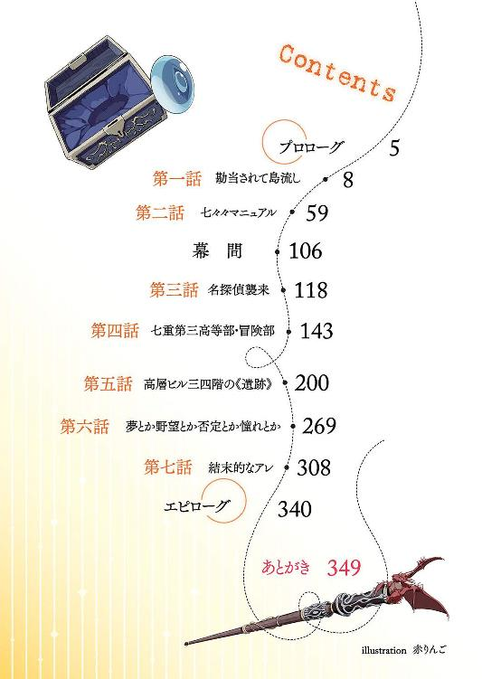
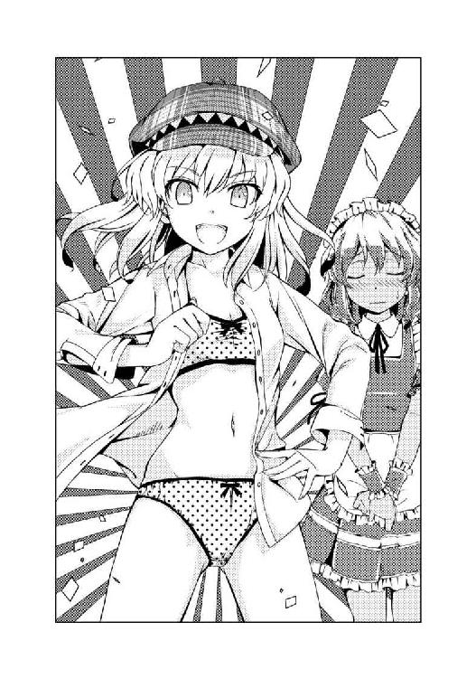

| 龍ヶ嬢七々々の埋蔵金 01 | |
| 鳳乃一真 | |
| KADOKAWA / エンターブレイン (2012) | |

本作品の全部または一部を無断で複製、転載、配信、送信したり、ホームページ上に転載することを禁止します。また、本作品の内容を無断で改変、改ざん等を行うことも禁止します。
本作品購入時にご承諾いただいた規約により、有償・無償にかかわらず本作品を第三者に譲渡することはできません。
本作品は本文縦組で制作されております。ごらんになるリーディングシステムにより、表示の差が認められることがあります。
もうこの世のどこを見渡しても、私の心を躍らせるような冒険は存在しない。
全ての遺跡は調べつくされ、多くの歴史は解明された。地球上で人類が到達していない場所など、後は遥か海の底くらいしかない。かといって、私は別に宇宙になんてなんの興味も無い。そんな無機質な場所に私の追い求めたモノは存在しないからだ。
私が冒険に求めたモノは、先人たちの残した文献や書物をヒントに遺跡を探し出し、謎を解き、その先に眠る宝を手に入れるという達成感だった。
まさにそれは亡き先人たちとの命を賭けた戦いであり、その結果手に入る報酬（先人たちの残した偉大な功績や金銀財宝、英知を越えた秘宝たち）は私にとって勲章だった。
私の人生で、これほど私の心震わせるシチュエーションは他になかった。
だけどそれも、先日までの話だ。
この世には、もうそんな場所は一つだって存在しない。全て暴き尽くしてしまったからだ。
これは由々しき事態であると私は考える。
現代社会という規格に収まれなかった私にとって、今ある現実は酷く平坦でつまらないモノだ。そんな私が今までなんとか生きてこられたのは、冒険があったからなのだ。それが無くなってしまった今、こんな気持ちで一生を過ごすなんて、頭がおかしくなってしまいそうだ。それは生きているとは言わない、体のいい拷問である。
だからこそ私は強く思ったのだ、それは絶対に必要なモノなのだと。
今を生きる私がこんなに退屈で退屈で思いっきり凹んでいるのだ。小さい子供たちやこれから生まれてくるであろう子供たちは、もっと退屈してしまうに違いない。
あんな胸躍る気持ちを知ることなく成長してゆくというのは大問題である。
胸を焦がすような探究心や憧れを追い求める気持ち、夢を追いかけること、それを失うということは、人類にとっての死と同義である。
なんとかせねばと常々考えていた私は、先程プリンを食べている最中、素晴らしい名案を思いついた。
なんてことはない、簡単な話だったのだ。
無いのなら仕方がない。私が作ってやろう。
解くべき謎と挑む心があれば、人は死なない。
それがある限り、笑顔は決してなくならないはずだ。
さて、具体的な方法であるが――
（とある少女が残した日記より抜粋）
「それじゃ、そろそろ行くね」
そう一言告げて、今生霞は鞄を持って立ち上がった。
「本当に行っちゃうの？」
寂しそうに唇を尖らせる少女に、霞は「うん」と頷く。
「いいじゃん、留年しちゃいなよ。あと五年くらい」
少女の物言いに、霞は軽快に笑う。
「縁起でもないこと言わないでよ。第一もう卒業しちゃったよ」
「この島の大学に行けばいいじゃん。ここにはどんな学科の大学もあるし、名前も知られているからそれなりの経歴にもなるよ」
「これでいいんだって、自分の夢を叶えるにはこの選択肢で」
「随分と自信たっぷりじゃん」
「そりゃそうだよ、だって私にはこの先の運命が見えるもの」
霞は鞄から丸い鏡を取り出しそれを掲げる。
「この《人生先読みの鏡》があれば、私は自分の未来を予知できるのだ」
「うわっ、なにそれ、噓くさ」
不機嫌そうにソッポを向く少女に、鏡を鞄にしまう霞は苦笑する。
「秘宝を隠した本人がそういうこと言わないでくれる？」
「......私を殺した犯人を捜してくれるって言ったくせに」
少女のその呟きに、霞は笑顔を引っ込めた。
「ゴメン、でもそれは私には無理なんだ。その役目は私にはできない。なぜなら......」
「もし私を殺した犯人を追えば、自分が殺されてしまうからでしょ？」
霞は頷く。
「そう、それも鏡が私に見せた予知」
「犯人は分かったんでしょ？」
「うん、私は犯人を知っている」
「だけど、それを私には言えない」
「うん、言えない。それも私が殺される運命に繋がっているから」
つまりもう、霞が彼女のためにしてあげられることは何もないのだ。
「なら、さっさとこの部屋から出ていってよ。もうカスミのことなんて知らないから」
不機嫌そうな表情を浮かべる少女は「しっしっ」と霞を手で払う。
「言われなくても出て行くよ。だけど私は決して忘れないよ。この三年間のことを」
霞の言葉に、少女は無言で背中を向けた。だけどその肩は心なしか震えている。
思わずその背中を抱きしめたくなった。だけど少女を抱きしめることは、霞にはできない。いや、心を閉ざしてしまった彼女には、もう誰も触れることすらできないだろう。
だから霞は希望に満ちた予言を残した。
「大丈夫だよ、私には無理だったけど、次にこの部屋に住み着く人がきっと願いを叶えてくれるから」
それだけ言って霞は玄関へと向かった。もう部屋を出ないと船の時間に間に合わない。
「カスミ」
靴を履き終えたところで声を掛けられ振り向くと、部屋の中から少女が霞を見つめていた。
そんな少女は、霞に向かって、ビシッと立てた親指をかざした。
「絶対に絵本作家になるんだぞ」
少女の激励に、霞は泣きそうなのを我慢して笑顔で親指を立てた。
「もちろん。だから、もしまだ成仏せずにこの部屋に取り憑いていたら必ず読んでよね」
１
「いい加減にしてくれ！」
俺は大声で親父に向かって叫んだ。
「もう二一世紀だぞ！ 流行らねえよ、こんな家業！ あんな無意味な人助け、続けるだけ無駄だ！」
ウチには先祖代々から続くしょうもない家業がある。曾爺ちゃんから爺ちゃんへ、そして親父にと、トントン拍子で引き継がれてきた家業は、親父の息子である俺が引き継ぐことが、俺の生まれる前から確定していた。
だから生まれた時から、俺の人生は決まっていた。
そのための下準備は、俺が物心付く前からコツコツと進んでいて、先祖代々受け継がれてきたという匠の技術やらご先祖様が残したありがたい家訓やらを、俺は幼少の頃から日々叩き込まれていた。
順風満帆、実にイイコトだ。
だがそれは周りの意見であって、当の本人からすれば、まったくそんなことはなかったりする。
そりゃ幼少の頃は何の疑問も持っていなかった。そういうモノなんだと教え込まれてきた純真無垢な少年には疑う気持ちなんて小指の先ほどだってなかった。
それが当たり前だと思っていたからだ。
だが成長してゆき、様々な知識を獲得してゆくうちに、違和感が生まれた。
あれ？ 何かおかしくね？ なんで俺が継がなきゃいけないの？
すでにある自分の前に敷かれたレールが気に入らない。そんなモノに俺は縛られない。俺は未開の荒野を突き進む開拓者になりたいのだ。なんてそこまで荒ぶるつもりはないが、それでも自分の人生が決まっていることに違和感はあった。
小中高と年齢を重ねてゆき、様々な経験と交流を積み重ね、その思いは日増しに強くなっていき、最近じゃ、「俺は絶対に家業は継がない」と心の中で密かに決めていたくらいだ。
だからそうなったことはある意味必然だったのだろう。
その日の夜も、俺は親父の書斎に呼び出されて、我が家に伝わる家訓を延々聞かされ続けていた。親父は仕事柄、家を空けがちだったが、家にいる日の夜は決まって俺を書斎に呼びつけて、こうして爺さんたちが残した家訓とやらを話して聞かせた。
正直、耳タコ状態で、残念なことに我が家に代々続く家訓の大半は、俺の脳みそにインプットされてしまっていた。
しかし何度覚えたと言っても、親父は一向にこの作業を止めようとしない。もうろくして俺の話を理解できないのか、はたまたいい年こいて寂しがりなのか、あるいはただ喋りたいだけなのか。子供とコミュニケーションを取りたいのならお小遣いをくれ。
そんな感じで、その日も、親父の長話が始まった。
しかしその日は幾分勝手が違った。
とにかく機嫌が悪かったのだ。親父じゃなくて、俺が。
いつもみたいに自分の気持ちを偽って親父の話を聞き流すことができないほどに。
何せその日は朝から冗談みたいに悪いことばかり起こっていたからだ。
目覚ましをセットし忘れて寝坊するわ、慌てて朝飯食べそびれるわ、遅刻して学校の廊下に立たされるわ、その間教室の中では先日クラスで一番可愛い子に宛てて書いたラブレターがクラスメイト全員に回覧板のごとく回されているわ、弁当忘れるわ、今朝慌てていたからサイフも忘れているわ、俺が抜け駆けしたとか言って友人はおろかクラスの男子全員が金を貸してくれなかったから昼飯も抜きになるわ、学校から帰って部屋に入ったら隠していたＨな本が机の上に置いてあるわ、しかもそれを見つけたのが妹で兄の威厳失墜プラス若干偏った好みがバレて妹にドン引きされるわ、やっぱり母さんにもバレて晩飯抜きになるわ......そして真っ暗な自分の部屋で布団被って色々と思考。
明日から自分が書いた恥ずかしい手紙の内容を全て知っているクラスメイトたちが待つ学校に行きたくないとか、色々と性に対して多感な中学生である妹の視線が痛いを通り越して怖いとか......ああっ、もう無理。だけど諦めるな。きっとなんとかなると自分を奮い立たせるも、一○秒後にはこれらの関係修復はどう考えたって不可能だという結論に達し、こうなりゃ時間を巻き戻すしか......
そんな状況でいい年こいたオッサンに書斎に呼び出されてダラダラとウザい長話を聞かされたら、そりゃキレますよ。
こちとら、今日一日で長年培ってきたイメージとかプライドとかピュアな高校生男子にとって大事なもんを色々と失ってるっちゅーねん。しかも朝から水しか飲んでないっちゅーねん。そんな時にカビが生えたような家訓なんて聞いてられるかっちゅーねん。
俺は今すぐ今日一日の時間を巻き戻すための行動を起こさなきゃならんのだ。
ちなみに強制一日断食の先に見た悟りの境地は、青いネコ型ロボットの特殊召喚であった。「机の引き出しに大量のドラ焼きを詰め込めばどうにかなるんじゃないか？」という圧倒的閃きを今すぐ試すべく、近所の和菓子屋に走らなければならないのだ。
こんな所で無駄な話を聞いている暇はない。
そんな思いも手伝って、気がつけば、俺は長年、腹に溜め込んでいた家業に対する不満を洗いざらい全部親父にぶちまけていた。
「――もう、うんざりだ！ いい加減にしてくれ！ 俺は絶対に親父の跡なんて継がないからな！」
叫び過ぎて若干酸欠になりながらも、今まで溜まりに溜まっていた不満をぶちまけることで、多少気分はすっきりしていた。
だが、それと同時に親父の反応が気になった。少し言い過ぎたかもしれないと、やや反省しながらも親父を見る。親父はただ黙って腕を組んで考えていた。
やがて親父はポツリと言った。
「カンドウだな」
「なにを感動するようなことがあるんだよ？ 俺の物言いがそんなに親父の胸を打ったか？ それは良かった」
「お前の頭の弱さに感動はしたが、その感動じゃねえよ。勘当だ」
そこで俺はカンドウ違いをしていたことに気がついた。だってそんなのはしようがない。まさか家業を継がないと言ったからっていきなり親子の縁を切られるなんて思ってもいなかったのだから。というか、普通に考えてそりゃいくらなんでも話が急過ぎるだろう。
そう言ったら、親父が片眉を上げた。
「なら家業を継ぐか？」
「絶対に継がない」
これは俺の中での決定事項だった。あんな古臭い家業なんて絶対にやりたくない。
「なら勘当だ、今すぐオレの前から消えろ」
そうすっぱり言い切られた。
朝から脳への栄養補給がなかったために忘れていた。親父は無駄に決断力と実行力に秀でたオッサンであるということを。
だがそう言われ「はい、そうですか」とは言い返せなかった。
「こんな家、出てってやるよ！」と勢いのまま家を飛び出すのが青春真っ盛りの若者の正しい行動なのかもしれないが、生憎そこまで後先考えずに行動できるほど、俺は熱い人間ではなかった。だから結局、そのまま動けなかった。
これが前もって心と家出の準備をしておいたのなら話は違ったのかもしれない。計画的に親父に向かって「あばよ」と吐き捨てられたかもしれないが、突発的な話の流れにどうしていいのか分からなくなってしまったのだ。
我ながら情けない。
そんな立ち尽くす俺に向かって親父が再び言った。
「意地を張るのは止めろ。お前は黙ってオレの跡を継げばいいんだ」
「それはしない。男に二言はない」
だけど、今すぐ出て行けと言われても困る。
「まったく、中途半端なヤツだ。打算なく動けないくせに、信念だけは一人前か」
息子の性格を的確に言い当ててくれてありがとうよ、クソ親父。
それからたっぷり一○分ほど考えを巡らした親父は、こう結論を出した。
「とりあえず、あれだな。お前は高校卒業したら勘当な。それまでは親の義務と思って学費と最低限の生活費は提供してやる。だがオレはもうお前の顔なんか見たくないからこの家からは追い出す」
そう言って、紙にペンを走らせ、それを俺に突きつけた。
「あと一時間やるからそれまでに出て行け。学校も転校しろ、行き先はここだ」
紙にはこう書いてあった。
学生特区《七重島》、私立七重島第三高等部
「判決を申し渡す。八真重護、その方は島流しの刑に処す」
遠山金四郎っぽくそうほざく親父は、自分の息子を追い出す時までファンキーな物言いだった。
一時間後、見事に家を追い出された俺は、ウチの家業を手伝ってくれている棟梁の家に転がり込んでいた。棟梁は職人気質の無骨なオッサンだ。言葉数は少ない、背中で語るタイプの男である。だが根は優しい人で、俺も小さい頃から大変お世話になっていた。
棟梁の奥さんが作ってくれた温かいうどんを食べながら、俺は棟梁夫婦の前で久しぶりに涙を流した。
悔しかった、本当に悔しかったのだ。
突然勘当されて何もできず呆然としてしまったこととか、親の意向に反発したくせに親に力を貸してもらわなければ生きることもできない無力な自分の存在とか、結局親父の言いなりで島流しの刑を甘んじて受けている惨めな自分とか......
もしまだ棟梁の家に娘さんがいたら、たぶん俺は泣けなかっただろう。
大学進学を機に一人暮らしを始めた、俺より三つ年上の美人で、眼鏡を掛けてメイド服を着てくれたら完璧に俺のドストライクである姉さんがいたら、俺は強がって泣けなかっただろう。
優しい棟梁夫婦の前だから素直に泣けたのだ。
俺はたぶん、小学四年生の時にクラスメイトの女の子のスカートを捲った報復に三階にあった教室の窓から突き落とされた時ぶりくらいに、心の底から本気で泣いた。
こうして俺こと八真重護は、ある日突然、執行猶予付きで勘当された挙句、太平洋に浮かぶ孤島へと島流しにされたのであった。
２
暗雲立ち込める荒波の中を進む船の先端に、ポツリと立つ男。行く先である北から吹き付ける冷たい風は、家から追放され心の傷を負った男に容赦なく吹き付ける。船は男を乗せて絶海の孤島へと向かう。
......はい、ウソです。まったくのデタラメです。むしろまったく正反対です。
「俺は自由だぁー！」
両手を高々と掲げ、大海に向かって叫ぶ。海賊王になるために船出したゴム人間くらい大声で。
親父から島流しを言い渡されてから三日、俺は七重島へと向かうフェリーの中にいた。
空は俺の門出を祝福せんばかりの快晴、南へと向かうフェリーは穏やかな水面をスイスイと進む。南からの風は温かくて心地好い。そして何より、俺の心は実に晴れやかだった。
親父の判決により勘当的に島流しを言い渡された晩はマジ泣きしてしまったが、泣いて一晩が過ぎたら、もうケロッとしていた。悔しさは涙と共に流れ、心はスッキリ、気分もサッパリ。なるほど、辛いときは我慢せずに素直に泣けばいいのか。泣くのなんて格好悪いから良くないことだろうと思っていたけど、そうでもなかったらしい。これからは辛いときは積極的に泣いてみることにしよう。もちろん、こっそりとだけど。
まあ色々ありましたが、結果的にはあの家からも解放されたのだ、これからは思うがまま好き勝手に生きてやろう。
「俺は自由だぁー！」
という訳なのでもう一回くらい叫んでおいた。気分はまさに最高潮だ。
そんな俺を乗せたフェリーが向かう先はグランドラインではなく、《学生特区》の名で有名な南の楽園・七重島。
南の島で一人暮らし、きっとそこには青春一杯のイベントが待っているに違いない。
過去のしがらみにも、もう囚われることはない。ゼロからのスタート。だからこれまで培ってきた全てのモノを捨てようと思う。
家族のことも忘れよう、棟梁たちのことも涙を飲んで忘れよう。女の子に手紙を書いたくらいで村八分を敢行した友人たちのことも綺麗さっぱり忘れてやろう。
さらばだ、アディオス、アミーゴ。
という訳で、心は新たなる新天地。さっそく目的地である七重島のパンフレットに目を向ける。
『七重島は太平洋に浮かぶ人工島である......』と、このパンフレットの最初に書かれてはいるが、内容を見る限り、これでは改造島というのが正しいと思う。
パンフレットの説明によると、七重島の元となったのは、岩礁地帯の中の小さな無人島だったらしい。そこに海中から引っ張り上げてきた岩やら本土から運んできた土やら最新技術の人工フロートやらを組み込み、今の七重島になったそうだ。現在の大きさは瀬戸内海に浮かぶ淡路島とほぼ同じ。だが増島工事は現在進行形で進んでいるらしく、大きくなり続けているらしい。ちなみに俺は淡路島に行ったことがないから、島がどのくらいの大きさなのかなんてちっとも想像できなかった。
ちょうど島が見えてきたという船内アナウンスがあったので、そちらに目を向ける。
「......めちゃくちゃデカイな」
フェリーから島の姿を確認してから島に着くまで三○分近くかかった。間近で見ると、ここが島なのかどこかの大陸の半島なのかまったく分からない。というか、そもそも生で見ても、この島がグリーンランドより大きいか小さいかなんて判断、俺にはできない。まあここが大陸でも島でも俺に言わせればどっちでもいい。だから結論だけを言えば、およそ一○万人が生活する七重島は、俺の想像以上にデカかった。
荷物のドラムバッグを一つ担いで、フェリーから船着場へと降りる。
足元にはキチンと地面があるが、パンフレットによると、これは本当の地面ではないらしい。七重島の沿岸部は全て、最新技術の粋を集めて造られたフロートタイルの地面で構築されている。つまりこの地面のすぐ下は海なのだそうだ。だが海に浮いているとは到底思えないほど足元はしっかりしている。......というか、このパンフレットに書かれていることってウソじゃね？ と思ってしまうほど、普通の地面となんら変わりない。
そんなことを考える俺を、テレビで見たハワイ特集に出てくるようなフラガールっぽいお姉さんたちが出迎えてはくれなかったが、代わりに「おいでませ、七重島へ」というアーチの下で身構えていた警備員っぽいオッサンたちが近づいてきた。
「ようこそ、七重島へ。こちらで入島手続きを行って下さい」
そう言って、隣の建物へ誘導され、人が並ぶ列の後ろに並ばされる。
そこはまさに、テレビで見た外国の空港にある入国チェックの光景と同じだった。
手荷物が金属探知機みたいな機械にかけられ、執拗な身体チェックを受け、ようやく審査官との質疑応答。七重島に来るために発行された身分証明書を渡すと、審査官が俺のことを頭の天辺から足のつま先までじっくりと値踏みしてから口を開く。
「この島に来た目的は？」
何か奇抜なことでも言って笑いをとってやろうかと思ったが、審査官の隣に、親父のレトロゲームコレクションの中にあったスーパーファミコン・ファイナルファイトの三面のボスである悪徳警官エディ・Ｅを彷彿とさせるガタイのいい警備員が手で警棒を弄んでいるのが見えたので、正直に答えた。
するとあっさり身分証明書に判子が押され、そのままゲートを抜けることができた。
同じ国内としてはありえないくらい厳しいチェックをクリアし、本当の意味で七重島へと足を踏み入れた。
そして目の前に広がる街並みを見て、俺は素直に感心した。
「へぇ、凄いな」
洗練されたデザインの建物が立ち並び、それらを大きな視点で眺めた時の街並みの美しさと雄大さに、思わず見惚れてしまう。
さすがは天才と呼ばれる建築家が作った街である。
だがそれより俺にはもっと気になったことがあった。
それは街を歩く人たちだった。
とにかく皆若かった。というか見渡す限り全員制服姿の学生なのだ。まあ、島に住む住人のほとんどが学生なのだから当たり前か。
七重島、別名《学生特区》。島の住民の実に八○％以上が学生という南の楽園。ここは、学生の育成のために造られた人工島なのである。学校数は中高大合わせて全部で二一、学科数はその五倍になる。島には、様々な研修に対応する多くの施設に加え、最新鋭の研究設備までもが完備されているらしく、ここの特殊な設備を使うために、わざわざ海外の大学から有名な教授がやってくるらしい。
しかし、パンフレットに載っていた、そんな小難しい話なんてどうでもいい。
「......いやー、ええですな」
南の島、女の子沢山、開放的な気分。
俺のテンションは間違いなく、この島が作られた目的とは別のベクトルで跳ね上がっていた。
このまま島の散策を始めたいところだったが、とりあえず新たな住居へと向かうのが先決だ。目の前に並んでいたタクシーの一台に乗り込み、運転手さんに住所の書かれた紙を渡す。
タクシーは車の少ない道をスイスイと進み、目的の場所には二○分ほどで到着した。
住宅街の中に立つ小綺麗な二階建てのアパート、その名も『幸せ荘』という。
「......うん、名前に関してツッコむのは止めよう」
不動産屋で渡された紙の指示に従い、アパートの離れにあった管理人室の扉をノック。
「あいよー」
そんな声とともにドアから出てきた管理人さんは、メチャクチャ美人だった。
幸先良し、心の中でガッツポーズをしながら管理人さんを観察する。
長身で細身、というか引き締まった体つきだ。背中まである長髪、「ふわぁ」という欠伸と共に涙を浮かべる瞳はどこか魅惑的。あとオッパイが大きかった、Ｅカップのグラビアアイドルぐらい。そして何より格好がけしからん。タンクトップでショートパンツだなんて、そんなはしたない格好アリですか！ そんなけしからん格好でいったい管理人さんは何を管理するつもりですか!? と口走りそうになったが、さすがにそれを言ったら変質者確定なので自重する。どうやら無駄にテンションが上がっているようだ。
ちなみにそんな只者ではないオーラが滲み出ている管理人さんからは、ついでに酒臭さも滲み出ていた。
土曜日とはいえ、午後一時にもかかわらず眠気眼の管理人さんに部屋の中に通される。
「えーっと、八真重護クンね」
ビールの空き缶が散乱する酒臭い八畳の畳が敷き詰められた部屋の中、ちゃぶ台を挟んで向かいに座る管理人さんの質問に「はい」と返事をする。
「えっと、私はこの幸せ荘のオーナー兼管理人の真幌肆季です。一応歳は二八歳くらい。主な仕事はこの幸せ荘を見ていることです、よろしくね」
堂々と職務怠慢を公言するような発言と共に、管理人さんは笑顔を浮かべる。
「どうも、よろしくお願いします」と俺も頭を下げた。
「んで、重護は幾つなの？」
業務的なやり取りはもう終わりと言わんばかりに、肆季さんはいきなりフランクな言葉遣いになった。
「えっと一六です。明後日から第三高等部に転入します」
「ふーん、大人びて見えるね」
「そういう管理人さんはお若く見えますね」
途端に肆季さんは嬉しそうに微笑んだ。
「いやーっ、重護はいいヤツだな。なんか飲む？ ビールしかないけど、もう飲めるべ」
あんたは久しぶりにあった親戚のオッサンか。
そう心の中だけでツッコんで、土曜の昼間から未成年に酒を振る舞おうとする管理人さんの申し出を丁重にお断りすることにした。
「すみません、医者に止められているんで」
「そっか、じゃあ私が飲む」
俺の爽やか笑顔のボケを爽やかにスルーしてくれた肆季さんは、「よっ」と長い足で立ち上がり、そのまま冷蔵庫をガチャリと開き、中から缶ビールを取り出した。プシュ、とプルタブを上げて、一気に口元に。
ゴクゴクゴク......
もちろん腰に手を当てることは忘れていない。そして「くぅっー！」と歓喜の表情。
「って、本当に飲みだしちゃったよ、この人！」
「あん？ 私は飲むって言っただろ？」
どうやら冗談じゃなかったらしい。
「それにしても高校二年の五月なんて、また随分と中途半端な時期の転入だな」
缶ビールを傾けながら、肆季さんは「よっこいしょ」と元の位置に腰を下ろす。
「ええっ、家庭の事情がありましてぇ......」
なんとなく視線を逸らして返答。
「お父さんとかの仕事の関係か何か？」
「はぁ、そうともいいますかねぇ......」
「どんな仕事をしている人なの？」
「まぁ、なんと言いますか、慈善事業的な分類に入る事柄を少々......」
まさか半勘当状態ですなんて言えないのでそれとなく話を流していると、肆季さんは「ふーん」と言って、それ以上聞いてはこなかった。
「まあなんにしても運がよかったね、転校生。こんな中途半端な時期に中々空いている部屋なんてないよ」
七重島の主な人の出入りは三月、島を出て行く卒業生と島にやってくる新入生の往来だけであるらしい。そしてその時期に大半の学生は自分の住む場所を決めてしまうので、それなりの物件は普通なら残ってはいないそうだ。
「あの......そのことなんですけど、本当に家賃はこの値段でいいんですか？」
先日不動産屋から貰った紙を見せると、幸せ荘の所有者でもある肆季さんはコクリと頷いた。
「うん、収納アリの八畳１Ｋバストイレ別、テレビやパソコン、洗濯機、その他もろもろが付いて、月々五千円ポッキリだよ」
それは二日前のこと、七重島への強制移住が確定し、住む場所を探すべく、七重島の物件を一手に取扱っているという大手不動産屋の支店を訪れた時のことだった。
「それで、何かご希望はございますか？」
整髪料で髪をしっかり整えたスーツ姿の店員さんに笑顔で尋ねられ、俺はこう答えた。
「安ければいいです」
シンプルな回答に、店員さんは重ねて尋ねてきた。
「どれくらいお安いのがよろしいですか？」
「安ければ安いほどいいです」
これは本当の願いだった。
家を追い出された次の日の朝、携帯電話に親父からのメールが届いた。
『最低限の生活費として月五万円を支給する。足りなければ、バイトでもなんでもしろ』
そこで一瞬喜んだのを覚えている。五万円なんて大金、正月でもない限りお目にかかれない金額である。それが毎月貰えるというのだ、こりゃスゲェと。しかし、そこで思い直す。はたしてこの五万円という金額は、まったく何の生活保障のない高校生が一月を生活するうえで、どれくらいの価値があるモノなのだろうかと？
調査結果は、「とんでもねぇ！」の一言だった。
すぐに『いやいや、絶対に無理だって！ もっとくれ！』と返信すると、一分しないうちにまたメールが届いた。
『なら四万円にしてやろう』
いやいや、まってくれよ。おかしいやん、むしろ下がっているやん。
すぐに文句のメールを送ろうとして思い止まった。下手するとまだまだ下げられる可能性があったからだ。つーか、あのオッサンならやりかねない。
結局四万円というありえない金額で衣食住の全てをやりくりしなくてはならなくなった俺にとって、毎月最も費用が掛かるであろう家賃は、かなり切実な問題だった。下手をすれば、仕送りだけで家賃が支払えるかすら疑問であった。
そんな俺の回答に、店員さんは、しばらく考えた後、神妙な面持ちでこう尋ねてきた。
「安ければどのような物件でもいいということですか？」
「はい」
「本当に？」
「はい」
「では今ちょうど、こんな物件があるのですが？」
そう言って、店員さんが見せてくれたのは、物件の情報が記載されたファイルの一ページと数枚の写真だった。
その写真を見て少し驚いた。
それは部屋の中を色々な角度から撮影した写真だった。内装も綺麗で、しかも家具も全部付いている。何より気になるのが、なぜか可愛い女の子が写っていることだった。様々なアングルから愛らしいポーズを取り、笑顔でピースサイン。作品のタイトルとしては『部屋に帰ると彼女がくつろいでいた』みたいなカンジだ。
「あの、これって今住んでいる人ですか？」
「いいえ、ここには誰も住んでいませんよ」
それはそうか、誰かが住んでいたら賃貸物件として紹介される訳がない。という事は、この子はモデルさんか何かということか。へぇ、部屋の紹介にはこういうスタンスの写真もあるんだ。それにしても可愛いな、この子。少し好みのタイプである。
「えっと、この女の子はなんて名前ですかね？」
見たことがなかったモデルさんだったので、思わず名前を訊いてしまった。
「申し訳ございません、名前はちょっと分かりかねます」
なるほど、まだそこまでメジャーじゃない子なんだ。だけど可愛い。これならすぐにブレイクするに違いない。チェックしておこう。
そう密かに思いながらも話を戻す。
「この部屋家具とかありますけど、ない写真は？」
「いえ、この部屋はテレビやパソコン、洗濯機、その他もろもろが付いているんですよ」
家具付きの部屋、家財道具ゼロの身の上としては、それはなんともありがたい。
「ですけど、高くないですか、この部屋？」
「いえ、家賃はひと月で五千円です」
その値段に、一瞬唖然としてしまった。
「ご、五千円！ えっ、それおかしくないですか!?」
思わず叫んでしまった。そりゃそうだ。幾らなんでもそれは安すぎる。
「まあ七重島の物件はどこも学生さんがメインですので、学生割引ということでそれなりにお安いですから」
「それにしてもこれは安すぎません？」
「はい、明らかに安すぎます。ですからお勧めはしません」
部屋を紹介するのが仕事であるはずの不動産屋の店員が言い切った。そこまでキッパリ言われると逆に清々しいくらいだ。ちなみに同じ条件の物件を七重島で探すとしたら最低でもこの七、八倍くらいはするらしい。
とりあえずこの物件を保留して幾つか候補を見繕ってもらったが、最初の一発目に紹介された物件のインパクトがあまりにも大きすぎたためか、どれもこれもがイマイチ。
というか現実問題、家財道具一切が揃っている破格の格安物件以外、半勘当学生が選べる選択肢はなかった。
そんな出来事を思い出していた俺に、ほろ酔い大家が「あっ、そうそう」と尋ねてきた。
「不動産屋から、『但し......』っていう条件があるのは聞いた？」
「はい、敷金礼金はいらないが、家具は壊したら弁償。それと家賃は一年間の前払い」
肆季さんは「そう」と頷く。
「そんで、いかなる理由があっても、決して家賃の払い戻しはできない。オーケー？」
つまり初期投資に六万を渡せば、一年間は家賃に関して気にする必要がなくなるというわけだ。最初に六万はかなり痛い出費だが、少ない貯金と最初の生活費を足せばどうにかなる。辛いのは最初の一ヶ月だけ。それを越えるまでの辛抱だ。
「お願いします」
「んじゃ、ここにサインして」
出された契約書に名前を記入して拇印を押す。さらに準備してきた一年分の家賃の入った封筒を「お納め下さい」と恭しくちゃぶ台の上に置き、「ずずずぃ」と大家様の方へと押しやる。
すると「あいよ」と封筒を拾い上げた大家さんは、何を思ったか、中身も確認しないで、封筒を「ポイッ」とその辺に放り捨ててしまった。
「えーっ！」と驚く俺を他所に、ズサンを通り越してアホとしか思えない大家さんは、「んじゃ、部屋に案内するからついてきて」と立ち上がった。
飲みかけの缶ビールを持ったままの肆季さんに案内され、管理人室を出た俺たちは、隣接する二階建てのアパートへと向かった。
幸せ荘の部屋は全部で六つあり、各階に三部屋ずつあるらしい。俺が今日から使わせてもらう部屋は二階の真ん中にある二○二号室だ。
階段を上がり、部屋の前まで来ると、肆季さんは豊満な胸の谷間からカギを取り出した。
「はいこれ」
なぜそんな所から？ と思いつつ、人肌に温められたカギを受け取る。
「好きに使っていいわよ」
なにを？ カギを？ どうやって？
用途に関してはあとでじっくりと検討しようと心に決めつつ、とりあえず正しい使用方法に則り、鍵穴に一番奥まで差し込む。捻りを加え、ガチャリと開錠し、扉を開く。
「私はしばらくここで風に当たっているから、中を確認してきてよ」
手すりに寄りかかる肆季さんの物言いに首を傾げながらも、とりあえず扉を開けて中へと入った。
半畳ほどの玄関、入るとすぐにキッチン部分。右側にシンクとその隣に洗濯機、左側には風呂とトイレの扉が並んでいる、そして奥には、今日から俺のメインの生活空間となる部屋へと続く扉がある。
そこでふと、妙なことに気がついた。
「ん？ テレビの音が聞こえるような？」
気のせいか、ガヤガヤと部屋の方から音が聞こえる。
不審に思い、玄関で靴を脱ぎ、キッチンを抜けて、ガチャリと部屋の扉を開いた。
「えっ？」
「ん？」
ベッドの上に腰掛けながらプリンを食べている女の子と目が合った。
３
ワンピースを着た女の子は、俺を見て驚いた表情を浮かべたまま固まっていた。
見つめられながら、俺も女の子を凝視してしまう。
ぷるんとしていた、スプーンに乗ったプリンもそうだが、その唇も。円らで大きな瞳。ふんわりした長い髪には可愛らしいデザインのリボンが結ばれていて、その首元には掌サイズほどの不思議な珠のネックレスがぶら下がっている。女の子独特の華奢な体つき、ワンピースの上からでも理解できるくらい綺麗な身体のライン。
一○○人いれば特殊な性癖を持つ五人を抜かした残り九五人が可愛いと答えるに違いない美少女がそこにいた。
「......すみません、間違えました」
そのまま部屋のドアを閉めて、玄関で靴を履いて、外に出て、しっかりと施錠してから、大きく深呼吸をする。
ひっひふー、ひっひふー、......よし、俺はいたって冷静だ。
なぜか踏ん張りの利いた俺は、改めて扉の上に目を向ける。そこにある古いプレートには確かに『二○二』という三桁の数字が並んでいる。
間違いない、ここは確かに今日から俺の城になった部屋だ。ならさっきの女の子はいったい......ん、待てよ？ あの子、どこかで見たことのあるような気が......って。
「あの写真の子だ」
先程部屋でプリンを食べていた女の子は、間違いなく不動産屋で見せられた写真に写っていた女の子だった。
なぜ彼女があそこにいる？ なぜだ？ いや、待て。そんなわけないじゃないか。可愛いモデルの女の子が俺の部屋にいるわけがないじゃないか。きっと見間違えたんだ。あの写真に写っていた女の子があまりにも可愛かったからきっと俺の脳みそが、俺に無断で幻覚を見せたに違いない。きっとそうだ。しかしそうなると疑問に思うことがある？ 脳がウソをつくということは、本当の俺の意思というのはどこにあるというのだ？ そもそも人の魂とは......って、なに哲学寄りに脱線してんだ、落ち着け、俺！
さっきのが幻覚だったのかどうかを確認する方法なんて簡単じゃないか。
「もう一度、入ってみればいいんだ」
という訳で、ワンスモア。
脂汗で湿った手の中にある鍵を扉の鍵穴に突っ込み、再び開錠、ドアノブを捻って、扉を開ける。玄関で靴を脱いで、キッチンを素通りして、すぐの部屋の扉を開く。
「あはは」
テレビを見ながら、愛らしい笑顔で楽しそうに笑っている女の子が間違いなくそこにいた。
再び部屋の扉を閉めて、玄関で靴も履かずに、扉を開き、一言。
「どういうことだよ、これは！」
叫ぶ俺の姿を見て、海からの風を浴びながらビールを楽しんでいた大家がカラカラと笑った。
「いやー、しかし何度見ても面白いな。この部屋に来たヤツは大概最初に同じような行動をとるんだよね」
「笑ってないで答えてください！ 彼女は誰ですか！ 何でこの部屋にいるんですか！」
「彼女？ 誰のことだい？ この部屋には誰も住んでいないよ？」
「この期に及んでそんなウソをつくな！」
「なら確認してみよう」
自信たっぷりの肆季さんは、俺を押しのけ、二○二号室へと入った。
その不敵な態度に思わずドキっとする。
アレ？ 本当にいないカンジか、コレ？ いやいやさっきいたじゃん......ということはまさかアレか？ このまま部屋に行っても誰もいないとかいうパターンか？
ゴクリと唾を飲む俺を差し置き、キッチンを過ぎた肆季さんは、その先の部屋のドアノブに何の躊躇もなく手を掛けた。
ガチャリ
「あーはっはっ」
そこにはやっぱりお腹を抱えて笑っている女の子がいた。
「って、やっぱりいるじゃん！」
思いっきりツッコむが、肆季さんは気にした素振りもなく部屋へと侵入。そのままその場で立ち尽くす。
あれ？ 何、その反応。もしかして、俺にしか見えていないとかいうオチ？
「あはははっ」
そしてテレビを見て笑い始めた、肆季さん。
「って、立ったままテレビ見ていただけかい！」
「つーか、面白くない、この番組？」
「でしょ？ 私これ大好き」
二人は顔を見合わせて大笑い。
「顔見知りかよ！ しかもすげぇフレンドリーだし！」
一頻り笑った肆季さんは、振り返りながら一言、
「ねっ？ ここには誰もいないでしょ？」
「あんたの目は節穴か！ 思いっきり目の前に女の子がいるだろうが！」
プラスチックのスプーンですくったプリンを可愛らしく頰張る女の子を全力で指差す俺に、肆季さんは目を細め、ニヤリと笑って、もう一度言った。
「だからさ、ここには人間は誰も住んでいないんだって」
ヒヤリと背筋に冷たいモノが通り過ぎて、鳥肌が立った。
気温は変わっていないかもしれないが、間違いなく体感温度は五℃くらい下がった。
「な、なら、その子は？」
震える手で彼女を指差す俺に、肆季さんは言う。
「ああっ、この子？ この子はあれよ、一○年くらい前にこの部屋で殺された女の子の霊よ」
肆季さんは真顔だった。
「えーっ、そんなにあっさりバラしちゃうの！」
幽霊少女（仮）は不満そうな声を上げた。
「だって、もう家賃は貰ったし、あとは私の知ったことじゃないもん」
そこで気がついた。
家賃が破格の五千円。不動産屋は「本当にどんな物件でもいいのか？」としつこいくらいに念押ししていた。さらには家賃が一年間前払いという奇妙な条件付き......つまり。
「騙された！」
「騙してないよ、失礼だな」
「幽霊物件だなんて聞いてない！」
「ちゃんと言ったよ。冷蔵庫に、パソコン、テレビに洗濯機、その他もろもろがツいているって」
その他もろもろ......つまり家財道具一式が付いている、ついでに幽霊も憑いている。
「どんなダジャレだよ！」
「ととのいましたー」
「整ってねえよ！ つーか思いっきり詐欺だ！」
「うん」
「認めたよ、この管理人！」
「浅はかだな、転校生。そんなのは騙される方が悪いのだ」
「......」
「あれ？ なんも言い返してこないの？ つまんないなぁ」
不満そうな肆季さん。
もちろん俺は言い返したかった。だが、その一言にはグウの音も出なかったのだ。
我が家の家訓の一つにこういうモノがある。
『騙すことが罪なのではなく、騙されたことが罪なのだ』
旨い話には裏がある。それを看破できずにホイホイ信じた時点で負けなのだ。不審に思う点は幾らでもあった。それを深く追求せずに、ここに住むと決めた俺が悪いのだ。
昔から散々親父に言われ続け、自分では解りきっていたと思っていたのに、俺はあっさりとその愚を犯してしまった。
「まあ、そういうことだから、出て行きたくなったらいつでも出ていって構わないから。ああっ、その時は一言声かけてね。また次の募集かけるからさ」
そんなこと言われてもすぐに出て行ける訳がねえだろうが！ こちとら金がないんだよ！ ......と心の中で叫びながらも、結局はただ黙って歯軋りをするしかなかった。
なぜなら悪いのは俺だからだ。
そんな俺を嘲笑うかのように、酔っ払い大家は「んじゃ、またね」と笑いながら出ていった。
何も追求できずに肆季さんを見送り項垂れるしかなかった俺は、「じーっ」という視線を感じそちらに目を向けた。
幽霊少女（仮）がこちらを見ていた。
「とりあえず、座ったら？ ここはキミの部屋なんだから」
取り乱していた俺とは違い、幽霊少女（仮）はいたって冷静だった。
とりあえず言われるがまま床に腰を下ろす。
「クッション、そこにあるよ」
勧められたカエルの顔のクッションの上に座りながら、ザッと部屋を見渡す。
壁際には四○インチの大型液晶テレビ、台座の中には、ＨＤＤプレイヤーに、最新ゲーム機。勉強机には、パソコンの薄型モニター。スライド式の引き出し部分には、キーボードとマウス。本体は机の下にある。
隣には本棚があるのだが、中身は空だ。それに妙なのが部屋の片隅にある冷蔵庫。キッチンにではなく、なぜか部屋の中に置いてある。床に敷いてある淡いグリーンのカーペットは草原を連想させ、その上には白い折り畳みテーブル。後は今、幽霊少女（仮）が座っているベッド。大きさはシングルサイズ。
埃が積もっている形跡などもない。どうやら定期的に掃除されているようだ。
そんなキョロキョロする俺に、幽霊少女（仮）が微笑む。
「ねえ、名前はなんていうの？」
「......八真重護です」
「ふーん、私は龍ヶ嬢七々々、よろしくね」
「な、ななな？」
「『な』が一個多いよ。な・な・な。リピート・アフタ・ミー」
「それ、本名ですか？」
「うん」
「凄い名前っすね」
なんて素直な感想を述べながらも、まずは確認すべきことがある。
「えっと、本当に幽霊なんですか？」
「うん、地縛霊だよ、一○年物の」
それはまた随分と熟成されておりますな。
「えっと、さっき肆季さんも言っていましたけど、龍ヶ嬢さんは......」
「七々々でいいよ」
随分とフレンドリーな地縛霊だ。
「えっと、七々々......ちゃんは、この部屋で殺されたと？」
「うん、こんな感じで」
笑顔で床に寝そべる七々々ちゃん。表情もしっかり死人を演出してくれて実に細かいと思うのだが、本人が死んだシーンを本人が演出しているというのがまったく笑えない。
「死因は？」
「背後から一刺し」
部屋の入り口に足を向けてうつ伏せに倒れている姿からして、どうやら部屋に入ったのと同時に背後から襲われたらしい。
まあ、そんな考察は置いておくとして、そもそもの疑問。
「って、こんなこと聞くのもなんですけど、幽霊って普通、こんなに見えたり物に触れたり、プリン食べたりできるものなんですか？」
「さあ、私幽霊見たことないから分からないな」
おいおい、なんだか面白いこと言ってんぞ、この地縛霊。
というかどうする？ って、どうしたらいいんだ、マジで？ いやいや待て待て。現段階では、この七々々ちゃんは自分のことを地縛霊だと言い張っているイタ可愛い女の子でしかないではないか。
なんにしてもまず彼女の正体を確認せねば。
「えっと......握手してもらってもいいですか？」
「うん、いいよ」
そして笑顔で差し出された手は、俺の願いに反してあっさりとすり抜けた。
本当に目を疑った。とりあえず再挑戦。そして再びすり抜ける。今度はゆっくりと手を近づけ、俺の手は七々々ちゃんの手と重なった。それはとてもシュールな光景だった。俺の手の中から七々々ちゃんの指が飛び出しているのだ。はっきりいって見ていて気持ちのいいものではないのですぐに手を引っ込めた。
「どう、これで満足した？」
どうやら俺の考えなどお見通しであったらしい。
「それじゃ改めてよろしく」
笑顔の七々々ちゃんは再び俺の手に自分の手を伸ばし、今度はしっかりと俺の手を握った。
柔らかい女の子の手だった。だけどその手はひんやりと冷たかった。
こちらからは触れられないのに、なぜか向こうからは触れられるらしい。
なんだか細かい設定がありそうなのはさて置き、なんにしてもこれだけは断言できる。
この子、マジだ。マジで本物の地縛霊だ。
そんな呆然とする俺を見ていた七々々ちゃんがにっこりと笑う。
「さて、重護が私のことを地縛霊として認識してくれたところで、さっそくバトルを開始したいと思います」
そして突然、地縛霊が訳の分からないことを言い出した。
「......へっ？ バトル？ 戦う？ なんで？」
「そりゃ、この部屋の主を決めるためだよ」
常識を逸脱した存在は、考え方も常識を逸脱しているらしい。
「意味分かんねえ！」
「だからさ、この部屋の借り主は重護でしょ？ だけどここに先に住んでいたのは私じゃん。ならどっちがこの部屋の主で、どっちが居候なのか、最初にそれをきっちりと決めておいた方がいいでしょ？」
「いやいや、その理論おかしいし！ ......おかしい。あれっ？ おかしいよな、これ？」
急な展開に混乱中。
「難しいことを考えたって意味はない。所詮この世は弱肉強食なのさ」
「いや、あんたはもう『あの世』の人じゃん」
ツッコんだら、「おっ、それ面白いね」と楽しそうに拍手されてしまった。
「まあさ、たぶん互いに言い分はあると思うんだ。だけど私の経験上、地縛霊と人間が同じ部屋で生活するのに、折り合いなんてまずつかない。結局どっちかの意見を採用してどっちかが我慢するしかない。だから、どっちがその主導権を握るかっていうのは重要でしょ？」
もっともな意見だ。
だが、平和主義者としては争いごとなく会話での解決を目指したいところでもある。
「えっと、七々々ちゃんは部屋から出ていってはくれないの？」
「出て行くも何も動けないもん、地縛霊だから」
そりゃそうだ。
「えっと......成仏とかしない？」
「したくないからここにいるんじゃなくて、できないからここにいるの」
「なるほど。ならどうしたら成仏するの？」
七々々ちゃんはにこやか笑顔で答えた。
「私を殺した犯人を見つけてこの手で殺したら」
おいおい、随分と物騒なこと言い出したぞ、この地縛霊。だが確かに、地縛霊の本質は恨み辛みによってその場所に縛られている、ということだからそれを取り除いてあげないと成仏できないのかもしれない。
「なら俺がどうにかしてあげるからさ、とりあえずケンカは止めない？」
そんな俺の平和的交渉に、七々々ちゃんはため息をついた。
「だからさ、そういうことじゃないんだって。ちょっと想像してみてほしいんだけどさ、つまり私は普段この部屋で普通に生活しているの、プリン食べて、テレビ見て、ネトゲーして」
「幽霊のくせに？」
「うん、地縛霊だけど。そんな部屋にさ、重護っていう新しい住人が普通にやって来た訳よ。さてどうなる？」
「えっと......同じ部屋に二人が住む。これって......同棲！」
「そんな色気のある話じゃないっつーの」
頰を染める俺に、七々々ちゃんのツッコミが入った。
「ならどういうこと？」
「私は今の生活リズムを変えるつもりはまったくない。好きな時に、好きなことをする」
「うん」
「なら、そんなこの部屋で重護はどうするの？」
普通に生活したい。だけどそこで生活する地縛霊が邪魔をする。
「ああ、なるほど。そういうことか」
そこでようやく七々々ちゃんの言いたいことが理解できた。
つまりどちらがこの部屋でのメインとなって、どちらがサブになるか。どっちが好き放題やってどっちがそれに耐えるのか。
「もし重護が勝ったら、私は消えて大人しくしているよ。重護がいない時だけ好き勝手に遊ぶ」
「消えることもできるんだ」
「そりゃ、地縛霊ですから」
そう言って、七々々ちゃんは、本当に「ふっ」と消えた。
「と、まあ、こんな感じ」
そして一瞬で俺の後ろに立っていた。
「なるほど」
速すぎて見えなかった、とかじゃない。
本当に消えて、本当に別の場所から現れた。
そんな七々々ちゃんは、今度は普通に歩いて俺の前へと移動する。
「だけどさ、私は我慢が嫌いな人間だったからさ、地縛霊になっても性格は変わってないんだよね。だから私はそんなことはしたくない」
「俺は別にいいと思うけどな。二人で仲良く暮らす。これってサイコーじゃない？」
「最初だからそんなことを言えるだけ、後で絶対にウザく感じるよ」
「そんなもんですかね？」
「そんなものなの」
「......えーっと、女の子とのラブラブ同棲生活を夢見ている青少年としては、女の子と一緒に暮らす先には幸せだけが待っていると思いたいんですけど......」
「そういうのは好きな子とやって確かめてください。私は今やただの地縛霊なので、悪しからず」
なんとも手厳しいお言葉だ。
「だけどまあ、重護が勝ったら、私は重護に従うつもりだから、消えるなっていうなら消えないし、同棲ゴッコがしたいなら恋人役で付き合ってあげてもいいよ」
「かかってこいやー！」
七々々ちゃんのその発言が、平和主義者を戦闘民族へと変貌させた。俺のテンションは一気に一○○を越え、スーパーハイテンション状態へと移行、今ならラスボスすら一撃で屠れるに違いない。
立ち上がり、シャドーボクシングを始める俺の姿に、七々々ちゃんはにやりと笑う。
「やっぱり、男の子は単純でいいね」
プリンの空ケースが置かれた折り畳み式のテーブルはそそくさと片付けられ、家具完備の八畳間は、長方形のリングへと変貌する。
「だけどさ、一つ感心しているんだよね」
「何がだ、コンチクショウ！」
対峙する七々々ちゃんと「ホアチョー」と構える俺。
「いやさ、私の正体を知ったヤツは大半がすぐに逃げ出すんだけど、重護はまったく驚いていないよね？」
「いや、驚いていますがな、十分！ つーか、なんで南の島まで来て、地縛霊と異種格闘技戦することになっているか、さっぱりでさぁ！」
「でもさ、私の正体を知った後でも、面と向かって私とちゃんと話していたでしょ？ 消えて見せてもまったく動じない。それってやっぱり普通に凄いよ」
そんなものかね。
「うーん、たぶん人より耐性があるからだな、コノヤロウ！」
「耐性？ 地縛霊に対する？」
「そうじゃなくて、驚いてもパニックにならない、っていう意味での耐性、うっしゃー、コラ！」
「ふーん」と興味津々に見られているが、はっきり言って恥ずかしい。
「重護って何者なの？」
「ただの高校二年生です！ 後は精々、今日この島にやってきた転校生スキルがあるくらいです！」
「えっ、アプリボワゼできる人？」
「んなもんできるか！」とツッコミながら、とりあえず天井に向かって高々と叫んでみた。だけどやっぱり何も颯爽と登場しなかった。やはりゼロ時間とは勝手が違うようだ。
「つーか、七々々さん！ そろそろ自分、テンション維持するのにも疲れてきたっす！ ちょっと『ぜーはっ』と息切れしてます！」
「あっ、ゴメンゴメン。んじゃ、さっそくやりますか。基本ルールはバーリトゥード形式。相手に『参った』って言わせたら勝ちね」
「うっしゃ！ やってやるぜ！」
戦いのゴングはないが、代わりに七々々ちゃんがクイクイと手招きをする。
俺は一気に襲い掛かった。
自慢じゃないが、俺は女の子には死んでも手を上げない主義だ。なので、穏便に押し倒して、関節極めて、ギブアップさせるつもりだった。
しかし俺は根本的なことを忘れていた。
スルリ
「あっ」
俺は幽霊である七々々ちゃんに触れることができないと言うことを。
そのまま七々々ちゃんを突き抜け、七々々ちゃんの背後にあった窓に激突しそうになり慌てて急ブレーキ。足を止めホッとしたのもつかの間、いきなり服の襟元を摑まれた。
「んじゃ、次は私の番」
勢いよく引っ張られ、仰向けに転がされる。
それからは一瞬だった。素早い動きで俺の左腕を取った七々々は俺の身体に足を絡ませた。
そして......
「いだだだだっ！」
気がつけば、左腕に腕ひしぎ十字固めが完璧に極まっていた。
しかもただの腕ひしぎじゃない。支点が肘ではなく肩に来るように調節している。さらにその応用に対応して、摑んだ俺の左腕を的確に固定している。
戦い慣れている。この地縛霊、只者じゃない。
まさかこちらがやろうとしていたことを逆にされるとは思っていなかった。
って、幽霊と肉弾戦ってどんなバトルものだよ！
「ほらほら、早くギブアップしないと肩を外しちゃうよ」
仰向けに倒れる俺の左腕に絡みつき、余裕綽々に脱臼宣告をする地縛霊はニタリと笑っている。それと同時に左肩に激痛が走る。そして理解する。この勝負、端から結果なんて決まっていたということに。
こちらからは七々々ちゃんに触れることができない。だけど逆に七々々ちゃんは俺に触ろうと思えば触ることができる。しかも彼女が生前何をしていたのかは知らないが、かなりの格闘スキルを身に付けている。
勝負もへったくれもない。どう考えたって勝てっこない。
ギブアップするしかない。
そう思った瞬間だった。
......ふにゅ
「えっ？」
関節を極められている左手の甲に何かが当たった。
なんだか弾力のあるような何かが......そこで「はっ」とした俺は、恐る恐るそちらに目を向けた。
俺の左腕を挟むスカートから伸びる艶かしい足の隙間から何かが見えそうなアングル、だが問題はさらにその先。
それを目撃した瞬間、俺は目を見開いた。
俺の左手は、七々々ちゃんの胸の谷間にあった。
信じられない光景だった。まさか知らぬ間に、自分の左手が神の聖域に達していたとは。
だが、しかし......
悔やまれることに、神の領域へと侵入した左手は、七々々ちゃんの手に親指を覆い被せるようにしてしっかりと摑まれ、完全に固定されていた。
よって、美少女地縛霊の胸の感触は手の甲にしか当たっていないのだ。
さて、ここで哲学の時間だ。
女の子の胸の間に自分の手が密着している。
確かにこれは僥倖である。
しかし、人間とはどこまでも業深き故に、今ある現状ではすぐに満足できなくなってしまう罪深き存在なのだ。
手の甲に何かが当たっている感触はある。断言するが、俺は猛烈に興奮している。テンションはＭＡＸＩＭＵＭだ。
だが、残念なことに、それが思っていた以上に気持ちよくないのだ。
原因は分かっている。それは触れた感触が弱いのだ。
人には、何かに触れたことを感じる器官がある。それは「触覚」と呼ばれる器官だ。体中の肌に無数に存在するこの器官によって、人は感触を得る。
だがしかし、手の甲にはその触覚器官はあまりにも少ない。正確には女の子のオッパイを堪能するだけのポテンシャルを有していないのだ。
ならどこが最もそれに適しているのかといえば、言わずとしれた「指」である。
唇と並び、体中で最も触覚器官が集結している部分、指。
そこでこそ十分にオッパイの感触を堪能できるというものだ。
そう、現状は限りない幸運のシチュエーションにあって、さらに惜しいシチュエーションでもあるのだ。あとちょっとなのだ。あと、ほんの少し、掌を返すことができれば、俺の左手は間違いなく神に触れることができるのだ。
思考せよ、八真重護。考えるのだ、最善の選択を。
まずは現状の確認だ。とりあえず、現時点でこのバトルでの俺の敗北は確定している。今の俺に七々々ちゃんの腕ひしぎから逃れる術はない。しかしすでに勝敗などは眼中にない。この局面で最大の成果をどう上げるかにかかっている。
故に気をつけなければならないこと、それはがっついてはいけないということだ。あくまでバトル中の不慮の事故を装わなければならない。ここでがっつけば、俺はただの変態だ。そうではないのだ。これは青少年のちょっとした冒険心であって、決してやましい気持ちに後押しされた犯罪行為ではないのだ。
未知との遭遇。ただそれを偶発的に行いたいだけなのだ。
では、クリア条件は何か？ それは五本の指を駆使し、思う存分神の触り心地を堪能することである。
だが、左手は完全に固定されていて、まったく動かない。この絶望的生殺し状況を打破するのは容易ではないだろう。
だから贅沢は言わない。指一本でもいい、その膨らみに触れるのは。
それだけで、その感触の情報は、文字通り光の速さで俺の脳に届けられる。そうすれば、その奇跡の感触は、永久に俺の脳内に刻み込まれることになるだろう。
だからその一瞬の時間が欲しい。
もがく様に身体を左右に振り、摑まれた左手を動かそうとするが、まったく動かない。
「無駄だよ、もう完全に極まっているからね」
七々々ちゃんの言う通りだ。なんとか腕を引くようにして抵抗を示しているものの、肩はすでに悲鳴を上げている。腕はほぼ伸びきり手首も完全に固定されている。
つまり、あとほんのちょっぴり体重を腕の外側に掛けられるだけで、俺の左肩は完全に破壊されるだろう。
その時だった。俺の脳内のニューロンたちに激しい電気信号が駆け巡った。
解決の糸口が見つかった瞬間だ。
押してもダメなら引いてみろ。
そう、つまり彼女が今よりもう少し俺の腕を引こうと思ったら、反動をつけるために微かに俺の手首の固定を緩める必要がある。しかる後、思い切り体重を掛けるようにして引き、俺の左肩を破壊するために。
チャンスはそこしかない。おそらくゼロコンマ何秒のスキだろう。その一瞬が勝負。そこに全てを賭けるしかない。
はたしてできるのか、俺に？ ......いや、できる。むしろしなくてはならない。たとえ成功率が数パーセントだとしても、達成しなければならない！ 俺は誰だ？ 八真重護だ！ 不可能を可能にする奇跡の男だ！ できる、俺ならきっとできる！
そう自分に言い聞かせ気合を入れながらも、慌てて首を振る。
いやいや待て。それが何を意味するのか、お前は理解しているのか？
つまりそれは、目的達成と同時に左腕が完全に破壊されることを意味している。
オッパイの感触を知るための代償が、左腕一本。
果たしてこれは等価交換なのか？ 『何かを得るためには、同等の代価が必要になる』という等価交換の原則に則っているのか？ あきらかに得るモノより失うモノの方が大きいのではないか？ 完全にぼったくられていないか？
そこで頭を振った。
いや違う。それこそがすでに負け犬の発想。
失うことを恐れた弱者の思考。
この駆け引きの目的はなんだ？
失わないための行動か？ 否、断じて否！ これは獲得するための行動である！
女の子のオッパイの感触を脳髄に刻み込む千載一遇のチャンス！ よもや心のどこかで「きっとまた同じような機会が訪れるだろうさ」なんて甘い考えを抱いていないか八真重護よ！ 「今でなくてもこれからの長い人生、女の子のオッパイに触れる機会なんて幾らでもあるよ」とか考えていないか、八真重護よ！ 甘い、甘すぎるぞ、八真重護！ 今だ、今なのだ、むしろ今しかないのだ！ この後、自分がオッパイを堪能できるという確証がどこにある！ 誰が保証してくれる！ そんなモノはない！ そんな幻想は打ち砕け！
そこに損得勘定を持ち出すこと自体がすでに間違い！
得るためだけに全てを犠牲にする覚悟を持って挑むべき戦い！
これは聖戦なのだ！
では、どうするのだ、八真重護よ？ お前ならどうする？
自問自答。
だがすぐに「ふっ」とニヒルな笑みが自然と口元に浮かんだ。
考えるまでもないではないか。
「くっくっくっ」
「な、何よ？」
突然の俺の嘲笑に、勝利を確信していた七々々ちゃんの表情が曇る。
「舐めてもらっては困るな、地縛霊。よもやこの程度で勝ったつもりではあるまい？」
「なっ！ ど、どういうことよ？ 早く降参しないと、左肩外しちゃうよ？ 知っているの？ 脱臼ってメチャクチャ痛いんだよ？」
「知っているとも、だからなんだというんだ？ そんな脅しになど、俺は屈しない！」
そこまで挑発して、七々々ちゃんはどこか楽しげに笑った。
「へぇ、根性あるじゃん、重護。ならどうなっても知らないからね」
そして楽しそうに笑う幽霊美少女に向かって、俺は腹の底から叫んだ。
「この八真重護、地縛霊如きに、
退かぬ！ 媚びぬ！ 省み......」
ふにっ、バキリ！
「なあぁぁぁぁ！」
幸せ荘中に、俺の絶叫が響き渡った。
そして俺は何かを失い、何かを手に入れたのであった。
こうして俺こと八真重護は、地縛霊の美少女・龍ヶ嬢七々々様がお取り憑きになっていらっしゃる二○二号室に、七々々様の温情によってありがたく住まわせていただくことになったのだった。
１
親父に勘当され、やってきた南の島。
新たに始まった一人暮らしは、地縛霊がいらっしゃるという幽霊物件に住まなければならないという波瀾の幕開けとなった。
さてさて、これから何が起きますことやら。
なんてナレーション口調で片付けるのは簡単だが、人生はそんなに楽じゃない。
俺はこの島にいる間に、一つの答えを出さなければいけない。
この先、どうするのかということを。
今まで目の前には、家業を継ぐという確かな道があった。明確な目的地とそれに向かって伸びる舗装された一本の道。
だけどそこから逸脱し、俺の目の前には何の道もなくなった。
目の前に広がるのはただの荒野。だけどそこはこうも言える。全てが道、どこへでも向かえる無限の道。だが、それを前に萎縮してしまう。
どちらへ進めばいいのか？ 何を目印に進めばいいのか？
自分が進むべき道を誰も教えてはくれない。
突然手に入った自由は、戸惑いしか生まないようだ。
だけどまあ、兎にも角にもまずやらなければならないことが一つある。
「さっさと腕の怪我を治そう」
あとはゆっくりと考えればいいだろう。
誰に束縛されることなく、自分のペースでやりたいことを探す。
それこそが自由の醍醐味だと思うから。
２
「えーっ、それでは転校生。自己紹介をしなさい」
「八真重護と言います。どうぞよろしくお願いします」
教壇に立つ教師に促され、俺は新しいクラスメイトたちに頭を下げた。
左腕を包帯で吊っている笑顔の転校生に、クラス中から拍手が起こった。
月曜日、幸せ荘から徒歩にて二○分弱をかけ、俺は今日より通う『私立七重島第三高等部』へとやってきた。
七重島には全部で七つの高校があり、できた順番に番号が振られているらしい。つまりこの第三高等部は、この島で三番目にできた高校であるということだ。まだ創立六年という比較的新しい学校でもある。
この学校のデザインも天才建築家の作品らしく、その形は既存の建物の概念に囚われず、芸術的な形をしている。だけど見ていて全然不愉快じゃない。むしろどこか心魅かれるモノがある。
職員室で担任の男性教師に挨拶をし、教室へ移動、朝のホームルームでの自己紹介も無難に終わった。休み時間には、新しいクラスメイトとの親睦も滞りなく済み、あっという間に初日の授業は終了した。
「こ、こんにちは、八真くん」
帰りのホームルームが終わってすぐに、眼鏡をかけた大人しそうな女の子が俺の席に近づいてきた。
「えっと」
突然声を掛けられ戸惑う俺に、その子はペコリと頭を下げた。
「私は夢路百合香といいます。クラス委員長をしています」
真面目そうな眼鏡っ子が委員長。実に基本に忠実な設定であると思う。
「どうも」
「実は先生に、八真くんに学校を案内するように言われたので声をかけたのですが、この後はお暇ですか？」
眼鏡っ子の申し出を断るという選択肢は俺の中には存在しない。という訳で、笑顔で「はい、お願いします」と答えた。
急遽発生したイベントにテンションを上げながら、夢路さんに付いて廊下に出る。
「そういえば、今朝から気になっていたんですが、その腕どうしたんですか？」
若干の緊張が見られる夢路さんのオドオドした視線が俺の左腕に注がれる。
「ああっ、ちょっと不慮の事故で肩を脱臼しちゃったんです」
「えっと......もしかしてケンカとかですか？」
「いやそういうんじゃないですよ。単に好奇心を追い求めた代償です」
そんな俺のコメントに「はあ」と首を傾げる夢路さん。
まあ素直にオッパイ触るために左腕を犠牲にしたとは言えませんからこれくらいで。
「不便じゃないですか？」
「怪我するのには慣れているんで。さすがに脱臼したのは初めてですけど」
と、そんな他愛もない会話を弾ませながら、夢路さんに校舎の案内をしてもらう。
別に何か特別なことがある訳じゃない。ただ普通の学校案内だ。だけど女の子と二人きりで歩くというだけで、自然とテンションは上がる。
いやー、いいっすね。こういう瞬間こそが、高校生の至福のひと時というヤツですよ。
「そこ、段差になっているから気をつけて下さいね」
さらに言動の端々から伝わってくる夢路さんの優しさが心地好い。俺は早くも夢路さんのファンになってしまっていた。
「本当にありがとう。とても助かります」
廊下を進みながら素直に礼を言うと、夢路さんは恥ずかしそうにモジモジとし出した。
「か、勘違いしないで下さい......」
そのフレーズに、俺は目を見開いた。
ま、まさか、これは俗に言うツンデレ台詞というヤツではないか！ この後には、俺の心を鷲摑みにするキャッチフレーズが！
「......八真くんに優しくするのは内申点のためなんですからね」
うーん、なんだか妙にリアリティのあるコメントだな。
微妙にときめくことのできない自分がいた。
第三高等部の校舎は全部で三つ。それぞれの校舎は、学級校舎、特別校舎、部室校舎。高さも長さも形もバラバラで、三つの校舎は正三角形の頂点の位置関係にあるらしい。上空から見ると、三方向に突き出しているように見えるとのことだ。
学級校舎から隣の特別校舎へと移動する際、中庭が見えた。
そこで不意に足が止まってしまった。別に誰がいたわけでもない。ただ、その中庭の風景がとても良いと思ったのだ。緑の中にあるオレンジ色のタイルの道は、中庭の噴水まで続いている。噴水は変わったデザインで、それだけ見ても、そこまで何も感じない。だけど、白く特徴的な形をした校舎が背景になった瞬間、噴水はまったく別の存在に早変わりする。
不規則な個々が合わさったとき、誰の心をも魅きつける景色へと変貌する。
これを計算して表現できる人間を天才と言うのだろう。
「やっぱりこの建物面白いな」
ポツリと呟きその風景に見入る俺の隣に夢路さんが並ぶ。
「目ざといですね、もうこの場所を見つけるなんて。私もここからの景色は好きですよ」
自分と同じ感想を抱く人がいると嬉しい。
「八真くん、よろしければこの校舎の秘密を一つ教えてもいいですか？」
そんな前置きめいた質問に頷くと、夢路さんは、ある方向を指差した。
「第三高等部には三つの校舎があり、そこを行き来する三つの通路があります。通路は、一階から三階まで三つずつありますが、ここのように一階の連絡路から見る中庭の景色はとても素晴らしいんです。そしてここと同じように素晴らしい風景が見られる場所が、あと二箇所あるんです」
そこで分かった。
「あと二つの連絡路の真ん中だ。確かにそこからだと、噴水の背後に見える校舎は別のモノになる」
「正解です」と夢路さんが微笑む。
「噴水の形もそこからだと微妙に違って見えるんです。だけどそれがまた背後の校舎の形と合わさって、とっても素敵なんですよ」
「ははっ、やっぱりこれを作った人は凄いな」
「誰だかご存じなんですか？」
「ええっ、睦巳狛ですよね」
睦巳狛、十代の頃から圧倒的な建築物を次々に発表してきた若き天才建築家と称される人物だ。三○歳手前となった現在でも様々な建築設計に携わり、その頭脳から生み出された建造物たちは、多くのファンを魅了している。
「睦巳狛が、世界に名を轟かせたきっかけが、この島にあるというのは？」
「それは知らなかったな。そうなんですか？」
「はい。一二年前にこの七重島を作ったのは才能ある七人の学生だったそうです。通称ＧＲＥＡＴ７と呼ばれる人たち、睦巳狛もその一人なんです」
「へぇ」と頷きながらも、グレートとはまた実に安直な肩書きだなと思った。
「八真くんは建築物が好きなんですか？」
「そうじゃないけど、睦巳狛の設計した建物は全部好きなんです」
「なぜですか？」
「なんだか生きている気がするんです、その建物が」
この島に来る前も、睦巳狛の設計した建築物を訪れたことが何度もあったが、そのどれにも何か魂のようなモノを感じた。人と同じで、同じモノは存在しない。それぞれが個性を持っている。だけどそれは奇抜過ぎるほどのものでもない。確かに特徴的だが、そこまで歪でもない。だけど、複数の建物が合わさって見えるとき、そこに大きな意味を成す。
睦巳狛の作品テーマは一貫して『調和』。
ふと隣を見ると、夢路さんが生徒手帳に何かを書いていた。
「何をメモしているんですか？」
覗き込もうとしたら、夢路さんは慌てて手帳をポケットに仕舞ってしまった。
「ご、ごめんなさい。なんだか素敵だと思った言葉は書き留めておくことにしているんです。......迷惑でしたか？」
「いや、そんなことはないですけど。なんでメモなんかしているんですか？」
そう尋ねると、夢路さんは恥ずかしそうにとても小さな声で俯いた。
「その......私、小説家を目指していて......」
「へぇ、すごいじゃないですか！ カッコイイな！」
思わず声を上げてしまった。なりたいものがあって、それに向けてコツコツと頑張っている姿は純粋に凄いと思う。
そう言ったら、夢路さんは驚いたような表情を浮かべた。
「......笑わないんですか？」
「えっ、なんでですか？」
なぜそんなことを言われてしまったのかが分からなかった。
「えっと、なんとなく八真くんはそういうタイプに見えたので......」
「えっ、俺ってそんな悪逆非道キャラに見えます？」
「い、いえ、そうじゃなくて......八真くんって、見た目がちょっと......いいから、そういう俺様キャラなのかと......」
「うん？ ごめんなさい、よく聞こえなかったから、もう一回」
顔を近づけ、耳を傾けた途端、夢路さんの顔が一気に真っ赤になった。
「ひゃ......えっと......ちょ、ちょっと不良っぽいと思ったんです！」
夢路さんはそう言い残し、走っていってしまった。
一人その場に残された俺は結構なショックを受けていた。
「......目付きが悪かったのかな？」
自己反省。さっそく今夜から鏡に向かって爽やか笑顔の練習をしてみよう。
そんなことを考えながら、夢路さんの走り去った方を見ながらふと思った。
「将来の自分か」
家業を継がなくてよくなった俺は、学校を卒業したら、いったいどんな職業に就いているのだろうか？
「いや、違うな。何をするために、何になっているのだろうか？ だな」
ウチの家訓の一つ。
『目的と手段を履き違えるな。それらはまったく別々のモノである。だから手段を目的に行動してはならない』
自分が成したいことのために、自分が何になるのかを考えろ。
そんな親父の言葉を思い出し、思わず苦笑する。
「こりゃ、中々大変だ」
無意識に頭の中に家訓が浮かんでくる時点で、俺はまだ家業の呪縛から逃れられていないのかもしれない。
３
結局、学校案内は中途半端に強制終了し、仕方なく家路についた。
だがしかし、足取りは非常に重かった。なぜかといえば、そりゃ、家に帰れば地縛霊様がいらっしゃるからだ。
「......帰りたくねぇ」
この島にやってきた土曜日、左肩をしっかりと脱臼させられた俺は、「うるさい」と怒鳴り込んできた大家・真幌肆季さんに頭を叩かれた。
そんな肆季さんは、俺が肩を外された痛みでのた打ち回っているのを見て、「何やってんの」と俺の左肩と左腕を摑み、一気に「グキリ」と左肩をハメてくれた。
「私は人体の構造を全て把握しているのよ」
と語った肆季さんのおかげで応急処置が済まされ、すぐに近くの町医者を紹介された。診断結果は全治一週間。ちなみにこれは脱臼の症状としては非常に軽いそうだ。「私は外すのが上手いんだよ」と、これは七々々ちゃん談。
まあ結局、二○二号室での格付けは終わり、俺は晴れて七々々様の下僕になった。
といっても、別に普通だ。何をさせられることもない。時々、「プリンを買ってきて」とパシらされるくらいのものだ。
だが問題は別にあった。
今日は月曜日。つまり俺は実質七々々ちゃんと二晩を共にしたということになる。
そこで出た結論。
それは、七々々ちゃんは本当に人間ではない異質の存在である、ということだった。
最初はそれなりに上手くいっていた気がする。まあ、普通に喋って、一緒にテレビ見て......だが、そのうちに差異が明確になってきた。まず俺は当たり前のように腹が減るからカップラーメンを食べる。だけど七々々ちゃんはメシを食わない。不定期にプリンを食うけれど、それだって別に必要ないらしい。俺はトイレに行くし風呂（といっても左肩がイカレているので、精々温かいタオルで身体を拭うくらい）も行く。だけど七々々ちゃんにとって、そういう行動は不要らしく一歩も部屋から出ない。
そして決定的な違い。
俺は眠くなったら寝る。だけど七々々ちゃんはまったく寝なかった。
「いや、これから集合場所に行かなきゃならないからさ。移動時間に三時間くらいかかるんだよね」
マウスを動かしキーボードをカタカタしながら、パソコンのモニターを見つめる七々々ちゃん。
地縛霊という唯一無二のポテンシャルより、ネット廃人スキルを前面に押し出す彼女は、一六年以上人間として生きてきた俺の理解の範疇を完全に超えた存在だった。
見た目は可愛い女の子、だけど明らかに人間ではない存在。
得体の知れない存在が常に部屋にいるというプレッシャーは徐々に膨らんでゆき、一時も気が休まることなくすぐに心身ともに疲れきってしまった。
そんな彼女とずっと同じ部屋で過ごし続ける。それは想像以上にキツかった。
七々々ちゃんが言った通り、地縛霊と人間の共同生活はかなり難があったようだ。
なるべく外で時間を潰して帰宅し、さっそく夕餉の準備。
「またカップラーメン？ 朝も食べてたじゃん」
なぜか昨日の夜辺りから機嫌の悪い七々々ちゃんは、相変わらず不機嫌そうだ。
「メシなんて作れないっす」
「自炊覚えないと、そんなんじゃ身体に毒だよ」
そういう理由もあるけど、腕怪我していて料理にチャレンジすることもできないです。あとお金が本当に無いので材料が買えません。バイトしようにも怪我をしていて何もできないっす。
そう思いながらも、そうは言わず「気をつけます」とだけ適当に答えて、カップラーメンを啜る。
すると七々々ちゃんはまた不機嫌そうに、クッションを抱きかかえ、テレビ画面に目を向け黙ってしまう。
なんだか気まずい空間。
そんな部屋の中で、黙々とふやけた麺を啜る。
やっぱり旨いもの食いたいなぁとか、片腕を使えないだけでこんなに生活が大変になるのかとか、神に触れた代償はあまりにもデカかったとか、やはり人間、目先の欲に駆られてはいけないらしいとか、そんな人生における生き方についての反省をしながら、そそくさと晩飯を腹に収めると、俺はすぐにトイレに引き籠もった。
別に便意がある訳でもないのに、便座の蓋の上に座って携帯電話をカチカチと弄る。知り合いにメール送ったり、会員制のＳＮＳを見たり、ネットニュース見たり......
そして心の中でぼやくのだ。ちくしょう全然メールが返ってこないとか、へぇ、こんな場所でまで活動しているんだとか、相変わらず不景気だねぇとか......
そして安堵し、落ち着く。この狭い空間が心地好い。
「ちょっと、いつまでトイレに入っているつもり？」
トイレの扉の向こうから七々々ちゃんの不機嫌そうな声が聞こえてきて、ビクッと反応してしまった。
携帯に表示されている時間を見て驚く、どうやら俺は二時間もトイレに籠もっていたらしい。
「もうちょっとで出ますから」
咄嗟にそう答えたが、正直ここから出たくなかった。ここから出て七々々ちゃんと同じ部屋で一緒に過ごすことに抵抗があった。
誰かと二人きりで過ごすということは、こんなにも苦痛なことだっただろうか？
そんなことはないはずだ。現に夢路さんと過ごした放課後のひと時は、俺の中でかなり楽しかった。
それと何が違うのか？ と考えれば、それはやっぱり夢路さんは俺と同じ人間の女の子で、七々々ちゃんは地縛霊であるということなのだろう。
ただそれだけだ、と言うのは簡単だが、それは思った以上に大きかった。
誰にでもはっきり見えて、平気で話しかけてきて、モノに触れて、プリンを食べる地縛霊。明らかに幽霊というジャンルの中でも異質である七々々ちゃんという得体の知れない存在に、どうやら俺は強いストレスを感じているようだ。
昨日の晩も、あまりの辛さに、ここに引き籠もってちょっと泣いてしまったくらいだ。
「......やっぱり、同棲生活って大変なだけなのかな？」
将来、好きな彼女との肉欲に溺れた同棲生活を送るという野望が、八真重護の夢のラインナップから姿を消そうとしていた。
カチリ
「うん？」
その時、不意にそんな音が聞こえた。そしてすぐに、「カタリ」と何かが外れる音がした。
気になってキョロキョロと辺りを見回す。変化は便座の左奥にあった。
「隠し棚？」
小窓ほどの大きさの板が外れていた。そこから糸が伸びていて、辿ってみるとそれは便座に繋がっていた。
それを注意深く調べてみると、どうやら便座に仕掛けがあったようだ。たぶん長時間便座に一定以上の体重が掛かると、隠し棚が開く仕組みになっていたのだろう。
「誰がこんな凝った仕掛けを？」
不思議に思いながら蓋を外し、中を覗くと、そこには一冊の学生ノートが入っていた。
慎重にそれを取り出し、表紙を見て、思わず眉を顰めた。
「七々々マニュアル？」
表紙にはそう書かれていて、その下には「今生霞」という名前が書かれていた。
４
とりあえず便座の蓋の上に座り直し、発見した七々々マニュアルなるノートを開いてみる。
表紙の裏には「この部屋に住むことになるであろう未来の後輩へ」と書いてあり、「持ち出し厳禁、特に七々々には絶対にバレないように注意」などとも書かれていた。
パラパラとページを捲る。するとそこには可愛いイラスト付きの解説が載っていた。
私はキミの先輩にあたる、元この部屋の住人である。このノートに、私がこの部屋で暮らした三年間で知った七々々についての幾つかのことを書き記す。全てではない。自分が知りたい情報は自分で調べるべきであるからだ。だからキミが七々々に対して何の興味も抱いていないのなら、このノートを元の場所に戻し、二〇二号室から早々に出て行くことをオススメする。七々々に対して罪の意識を感じる必要はない。七々々は所詮、死んだ人間、地縛霊なのだから。
なんだか、最後の物言いにイラッとしながらもページを捲る。
すると、そこには七々々ちゃんに対する幾つかの項目が記載されていた。
１、七々々の弱点
七々々は半端なく強い、生前は間違いなく人類でもトップ一〇に入るだけの力を有していただろう。ちなみにこの強さは何も力の強弱を示したものではない。確かに七々々は生前習得したらしい様々な格闘術に加え、無駄に知識も豊富である。だがそういうことではない。人間の優劣を何に置いて比べるかというのは難しい問題だが、そんな中で龍ヶ嬢七々々という人間はとにかくズバ抜けていた。分かりやすく一言で言えば天に愛されていたのだ。そして何より恐ろしいほどの強運の持ち主だった。それは地縛霊になってからもなんら変わっていない。だから七々々に対しては、いかなる勝負を挑むことも決してしてはならない。間違いなく負けるだろう。だが、そんな七々々にも弱点はある。それは部屋から一歩も出られない、ということだ。七々々は殺されてからというもの、あの部屋から一歩も出られないでいる。それが七々々の唯一無二の弱点と言えるだろう。
それを読んで納得できた。確かに七々々ちゃんは、あの部屋から一歩も出ていない。地縛霊の特性なのか、二○二号室という敷地の中でもあの部屋だけで、トイレや風呂はおろかキッチンにさえ出ていない。
「なるほど」と思いつつ、次のページを捲る。
２、七々々の好物
七々々は地縛霊のくせになぜか食べ物を食べることができる。そもそもアイツは本当に地縛霊なのか？ と疑問に思ってしまうほど、龍ヶ嬢七々々は特異な地縛霊である。そんな七々々だが、なんでも食べられる訳ではない。理由も知らない、原因も分からない。
七々々はプリンしか食べることができない。
だから機嫌が悪い時やお願い事がある時はプリンをあげると良いだろう。
注）但し、普段から美味しいプリンを上げることはしてはならない。地縛霊になってからプリンしか食べていない七々々の舌は、プリンに対して非常に肥えている。この島で売られているプリンは全て網羅していて、七々々のプティングランキングというモノを自分で作っているくらいだ。
ちなみに順位は以下の通り。第一位 卵堂屋のふんわりプリン。第二位......
基本はコンビニやスーパーで売っている三個一〇〇円の安いヤツでいい。むしろ与えなくてもいい。但し、命の保証はしない。
３、生前の龍ヶ嬢七々々について
学校のパソコンで検索すべし。後は幾らでも調べられる。
４、七々々を成仏させる方法
七々々を殺した犯人を見つけること。但し七々々の消滅は、《七々々コレクション》探しにおいて大きな損失になることを決して忘れてはならない。
ここで眉を顰めた。
七々々コレクションってなんだ？
その記述は次にあった。
５、《七々々コレクション》について
ここには特に書き記さない。興味があるのなら第三高等部にある《冒険部》を訪れるといい。もっとも、キミが行かなくても、そのうち向こうからキミに接触して来るだろう。その時どうするかはキミ次第である。
まるで預言のようだ。
意味が分からず次の項目に目を向ける。そしてそこに書かれている文章を見て、俺は思わず笑ってしまった。
６、最後に......
もしこれを読んだキミが七々々に少しでも興味を持っていてくれるのなら、こんな場所に引き籠もってないで彼女と一緒にいてあげて欲しい。彼女は地縛霊で、私たち人間とはまったく別の存在である。私も最初は戸惑って、どう接していいか分からなかった。だけどすぐに気が付いた。難しく考えていたのは自分だけであって、龍ヶ嬢七々々という女の子は、変な地縛霊という特異性以外は、一〇年前から変わらず、ずっと寂しがり屋の女の子のままであると。
だから、後輩よ。どうか私の親友を救ってやってくれ。
それは顔も知らない先輩の願い。
地縛霊だけど、寂しがり屋の女の子。
そこに書かれていた内容を見て、俺の胸のわだかまりはスッと取れた気がした。
すぐにノートを元の位置に戻して、トイレから出て、部屋へと戻る。
「やーっと出てきた」
クッションを抱きしめながら、ベッドの上で女の子座りをしている七々々ちゃんは、とても不機嫌そうな表情をしていた。
そこで気が付いた。そういえば七々々ちゃんが不機嫌になりだしたのは、昨日俺がトイレに引き籠もって泣いてた後くらいだった、ということに。それからは何を話してもずっとギクシャクしっぱなしだった気がする。
寂しがり屋な女の子か。
そうだよな、誰だって素っ気ない態度取られたら嫌な気分になるものな。そんなのは七々々ちゃんだって同じじゃないか。
つまり何も変わらないのだ。龍ヶ嬢七々々という地縛霊は、普通の女の子となんら変わりはないのだ。
そんな女の子が目の前にいたら、お前はどうするんだよ、八真重護？
そんなのは決まっている。
「よしっ、七々々ちゃん！ ゲームやろうぜ、ゲーム！ 俺のコントローラーテクを見せてやるぜ！」
「ゲームって、重護左手使えないじゃん」
「ならトランプしようぜ、トランプ！ 俺の大貧民最強伝説に活目せよ！」
「だから片手じゃトランプ扱えないでしょ。そもそもウチにトランプないし」
「んじゃ、カップラーメン食う！ そんで早く怪我治して、七々々ちゃんと遊ぶ！」
「怪我治すんなら、栄養あるもの食べなって」
「お金がないから無理！ 根性で何とかする！」
そこから得意のマシンガントーク、まあただ馬鹿なことを言いまくっただけですけどね。
そんな俺を見ていた、七々々ちゃんが「くすっ」と笑った。
「変な重護」
その一日ぶりに見た可愛い笑顔に、またまた気分が楽になる。むしろ嬉しくなった。そして思う、なんだ、簡単じゃないか。
だから素直に感謝しておくことにしよう。
顔も知らない預言者チックな元住人の先輩に。
５
人間というヤツは実に現金な生き物である。心にゆとりができると、さらに色々なことが知りたくなる。
「学校のパソコンが使えるところですか？ それなら図書室がいいですよ」
次の日の放課後、夢路さんにそう教えてもらった俺は、さっそく七々々ちゃんについて調べるため、図書室へとやってきた。
第三高等部の図書室は、そんなに大きくはなかった。ただ蔵書数より、ネット環境が重視されているようだった。敷居で区分された一○台近くパソコンが並ぶテーブルへ向かい、空いている席に座り、すぐにマウスを動かす。
ネットのトップページは、七重島のデータベースの検索画面だった。
さっそく「龍ヶ嬢七々々」とキーワードを入力。マウスを動かし、検索ボタンをアイコンでクリック。
数秒して検索結果が出た。
「......って、えっ！」
表示された数字に、一瞬目を疑った。
検索数、四五万件超。
なぜ二○二号室の地縛霊がこんなにヒットする？
驚きのまま一番上に表示された項目をクリック。
そしてそこに、龍ヶ嬢七々々の正体があった。
「龍ヶ嬢七々々、言わずと知れた七重島プロジェクトを考案したＧＲＥＡＴ７のトップ」
ＧＲＥＡＴ７、それは昨日夢路さんとの話に出てきた、この七重島を作った七人の天才学生たち。
そこから派生して様々な情報が表示されていたので、順に目で追ってゆく。
「七重島プロジェクトの目的、それは『若者がどんな夢にでも挑戦できる場所を作ること』。プロジェクトの始動は２０××年（今から12年前）。だが、この段階で造島計画のプランニングは完璧に完成していたため、すぐに着工が始まり、わずか半年で七重島の原型が完成（現在の第一区画）。島での建設工事を経て、プロジェクト開始わずか１年で最初の教育機関となる七重島第一高等部が設立。それに合わせ学生たちの移住が始まる。その後は、増島工事も開始され、島の面積も増え続け、現在までに第五区画までの工事が完了している......」
おいおい、あの地縛霊。こんなに凄いことをしたヤツだったのかよ。
驚愕しながら目で文章を追っていく、そして説明文も佳境に差し掛かる。
「......順調に進んでいたが、２０××年８月14日（今から10年前）、龍ヶ嬢七々々は、当時住んでいた自宅で何者かによって刺殺......犯人は未だに捕まっていない」
過去の出来事として、七々々ちゃんの結末は、ひどく短い文章で完結していた。
そのまま他の記述にも目を向ける。
七々々ちゃんの死後も島の発展は続いたらしい。七重島は多くの優秀な学徒を輩出しながら、学生たちが発見した様々な研究成果の特許を優先的に取得。莫大な利益を手に入れ、それを惜しむことなく使い、七重島はより大きく拡張していったようだ。
バーッと全体を見て気付いたことは、七重島にある学校機関からコンビニまで、全てを《七重島統括理事会》という機関が取り仕切っているということだった。
確かにこの島で見かけたコンビニ、ファーストフード店、ファミレスにいたるまで全てがオリジナルブランドだった。よくテレビのＣＭで見かけるチェーン店や本土ならどこにでもあるお店は一軒として存在していない。
この島で工事を一手に引き受けている業者も七重島の企業であり、社長から社員まで全員この島の元学生。先日、本土で俺が訪れた不動産屋も、どうやら七重島統括理事会が有する会社だったらしい。おそらく社員は全員この島の元学生だろう。
本当に徹底しているらしい。島ができた当初とは違い、現在では国内外を問わず、ありとあらゆる他企業が介入することを一切許していないらしい。厳しい入島チェックもこれが理由なのかもしれない。まるで江戸時代に鎖国していた日本みたいだ。
なんとなく解ってきた。
つまりこの七重島は、意欲ある学生たちを惜しみなく援助、その見返りに学生たちの研究成果や優秀な技術者を労働力として手に入れ、それによりさらに大きく発展、そして次の世代の学生たちのためにそれらの利益を使っている。
どうやらこれがこの島の仕組みらしい。
似たような制度は聞いたことがあるが、ここのは徹底している。
そんな仕組みを考えたＧＲＥＡＴ７という面々は、どういった人たちなのだろうかと思い、それについても検索してみた。
「ＧＲＥＡＴ７について。七重島プロジェクトを手掛けた７人の学生であり。現在の七重島統括理事会の最高責任者たちでもある。しかしその『７』の数字は過去のモノであり、現在は、龍ヶ嬢七々々の死亡と黒須参差の行方不明を受け、実質５名となっている」
さらに、その五人の名前と顔写真が掲載されている。
一鶴春秋、華鏡伍月、双葉才兎......さらに睦巳狛。
そして最後の一人を見て、思わず固まってしまった。
そこには「真幌肆季」と書いてあり、一緒に掲載されている写真の若い女の子には、グータラ管理人の面影があった。
６
「どうも、この島で四番目くらいには偉い人、真幌肆季です。現在、一生お酒を飲ましてくれる彼氏を募集しています。条件として、私のワガママを笑顔で包み込んでくれる人がいいです」
ダメ女発言全開の肆季さん。
「ちなみにどーよ、重護。こんな私は」
「Ｎｏ，Ｔｈａｎｋ Ｙｏｕ」
自分にできる限りのネイティブな発音で俺はガチで答えた。
場所は、酒臭い管理人室。
「それで？ 何しにきたの？」
ちゃぶ台を挟んで座る肆季さんは、相変わらずビールの缶を傾けている。いったいこの人は日がな一日何をしているのだろう？
「実は七々々ちゃんのことが知りたくてきました」
「そんなの本人に聞けばいいじゃん」
そうかもしれないが、面と向かってそういうのはなんだか聞きにくいのだ。
そんなモジモジしている俺を見かねて、「まあ、別にいいけどね」と肆季さんが立ち上がった。
「えーっと、どこかにアルバムがあったような......あっ、あった」
ゴソゴソと押入れを漁りだした肆季さんは、ガラクタだらけの中から一冊のアルバムを取り出した。ちゃぶ台の上で広げて、その中から一枚の写真を見せてくれた。
「これは？」
「この七重島の工事が始まった時の写真よ」
そこには、表情も視線も着ている制服もバラバラな七人の学生が写っていた。その真ん中に立っていたのは、まっすぐ前を向いてはにかんでいる女の子・龍ヶ嬢七々々だ。
「この頃から可愛かったのよね、あの子」
いや、今もまったく同じ姿で二○二号室に居ますけどね。
「ちなみにこの頃の私もとっても可愛かったのよ」
隣に立つ、少しムスッとした表情でそっぽを向いている少女は、確かに肆季さんの面影がある。やさぐれている風に見えるけど、その横顔には凜々しさがあり、素直に綺麗だと思えた。
「本当ですね、今とは大違い......」
そんな感想を述べた俺は、もちろん予想通り殴られた。
他にもＧＲＥＡＴ７のメンバーと思しき五人の学生が写っていた。皆、どこかしら普通ではない特徴的な個性が滲み出ている。
「どこまで調べたの？」
写真を眺めていると、ビールを飲む肆季さんが探るような視線で尋ねてきた。
「まあ一通りのことは一応」
「ふーん、感想は？」
「素直に驚きましたよ。今の自分とほとんど同じ年でこんなことを思いついた肆季さんたちに」
「いやーっ、それほどでも」と誰かさん家のシンちゃんみたいに照れる肆季さん。だけどすぐに写真に目を向け、苦笑した。
「でも不思議に思わなかった？ なんで学生七人が立ち上げたプロジェクトがこれほど大きくなったのか？」
「そりゃ、全員に才能があったからじゃないですか？」
睦巳狛が世界的にも有名な建築家であることは知っていた。他にもネットで調べた結果、双葉才兎という人物は、科学の権威であり、マッドサイエンティストなんて呼ばれているらしい。それに現在この七重島の全てを仕切っている一鶴春秋は、経営学の第一人者でもあるそうだ。ネットでは調べられなかったが、他のメンバーにもそれぞれ突出した才能があったに違いない。
だけど、そんな俺の答えに、肆季さんは首を横に振った。
「それだけじゃ無理だった。確かに私たち七人が立ち上げた計画は完璧だった。だけどそれだけだったの」
「えっ？」
「夢を見ることはできてもそれを現実にすることは不可能だったのよ」
「なぜですか？」
「お金がなかったの」
実行に移すための力、つまりは『金』。なんとも夢のない話だ。
肆季さんは続ける。
「もちろん、お金を出してくれるスポンサーを探しまくったわよ。自分たちが考えたことがどれだけ凄いことなのかを私たちは必死に大人たちに訴えた。だけど、学生が言い出した夢物語に付き合う大人なんていると思う？ 答えは誰もいなかった」
つまらなそうに、ビールの缶を傾ける肆季さんは続ける。
「皆、凄く悔しがったわ。自分が才能ある天才だって自覚している奴ばかりだったから、プライドなんてズタズタ。『先が視えない大人なんて全員滅べ』とか言った奴までいたわね」
「嫌な学生ですね」
正直な感想を述べると、「本当よね」と苦笑する肆季さん。
「そんな風に皆が皆ふてくされていたらさ、七々々が言ったのよ。『私がどうにかする』って。そして七々々は本当にそれを用意してみせた。『夢』を『現実』に変えるお金を全部一人で」
「どうやって？」
「さあね、フラフラといなくなって半年くらいして帰ってきたら大金持ちになっていたわ」
「なんですか、その三段論法は!? チートにも程があるでしょう！」
「まったくよね。だけど七々々にはそれができたのよ。七々々はさ、ちょっと特別だったのよね。望めば何でもできる不思議な子だった。どこを見ているかさっぱり分からないような子でさ。いつも私たちとは肩を並べているようでまったく別のモノを見ていた。今の重護より若い頃から、これから生まれてくる子供たちのためとか、夢がなくなったら人類は終わりだとか、アイアムジャパニーズとか、普通に叫んでいたわよ」
「ぶっとんでますね」
「ええっ、ぶっとんでいたわよ。だけど誰もをその気にさせる......引力......いや、カリスマ性かな？ そんなモノを持っていた。七々々を初めとした私たち七人は、天才やら秀才やら逸材やらと持てはやされていたけど、誰も他人のことなんて考えていない自分勝手な連中だった。この島を作ったのだって、結局は各々がしたいことをするためだったの。それを一つに纏め上げて『誰もが夢を叶えられる島を作ろう』ってなったのは、龍ヶ嬢七々々という存在があったからなんだろうな」
懐かしむように語る肆季さん。
「親友だったんですね」
「さあ、どうかな」
照れ臭いのか、肆季さんは、はぐらかして笑うだけだ。
「それにしても凄かったんだな、七々々ちゃん。今じゃ考えられないけど」
「確かに、地縛霊になってからあの子もだいぶ落ち着いたわね。プリン食べて、テレビ見て、ゲームやって......まあ、それしかやれることがないんだろうけどね」
「まあ、それ以前に死んでも地縛霊として残っているのが正直凄いですよね」
「それは同感ね、本当にしぶといと思うわ」
呆れた表情浮かべ、肆季さんはまたビールを呷る。
「そういえば、なんで七々々ちゃんが地縛霊として取り憑いている部屋を誰かに貸しているんですか？」
もうあんなのは見えない幽霊が引き起こす霊障どころのレベルじゃない。
「それはあの子の価値観でしょ？ 私にしたら、幽霊如きのせいで一部屋分の家賃を取りっぱぐれるほうが問題なの」
「大人の事情ってヤツですか？」
「そうよ、大人の事情。家賃収入はいいよ。何もしなくても酒代が勝手に入ってくるもの。大家サイコー」
本当にダメな大人だ。そして実に身勝手な大家だ。
「それに誰かいれば、あの子も寂しがらないだろうしね」
ポツリと呟く肆季さん。その独り言は、少し心地好い。
「肆季さんが一緒にいてあげればいいじゃないですか。どうせ一日中部屋でお酒飲んでいるんだったら」
「冗談、もう私はいいわよ、七々々の相手は」
鼻で笑われてしまった。
「七々々ちゃんを成仏させようと思わなかったんですか？」
「思ったわよ、お祓いもしたし、エクソシストも雇ったけど、成仏させられなかったわ」
「いやいやそうじゃなくて、七々々ちゃんを殺した犯人を見つけようとはしなかったんですか？」
根本的な解決方法、それで全てが丸く収まるはずだ。
そう尋ねたら肆季さんにため息をつかれてしまった。
「あのね、重護。よく考えてよ、曲がりなりにも一○年前に、龍ヶ嬢七々々は、名実共にこの島のトップだったのよ。そんなあの子が殺害されて、誰も何もしなかったと思う？ 全員血眼になって犯人を捜したわよ、私を含めてね。だけど結局犯人は見つからずじまい。気が付けば迷宮入りよ」
もっともな意見だった。その結果が今のこの有様なのだろう。
「ふう」と肆季さんがため息を零す。
「七々々を殺した犯人は見つからず、だけど時間は進んで、この島は今も大きくなり続けている。なら、地縛霊としてまだあの部屋に居座っている七々々は何なのかしらね」
急にしんみりとそんなことを言い出した肆季さんは、すぐに苦笑し、手を振った。
「あっ、ごめん。今のは忘れて。どうやらちょっと飲みすぎちゃったみたい。質問はもうない？ なければ、今日は終わりよ」
「ああっ、じゃあ最後に一つだけ。《七々々コレクション》ってなんですか？」
そう尋ねた途端、肆季さんはおかしそうに笑い出した。
「面白い言葉を知っているわね。まったく、七々々の部屋に転がり込んでくる連中は、なんで皆そこに辿り着くのか不思議だわ。これも七々々の引力なのかな？」
そう笑いながら、肆季さんはそのことについて語りだした。
「七々々がこの島を作るために、大金持ちになって帰ってきたって話したでしょ？ それをジャンジャン使って七重島は完成した。それからも七々々は、暇さえあれば世界中を飛び回っていたわ。そしてその度に、どこからともなく、それこそまるで冗談みたいに、金銀財宝を島へと持ち帰った」
「き、金銀財宝ですか？」
「そう、現金とか札束じゃないの。金塊に、宝石、その他諸々。出所不明のお宝がわんさか」
「すげぇ」
「だけど一○年前のあの日、七々々はあの二○二号室で殺された。後に残ったのは何か？ この七重島と七々々が所有していたとされる行方不明の遺産、価値数千億とも数兆とも言われる《龍ヶ嬢七々々の埋蔵金》」
「ま、埋蔵金、ですか？」
思いもしなかった単語に驚く俺を愉快そうに見ながら肆季さんは続ける。
「そして、その中でも異彩を放つのが《七々々コレクション》と呼ばれるモノたち」
不敵に笑う肆季さんの表情を見て、思わずゴクリと喉が鳴る。
「それはどういったものなんですか？」
「モノは様々なのよ。見た目的にも統一性があるわけじゃない。ただそれらには秘められた特殊な力があるの」
「特殊な力？」
思わず熱くなり、ちゃぶ台に身を乗り出して詰め寄ると、肆季さんは「うーん」と頰を掻いた。
「分かりやすくいえば、ネコ型ロボットの秘密道具みたいカンジかな？」
一瞬にして冷めた。
「......そんな訳ないじゃないですか」
自分で言うのもなんだが、ツッコミにもキレがない。そりゃそうだろう。何言ってんだ、この酔っ払い。シリアスに語るのかギャグに走るのか、どっちかにしてくれ。
そんなことを思っている俺の表情を見て、肆季さんがニヤリと笑った。
「噓だと思っているでしょ？」
「そりゃ、思いま......」
そこで思わず言葉に詰まった。
「だけど本当なのよね、だって私は見たことあるもの」
口元は笑っているが、肆季さんの瞳が真剣だったからだ。真っ直ぐとこちらを見つめる瞳には、その言葉を否定することのできないだけの迫力があった。
「......そ、それらは行方不明なんですか？」
「うん、七々々が殺された時には一つも発見できなかった。だけどそれから一○年経つ間に、島のあちらこちらで発見されるようになったみたいよ。だけどそれらは、ほんの一部、全てじゃない。だからそれらは、この島のどこかにまだ確実に眠っている」
「この島のどこかに......」
気がつけば、心臓がドキドキしていた。
「ね、夢のある話でしょ？」
おいおい、本当だったら凄いんじゃないか、これ？
そんな俺の表情を見ていた肆季さんが、ポツリと呟いた。
「たぶん、これが七々々の目的だったんだろうな」
結局、それ以上肆季さんは何も教えてくれなかった。「眠いから帰れ」と早々に追い出されてしまった。
だけどもう十分だった。
《龍ヶ嬢七々々埋蔵金》、そして《七々々コレクション》。
コレクションとは主に何かの品物を指す単語である。
だが、実際それがどういった造形のモノなのかは、さっぱり分からない。
肆季さんの話だけなら眉唾物だが、あの瞳は本当のことを言っていると思えた。
『人は表情で噓はつけても、瞳で噓をつくことはできない』
家訓が頭を過る。そしてどうしてもその答えが知りたくなった。
「......ふむ」
俺はポケットから携帯電話を取り出した。
７
「ちょっとコンビニ行ってくるけど、何か買ってこようか？」
「プリン」
お決まりの言葉を聞きながら深夜の街へと繰り出した。
肆季さんから話を聞いてから数日が経過していた。左手の包帯も外れ、ようやく全快といったところだ。
時刻は日付が変更する直前くらいの時間。こんな時間に外で活動するなんてろくな人間のすることじゃないな、と自分を否定しながら夜道を歩く。
ふと思い出してみると、こんな時間に自分の意思で一人ブラブラと外を出歩いたことなんてなかったことに気がついた。別に実家に居た頃にいい子を演じていたつもりはなかったが、自分から率先してそういうことをしたことがなかったようだ。夜の時間に外出する機会があったとしても、それは誰かと一緒だったか、あるいは何かしらの用事を言い渡されて......、自分の意思では一度もなかった気がする。
そんな夜道を歩きながらふと思う。
人生とは暗い夜道と一緒なのかもしれない......なんて哲学チックなことを考えながら、電灯に照らされた道を進む。
こんな夜道と一緒で、人生もとりあえず灯りがあるからという理由で、行く先がぼんやりと見える方へとフラフラと歩いてゆく。もしそれが自分にとって正しい道ならばいいが、違うと思ったら、今度は別の灯りに向かってまたフラフラと歩き出す。
そんなことをせずに、立ち止まって何もしないのもいいかもしれない。動くのも面倒だし、進まなくても今ここにいるだけでもいいのかもしれない。
だけど俺は、それじゃつまらない気がする。折角、誰に手を引かれることなく夜の世界に飛び出したのだから、何かしてみたいという気持ちに駆られる。ただがむしゃらに、走り回ってみたくなる。
という訳で、この島に来て人生を独り歩きし始めた記念に、何か目標というか、生きる目的みたいなモノを設定してみようと思う。
とりあえず今気になっているのは、ただ一つ。龍ヶ嬢七々々という地縛霊の存在だ。
誰もが夢を抱けるようにと、この島を作ったらしい今は亡き女の子。......まあ帰ればウチにいるんですけどね。
そんな七々々ちゃんを殺したのは誰なのか？
犯人は未だに捕まっていないらしい。なんとかしてあげたい気もするが、それはもう一○年前の事件であり、全て調べつくされていて、今更新しい手がかりが出てくる可能性なんてないだろう。
そんな良心的な疑問を抱きながらも、やっぱり気になるのは、七々々コレクションの存在だった。
はたして、これはどんなモノなのか？ それらにはいったいどんな力が秘められているのか？ 気にならないといったらウソになる。
そんなことを考えながら歩いていたら、いつの間にか目的地であるコンビニに到着してしまった。
「らっしゃいませー」
やる気なさそうな返事を聞きながら、コンビニに入り、雑誌コーナーで適当に時間を潰すと、七々々ちゃんに頼まれていた三個一○○円のプリンを購入した。
「ありがとやしたー」という気のない店員の返事を聞いて、再び夜の世界へ出る。
そのまま家までの近道である裏路地へと入った。
暗い路地だが、ここを通ると通らないとでは、到着時間に三分くらいの差が出る。
そのままダラダラと路地を進みながら、上を見上げると――
何かが、ゆっくりと、フワフワしながら落ちてきた。
８
「ただいま」と二○二号室に帰ってくると、七々々ちゃんが「プリン♪ プリン♪」と目を輝かせながら、テーブルをパンパン叩いていた。プリンを食べる体勢で待っていた七々々ちゃんのテーブル叩きは、深夜には明らかに近所迷惑なので、急いで三個セットのプリンをテーブルの上に乗せる。
ついでに、それもテーブルの上に乗せてみた。
「うん？ なにこれ？」
パッケージを破り、さっそく一つ目のプリンの蓋を剝がす七々々ちゃんが、テーブルに置かれた黒っぽい箱に目を向ける。
「空から降ってきた」
正直に答えると、「なによそれ」と笑われてしまった。だけどその中身に興味があるのか、七々々ちゃんはプラスチックのスプーンでプリンを一口頰張り「んー」と至福の笑顔を一度浮かべ終えると、おもむろに箱の蓋を開けた。
中に入っていたのは、掌くらいの大きさの蒼い宝石であった。いや、マジで。
「えっ、飛行石？」
「お決まりのボケありがとう。だけどそれは女の子と一緒に降ってはこなかったし、箱の中に入っていました」
「ふーん」と呟き、七々々ちゃんは、興味津々にそれを手に取った。そしてしばらく眺めると、急ににっこりと笑い出した。
「うわぁ、懐かしいな。《キラキラ噓発見器》だよ、これ」
「キラ......えっ？ なんだって？」
「キラキラ噓発見器」
地縛霊様が突然意味不明な単語を言い出した。
「なに......えっ、今のもしかして、それの名前？」
「うん、そうだよ。私がつけたんだ」
笑顔のところ申し訳ないですが、びっくりするくらいダサいネーミングですよ、それ。
「なんでそんな名前つけたの？」
「分かりやすいから」
分かりやすいを通りこして、そのまんまじゃん。確かに見た目はキラキラした掌サイズもある大きな楕円形の蒼い宝石だ。しかしこんな大きな宝石なんて見たことないし、そもそもこれ宝石か？ 透き通っていて、光沢があって、見た感じは間違いなく宝石だ。だけどどこか普通の宝石とは勝手が違う。ラピスラズリほど色は濃くない。サファイアの方が雰囲気的には近いだろう。色のついたガラスか何かでできた模造品かとも思ったけど、それにしては表面にまったく傷がついていない。つまり硬度もそれなりにある、ということ......
と、そんなことを考えていた俺は、「ん？」と七々々ちゃんを見た。
「ねえなに、その噓発見器って？」
間違いなくさっき、七々々ちゃんはそう言った。
「この宝石、噓発見器なんだ」
なんじゃそりゃ？
疑惑の眼差しを向ける俺の前で、七々々ちゃんの解説が始まった。
「こうして瞳の前に翳して、宝石を通して相手を覗き込む。それで質問すると、相手の真偽が判るんだ」
笑顔を浮かべ、宝石を覗き込むようにして俺を見ている七々々ちゃんの言葉は限りなくウソ臭かった。先日テレビでやっていた悪徳業者の物言いがマトモに聞こえるくらい。
「えっ、待って。そもそもそれ、七々々ちゃんのなの？」
根本的な質問をしてみた。
「元、私のだよ。だってこれ、七々々コレクションだもん」
素晴らしい笑顔でとても重要なコメントありがとう。一応断っておくが、俺は驚かないからな。
「へっ、へぇ」
「なに、その下手な作り笑いみたいな表情？」
「お気になさらずに」と軽く咳払いをして、素朴なことを訊いてみる。
「ちなみにさ、元々はどこにあったものなの、それ？」
「えっと、中南米の遺跡。確かコレの正式な名称は《ユーグトスの隻眼》だったかな？ 現地で崇拝されている精霊で、正直者と噓つきを見抜く瞳を持っているんだって」
「それを取ってきたの、その南米の遺跡から？」
「うん」
「七々々ちゃんが？」
「うん」
「なんで？」
「そういうのが好きだったから」
いやいや意味分からねえし。そんな簡単なノリでホイホイ取ってこられるものじゃないだろう、それ。
そうは思いながらも、七々々ちゃんのその瞳からは一切の噓が感じられない。
本物なのか？
という訳で実験してみることにする。
七々々ちゃんから宝石を受け取り、覗き込んでみる。覗き込むと、思っていた以上に透過度が高いらしく、向こう側がはっきりと見えた。
「えっと、何か噓ついて」
蒼い視界の中に立つ七々々ちゃんにお願いすると、七々々ちゃんはコクリと頷いた。
「私はプリンが大嫌いです」
途端、七々々ちゃんから黒い靄みたいなモノが噴出した。
慌てて宝石から目を放す。すると七々々ちゃんには何の異変もない。
「なに、今の？」
「その黒い靄みたいのが噴出したら噓をついている証拠だよ」
「もう一度、今度は何か本当のこと言ってみて」
「えっと......私は重護のことが大好きです」
思わず見惚れてしまう可愛い笑顔を浮かべる七々々ちゃん。その瞳には一片の曇りもない。
そして蒼い視界の中では、ばっちり黒い靄が出ていた。
「って、ウソじゃん！」
「あっ、バレた」
「そういう心に傷を負うジョークは止めてください！ 俺は結構デリケートなハートの持ち主です！」
つーか、それ以前にアレか、ご先祖様！ あの家訓は噓か！ 人間の瞳で噓が判断できるって噓だったのか！ そうだよな、人間には相手の噓を見抜く能力なんて、そんなホイホイついてないよな。もし俺に子供が生まれたら、『人は表情で噓はつけるけど、瞳では噓はつけないかもしれない』って伝えるよ。......って、いやいや俺は家業を継がないんだからそんなことは伝える必要なんてないんだった。あーっ、もう訳分からねぇ。
ガラスのハートに傷を負い、一時的な混乱を終え、実験を再開することにする。
「私は重護にそこそこ興味があります」
憎いほど可愛らしい笑顔を浮かべる、七々々ちゃんのこのコメントに、今度は蒼い視界の中では何の変化もなかった。
これはこれでなんだかショックな気がする。
とまあ、なんだかんだで実験は終了。
実験結果、どうやらこのキラキラ噓発見器は、真実には反応せず噓をついた者には黒い靄が発生するようだ。
まあ、なんにしても言えること。
これはマジで本物だ。
そしてもう一つ。先程の解説を聞く限り、この宝石をどこぞの遺跡から手に入れてきたのは、今俺の目の前にいらっしゃる地縛霊・龍ヶ嬢七々々様で間違いないのだろう。
まさに七々々コレクション。
すごい、使い方によってはかなり有益だぞ、このコレクション。
「ああっ、なんだか重護が悪人みたいな表情でニヤリ笑いしているから忠告しておくけど、ソレあんまり使いすぎるのはよくないよ」
「えっ、なんで？」
「まだ正義のために使っていればいいけど、邪なことに使うと目が潰れるから」
「......はっ、なんですか、それ？」
「当たり前でしょ。それは『真実の精霊』ユーグトスの隻眼だもの。悪用すれば、それ相応の罰を受けるに決まっているじゃん」
決まっているんだ。
思わず七々々ちゃんが言っていることが真実かどうかを確認するために、もう一度手にある蒼い宝石を使おうと思ったが、目が潰れるという忠告が怖くなって、使うのを止めた。正義のためなのか邪なことなのか、それを判断するのはそのユーグトスという精霊だろう。単純に、今の七々々ちゃんの言葉の真偽を確認するのが、そんな精霊様に向かって、「正義のためです」と胸を張って答える自信がなかったのだ。
とにかくもう一つ分かったことがある。
それは七々々ちゃんが、自分が集めた七々々コレクションに対してかなりの知識を持っているということだ。
そこでふと思い出した。トイレに隠された七々々マニュアルの中にあった言葉を。
七々々の消滅は、七々々コレクション集めにおいて大きな損失になる
顔も知らない「今生霞」という先輩が残した言葉の意味を本当の意味で理解できた気がした。
「それにしてもよくこんなの空から降ってきたね。っていうか、それを偶然拾ってこられた重護って本当に何者？」
興味津々に見ていただいてもらっているところ悪いけど、俺も改めてあなたに向かって言いたいです。
あんたこそ何者ですか、龍ヶ嬢七々々さん。
「あっ、こんな所にいた。もう何をしているのさ、天災？」
そこは建物の間にある裏路地だった。学校の廊下くらいの幅があるが、暗く、道の両脇に寄せられたゴミ箱や積まれた木箱のせいで圧迫され狭く感じる。なにより汚い。
そんな路地を覗き込む人物は、この島で最初にできた学校・私立七重島第一高等部の女子制服を着ている。黒いショートヘアに浅黒い肌、その雰囲気は明らかに日本人離れしている。
「見て分からないかね、ワトソン君？ 私は寝ているのだよ」
そんな裏路地の真ん中で大の字で寝そべっているのは、同じ制服を着た女の子。
こちらはウエーブのかかった金色の髪とどこか険のある茶色の瞳が特徴。ただしこちらは、どう見ても外人でもハーフでもない。純然たる日本人だ。
「誰がワトソンだよ。ボクには星埜ダルクという名前があるんです」
「そうか、私にも壱級天災という名前がある」
路地を覗き込むダルクに、壱級天災と名乗った少女はムクリと起き上がった。
「それで？ 何をしているの？」
「何をしているように見えるかね？」
「寝ているように見えたけど？」
「そうか、だが残念ながらそれは違うのだよ、ワトソン君」
「だからダルクだって......いや、それにさっき自分で寝ているって言ったじゃん」
「そんな昔のことは忘れてしまったのさ」
相変わらずの天災の傍若無人な物言いに、ダルクは大きなため息をついた。
「それで、こんなところに何しに来たんだい、ワトソン君？」
「天災が『事件について調べてこい』って言ったから調べてきたんだよ」
「ではさっさと事件の全容を語りたまえ、ワトソン君」
本当に自分勝手な天災の物言いに再びため息をつきながら、ダルクはポケットの中から手帳を取り出した。
「えっと、犯行があったのは昨夜遅く。一鶴邸より宝石を盗んだ犯人は建物を屋根伝いに移動......」
「ニンジャー」
「人が真面目に話している時にチャチャを入れない。......それでここから数キロ先にある第一八公園へと逃げ込む。ずっと犯人の姿を見ながら追跡していた警察は、すぐに公園を包囲封鎖。中にいた一七名全員を補導」
「ふむ、夜にしては随分と人が多いな」
「それはえっと、大きな公園だし人気のスポットでカップルが何組もいたり、他にも散歩していた人とか、ジョギングしていた人とかが......」
「まあいい、続けてくれ」
「それでね、警察が全員の身体検査をしたんだけど、それらしいモノは持っていなかったんだって」
「公園のどこかに隠された可能性は？」
「昨日の真夜中から今さっきお昼になるまで警察官五○人が血眼になって探したけどどこにもなかったって」
「するとやはり怪しいのはその公園にいた一七人になるな。アリバイは？」
「カップルは互いの恋人と一緒にいたと言っているらしいけど、他の人に関してはアリバイはない」
「カップルに関しても恋人に不利になるような発言はしないだろう。つまり全員限りなくグレーというわけだ。警察の対応は？」
「状況証拠しかないから、全員釈放」
「まあ無難な対応だな。それで？ 一鶴氏や警察には犯人の目星はついているのか？」
「事件現場に、犯行声明としてカードが置いてあっ......」
「みーつめて、キャッツアイ♪」
「だから、人の話の途中にチャチャを入れない」
「どうせ、怪盗団《祭》だろ？」
「えっ、なんで分かったの？」
「今時、盗んだのは自分たちだと言い残して行く連中なんて奴らしかいないからな。まあ、そこに奴らなりの美学があるのは認める。私もちょっとカッチョイイと思うし。だけど名前がダサいのが嫌だな。もっとこう人の心に残るような......」
それから五分間ほど、天災は名前に対する情熱を語り続けた。
「......と、それはさておき。まあ、今ワトソン君が調べてきたことは、すでに私は全部知っていたんだがね」
「えーっ、そうなの！」
驚くダルク。
「な、なら。なんでボクにわざわざ調べに行かせたのさ？」
「いや、新しい情報があるかもしれないと思ったが、どうやら何にもなかったようだ。とんだ無駄足だったな、ダルク」
「なんでそこで急にちゃんと名前を呼ぶのさ！」
半泣きのダルクを見てニヤニヤと微笑む天災には、ダルクを弄ぶ癖があった。
まあ、そんな自分が世話役として仕える主人の悪癖くらい、ダルクも十分承知しているので、いつものことだと思い直し、天災に改めて尋ねる。
「それでここにいる理由は？」
「ここに全ての答えがあるからだ」
そして天災のステージが始まる。
「証拠は二つある。この半円状の黒いモノが何か分かるな、ダルク？」
天災が持つヒラヒラした物を見て、ダルクは呻く。
「ク、クラゲ？」
「ナイスなボケだよ、ダルク。正解はパラシュートだ」
へこむダルクを他所に、天災は上を指差す。
「犯人はこの上を通過した時、宝にこのパラシュートをつけてこの路地に投下したんだ。一方で自分は警察の目を引き付けたまま逃走を続ける。投げられた宝は、そのままフワフワとパラシュートで落下、暗く人通りの少ないこの路地に着地する。後は犯人の仲間がこっそりそれを回収すればいい、という訳だ」
「なるほどね」
「だが、そんな犯人グループの思惑は失敗したらしい」
「というと？」
「この辺りを見てみたまえ」
天災が指差した場所に、ゴミが散らかされていた。いや、そうじゃない。辺りを見渡せば、この路地全体が散らかっているように見える。
「目を閉じてイメージしてみたまえ、ダルク。どうすれば、このような状況になるか？」
天災に言われ、ダルクは目を閉じて頭の中でイメージする。
たぶんこの路地は、最初はこんなに散らかってはいなかったはずだ。ゴミ箱にはきちんとゴミが捨ててあり、段ボールや木箱もちゃんと道の脇に重ねられていた。ここには灯りはないけど、人が通れる道として機能していたはずだ。だけど今は散らかっている、なぜか？
「何かを探していたのかな？」
「そう、しかも必死にね。かなり焦っていた様子だ。手当たり次第にモノをひっくり返して目的のモノを探したと見える。だが、ついに見つけることができなかった」
耳元で囁かれる天災の言葉に、ダルクは想像の中でその人物の行動を鮮明に思い描くことができた。
「しかもご丁寧に、捨ててあったパラシュートを回収するのを忘れていった。おかげで推理の裏づけが取れた」
目を開けたダルクに、天災は続ける。
「ここで問題になってくるのは、いったい誰がそれを持っていってしまったのか？ ということだ」
ダルクは考えてみるが、何も浮かんでこない。そんなダルクに天災は語る。
「誰かがここを通ったとしたら、それは偶然だろう。ではなぜ夜遅くに偶然こんな場所を通ったのか？ ここはどこだ？ 繁華街からも程遠い住宅街の真ん中にある暗い路地だ。夜こんな場所をうろつく理由はなんだろう？」
そしてビシッと、路地の向こうを指差す。
「その先に何が見える？」
天災の指す方角には、コンビニがあった。そこでダルクは思いつく。
「もしかしてあのコンビニに行くために、この路地を通った？」
「または帰り道とも考えられる。おそらくそれが答えだろう」
「なるほど、さすが天災」
「凄い」と拍手しながら明るい笑顔を浮かべる、ダルク。
そんなダルクの反応に満足したらしく天災も「ふふーん」と自慢げに微笑む。
「では、さっそく持ち逃げをした人物の特定に向かうとしよう」
そう不敵に笑い、天災は歩き出す。ダルクも相変わらずの天災の推理にワクワクしながら続く。
昼を過ぎたコンビニは、そこそこお客で賑わっていた。
レジにできた列に並んだ天災は、ようやく自分の順番が回ってきたところで「おまたせしました」と笑顔を浮かべる女性店員に向かってニヤリと笑った。
「あーっ、店員さん。昨日の防犯カメラの映像を見せてくれ」
突然の申し出に、その店員はきょとんとした表情を浮かべた。
「あの......お客様はどういった？」
戸惑う店員に、壱級天災は不敵に笑った。
「なに、通りすがりの名探偵だ」
ニヤリと笑う天災の姿に、その場にいた全員が目を見張り、コンビニ内がざわついた。
＊ ＊ ＊
「なんでないのですか！」
七重総合大学第二キャンパス、その敷地内にある部室棟の一角から、その怒鳴り声は響いてきた。そんな声の出所である『第六文芸部』という看板の掛かった部室の中では、二人の男女が向かい合っていた。
「そうは言っても探したんだよ、これでも」
「あはは」とチャラチャラと笑う男を、女はギロリと睨む。
「だからあなたはおそ松なのです！」
憤慨するのは、建築デザイン学科二年・不義雪姫。
「毎度のツッコミになりますが、俺の名前は椴松です」
それを、総合メイク学科一年・椴松鷲は困った表情で訂正する。
「あれだけ準備をして、ようやくあの一鶴邸に侵入したというのに、なぜ最後の最後で失敗するのですか！ 私はちゃんとやりました！ 盗んで、パラシュートをつけた宝石のケースを路地に落としました！ その後も公園であえて捕まりました！ 警官のいやらしい手つきの身体検査にも我慢しました！ 一晩警察署でウダウダ長い事情聴取にも耐えました！ こんなに私が苦労したのに、なぜ宝がないのですか！」
詰め寄る雪姫に、鷲は快活に笑う。
「どうやら偶然通った誰かに取られちゃったらしいね」
「そんな偶然あってたまりますか！ これは絶対に誰かの陰謀です！」
「いやー、さすがにそれはないと思うけど......」
「黙りなさい、チョロ松！ だいたい、回収するだけのあなたがこうしてノコノコ帰ってきて、横取りした者の目星はついているのでしょうね!?」
「それがさっぱり」
さっきからまるで責任を感じていない軽いノリの鷲を、雪姫は今度こそ引っ叩いた。
雪姫たちは《祭》と呼ばれる世界各地で活躍する怪盗団の一員だった。《祭》のこの島での目的は、今は亡き龍ヶ嬢七々々が残したという《龍ヶ嬢七々々の埋蔵金》。それを狙う《祭》だったのだが、この七重島への潜入は容易ではなかった。こっそり島に潜入しようとしても島を囲んでいる強固な防衛ラインを突破することは不可能。堂々と正面から侵入しようにも厳しい入島チェックがありどうしようもない。そんな警戒網に唯一穴があるとすれば、それは学生の入島に対してチェックがかなり甘い、ということだった。
そこで抜擢されたのが、《祭》の中でも若い二人だった。
指令を受け、半年前に七重島へとやってきた雪姫と鷲は、まずはじっくりと時間を掛けて様々な情報を集めた。
そんな二人が最初の標的としたのは、この島を生み出したＧＲＥＡＴ７の現トップ、七重島統括理事会の最高責任者の一人にして、この七重島の事実上の支配者である一鶴春秋、その邸宅に保管されている、とある蒼い宝石だった。
島外にいるボスとの打ち合わせをしながら入念な準備を済ませた二人は、昨晩ついに作戦を決行した。
多くのセキュリティを掻い潜り、見事に標的を手に入れることに成功した雪姫は、警報が鳴り止まぬ邸宅から逃走。住宅街を屋根伝いに逃げながら、目的の場所で盗んだ宝を投下、そのまま追っ手の攪乱するために予め目をつけていた夜の人気スポットである第一八公園へと逃げ込み、そのまま公園に居合わせた一般人たちと共に捕まり、そして無事釈放された。
問題なく、全て完璧に作戦通り。
後は、認めていないが形式上の相棒である鷲が、宝を回収してこのアジトへと持ち帰ってくるだけだった。
それがこの様である。
「とにかく、なんとか俺たちだけで対処するしかないね」
「当たり前です！ こんな失敗、ボスに報告する訳には絶対にいきません！」
もしこのことがボスの知る所になれば、どれほど失望されてしまうか分からない。それだけはなんとしてでも避けなければならない。
雪姫は一旦眼を閉じて、息を整え、そしていつも通り冷静な口調で椴松に言った。
「なんとしてでも横取りした人間を見つけ出します。宝を取り返した後は、そいつに自分がどれほど愚かしいことをしたのかをじっくりと味わわせた後に、速やかに屠ります」
そんな完璧主義者の冷たい表情に、「女のヒステリーって怖ぇ」と呟いた鷲は、再び雪姫に引っ叩かれるのであった。
１
ピンポーンというインターホンの音に顔を上げる。
暇を持て余した土曜日の昼下がり、俺は部屋で読書にふけっているところだった。
本当はラノベが読みたかったのだが、そんな嗜好品を買うお金なんてなかったので、放課後、繁華街に寄ったついでに、近くにあった街の図書館で本を借りてきた。
図書館から借りてきたのは、著者コナン・ドイルの不朽の名作である『シャーロック・ホームズ』シリーズ。それを黙々と読んでいるところだったのだ。
ちなみにこの部屋の主である地縛霊・龍ヶ嬢七々々様は、現在ネットゲームの真っ最中だ。なんでもネトゲー仲間とともに、どこぞの城へと攻め込んでいるらしい。「フォロ・ミー！」と叫びながら、マウスを動かし、キーボードをカタカタしている。
そんな姿を横目に、今開いている本のページ数を暗記し、立ち上がる。
そのまま玄関へと向かい、ドアの覗き穴（正確にはドアスコープ）を覗き込み、外の様子を確認した俺は度肝を抜かれた。
「......ま、まさか......こ、こんなことがあるなんて......」
ドアの前にはめっさ可愛いメイドさんが立っていた。
ボーイッシュな短めの黒髪、浅黒い肌が目を引く可愛らしい外人の女の子がそこにいた、メイド服で。
辺りをキョロキョロ気にしながらドアの前に立っている、メイド服で。
相当恥ずかしいのだろう。俯き加減で、頰も赤みがかって見える。早く返事をして欲しいと、俺が背後に潜む二○二号室のドアをチラチラと見ている、メイド服で。
あまりの恥ずかしさに今にも泣きそうではないか、メイド服で！
「......ねぇ、何さっきからドアに引っついて『はぁはぁ』しているの？」
背後からの声に背筋が凍る。振り返ると、部屋の中から七々々ちゃんが白けた表情でこちらを見ていた。
「いえ、なんでもないですよ」
そう笑いながら、ゆっくりとドアを開ける。
「あっ、よかったです、いらっしゃったんですね」
俺が現れた途端、その子は本当に嬉しそうに微笑んだ。瞳の端に涙すら浮かんでいた。
ぜひ、その口から「ご主人様」という言葉を聞きたいという妄想をしていると、不意に誰かが俺とメイドさんの間に割り込んできた。
「その反応。ふむ、間違いないようだな」
現れたのもまた可愛い女の子、しかしそんな小柄な金髪少女には、若干難があった。
「......臭いです」
「そうか。実は先日レンタルショップで借りたドラマに出てきた主人公のキレる女刑事が、髪の毛を何日も洗ってなくて臭いらしかったので、現在その真似をしている......」
「いや、そういう臭さ以前になんかゴミ臭いです」
「ほら、天災。さっき路地裏で寝転んでいたからだよ」
メイドさんの指摘に、金髪少女はスンスンと着ている制服の匂いを嗅ぎ、眉を顰める。
「ふむ、確かに臭いな、それにやっぱり頭も痒い。よしっ、では風呂を貸してくれ、置き引き犯・八真重護」
ゴミ臭い少女が突然そんなことを言いだした。
「えっ、置き引き......って」
もちろん、それには心当たりがあった。
そんな俺の表情に満足したらしいその金髪の女の子はニヤリと笑った。
「とにかくお風呂に入りたい。話はその後だ」
そう言って、俺を押しのけ二○二号室に侵入した少女は、いきなり服を脱ぎだした。
「ちょ、待て、キミたちは何者なんだよ？」
目元を隠すフリをしてしっかりと指の隙間からガン見する俺に向かって、ブラウスのボタンをすべて外した金髪少女は、ニヤリと笑った。
「なに、しがない名探偵とその助手だ」
「め、名探偵？」
そしてスカートまでを脱ぎ捨てた小柄な金髪少女は、相応のサイズを誇る胸を張り、ビシッと自分を指差した。
「名探偵・壱級天災、人は私のことをそう呼ぶ」

２
一人暮らしを始めた途端、俺こと八真重護の女の子マメ知識は格段に増えていった。
女の子（地縛霊だけど）の胸の柔らかさを知った。
メディアが垂れ流すメイドさんの記録媒体は散々拝んできたが、初めて肉眼で見た本物のメイドさんは別格。やはり生は迫力が違った。
そして何より、お風呂上がりの女の子は、ヤバイくらい良い匂いがした。
「あっ、今気が付いたけど、七々々ちゃんってなんの匂いもしないね」
引っ叩かれた、本気で。マジで頰が抉り取られたかと思うほど痛かった。頰は真っ赤に腫れ上がっただけで無事だったが、完全に首がおかしくなった。なるほど、女の子に匂いに関するコメントをする場合は細心の注意を払わなければならないのか。
また一つ賢くなれたようだ、首のムチウチを代償に。
「さて、改めて名乗ろう。名探偵・壱級天災だ」
先程までゴミ臭かった女の子は、まるで見違えるような姿になっていた。ウエーブの掛かった長い金色の髪はバスタオルで巻き上げられている。色白の肌は、お風呂上がりでホコホコと血色が良くなり、その頰はリンゴのように赤みがかっている。目力の強い瞳からは強気さが窺える。ちなみに現在名探偵様が着ている服は、俺が提供した男物のＴシャツである。なぜかといえば、そりゃ着ていた制服がゴミ臭かったからだ。ちなみに問題の制服は、ゴミ袋に詰めて家のドアの外に置いてある。下着に関しては、名探偵がウチの風呂を利用している間にメイドさんが買ってきた。
そんなチュルチュルとストローでお風呂上がりのコーヒー牛乳（メイドさんが下着と一緒に買ってきたパックのヤツ）を飲む名探偵の後ろで、メイドさんが頭を下げる。
「付き人の星埜ダルクです」
これまた随分と個性的な名前ですな。そんな名前をつけた親の顔が見てみたいよ。
自己紹介が終わったところで、俺は最も気になったことを聞いてみることにした。
「あの、名探偵ってなんですか？」
当たり前の疑問。探偵という職業であるが、名探偵なんて言葉はない。チラリと視線を床に向ければ、そこには図書館で借りてきた推理物の不朽の名作がある。この本の主人公は名探偵、つまり名探偵とは架空の存在のはずである。
そんな疑問に、お風呂上がりのホコホコ自称・名探偵は胸を張って答えた。
「名探偵とは生き様だ！」
「いや、それは某拘束具を身に纏った兄妹の名言ですから、パクリはよくないですよ」
「リスペクト！」
「いや、なんでもそういえば済むって話じゃないですから」
「じゃあ、あれでいいや。名探偵とは私を指す代名詞である！」
ぐっ、これも何かのパクリっぽいが元ネタが分からねえ。まあもう、なんでもいいや。
「それで、えっと......壱級さんでしたっけ？」
「私のことは名前、またはフルネームで呼びたまえ。苗字だけだとどこぞの小坊主みたいだ。私の売りは『名推理』であって『トンチ』ではない」
まあ確かに苗字だけだと確実に一九三だよな。
「えっと、それじゃ天災さん。あなたはここに何しにきたんですか？」
「あれを返してもらいにきたのだ」
彼女が指差す空の本棚の中には、口の開いた黒い箱がポツンと置かれていた。それは昨日の夜、空から降ってきた例の箱であり、その中には掌サイズの蒼い宝石が収まっていて、今もキラキラ輝いている。
やはりそうか、どうやらこの名探偵さんは、《キラキラ噓発見器》（一応、補足しておくが蒼い宝石《ユーグトスの隻眼》のこと）を探しにきたらしい。
「分かりました、お渡ししましょう。ですがその代わりこちらにも条件があります」
「ほう交換条件というわけか。いいだろう、聞かせてもらおうか、置き引き犯」
身を乗り出す名探偵に対し、俺はその隣を指差した。
「あの宝石と引き換えに、そちらのメイドさんを俺に下さい」
そんな俺の要望に、名探偵はニヤリと笑った。
「いいだろう、商談成立だ」
俺と名探偵はがっちりと握手をした。
この間僅か一○秒足らず、実にスピーディーな商談だった。
「なに勝手に決めているんですか！ ボクに無断でそんなこと決めないで下さい！」
おおっ、なんとこのダルクちゃん、ボクっ子というヤツか！ 凄い、凄いぞ、この子！ なんというハイスペック！
そんな感心をする俺を他所に、ダルクちゃんは半泣きで名探偵に縋りつく。
「ボクは天災の付き人なの！ ずっと天災と一緒にいなきゃダメなの！」
「なに、主人のためにその身を犠牲にするのも付き人の役目だ」
うわっ、自分を慕うメイドさんを突き放すなど考えられん。なんてドライな名探偵だ。こんなヤツと一緒にいてもダルクちゃんは幸せにはなれまい。ここは俺が救いの手を差し出してあげなければ。
「大丈夫だよ、ダルクちゃん。怖くないからお兄さんと一緒に暮らそうね」
「うわーっ、ガチ犯罪者だよ、コイツ」
部屋の隅でマウスを操作している七々々ちゃんから辛辣な言葉が飛んできた。
そんな間も、メイドさんに縋りつかれる名探偵。実に羨ましい。
「いいからさっさと行け」
非情な名探偵は、健気なメイドを俺の方に突き飛ばした。慌てて受け止めるも、勢い余ってそのまま倒れ込む。その時、右手に何か柔らかいモノが......ダルクちゃんの下腹部というかおマタ辺りから......なんだかよく知る感触がそこに......
「って、あれ？」
そこにはあってはならない感触があった。「まさか」と思い、ダルクちゃんの顔を凝視する。しかしそこにいるのは間違いなく、どこか弱々しく守ってあげたくなるオーラが滲み出ている女の子だ。
そして何かを摑んでしまった右手に力を籠める。
「ふひぃ！」
ダルクちゃんが変な声を上げた。
そこには間違いなく、人間の構造上、女の子には決してついていないモノがあった。
バサリ
「って、なにやってんのよ、重護！」
七々々ちゃんが驚くのも無理はない。俺は全力でメイドさんのスカートを引っ張り上げたのだから。
そしてそこにあったもの、若干膨らみがある男性下着。
星埜ダルクは男の子だった。
「ちくしょー、騙された！」
俺は泣いた、心の底から本気で泣いた。
「返せ、俺の純情を返せ！」
誰に向ければいい、このどうしようもない怒りはいったい誰にぶつければいいんだ！
そんな俺に向かって名探偵が一言。
「ちなみに、ダルクは男の子ではない、男の娘だ」
「んなもん、知るか！」
「こんな格好をさせているのは私の趣味だ」
「なに、カミングアウトしてんだよ！」
「似合っていると思うのだが？」
「似合いすぎだよ！ 健全な青少年が過ちを犯しそうになるほど！」
「ダルク、グッジョブだ」
爽やかな笑顔で親指を立てる名探偵。どうやらこの結末は、名探偵のお気に召したらしい。
「さて、冗談はこれくらいにして。一つ聞きたいんだが、名探偵さん」
「なんだね、置き引き犯？」
一頻り泣いて落ち着きを取り戻した俺は、チュルチュルとストローでコーヒー牛乳を飲む名探偵に改めて尋ねた。
「なんで、俺が犯人だと判った？」
そう質問した瞬間、名探偵は驚きの表情を浮かべた。
「ちょっと待ってくれ、すまんがもう一度言ってくれるか？」
「えっ、だからなんで俺が犯人だって判っ......」
そこで呆然としてしまった。なぜなら名探偵がなぜかポロポロと泣きだしてしまったからだ。
「うっ、うっ、なんと心地好い台詞なんだ。いつかこういうやり取りがしたいと常々思っていたのだ」
そこで気付いた。この名探偵面倒くせぇ。どうやらこの名探偵さんは精神的にアレな情緒不安定な人らしい。係わり合いになりたくないのでさっさと帰って欲しい。っていうか、さっさと追い出した方がいいだろう。
「では教えてやろう」
だが残念ながら解決編が始まってしまったようなので、素直に耳を傾けることにする。
「悪いが、ちょっとそれを借りるぞ」
そう言って、名探偵は、偽メイドが差し出したＤＶＤを受け取り、ＨＤＤに搭載されているプレイヤーで再生を開始した。
すぐに四○インチを誇る液晶テレビに映像が映し出される。
そこはどこかのコンビニの中の風景。おそらく防犯カメラの映像だろう。
そんな若干画像の粗い映像の中に、誰かが入ってきた。
背のある目付きの悪いジャージ姿の兄ちゃん、いかにもワルといった感じの男だ。
「こういうヤツが犯罪を起こすんだよな......って、いやいや、これって俺じゃん！」
訂正、そこに映っていたのは、清く正しくをモットーにしているであろう、一六歳の高校二年生。きっと座右の銘は『愛と平和』であるに違いない。
そこで気付いた。それは昨夜、俺が近所のコンビニに行った時の映像だということに。それを証明するように、画面の下には、その日付と時刻が表示されている。
「注目すべきは、この映像に映る怪しい男の挙動だ」
名探偵がそう言うのと同時に、テレビに映った昨夜の俺は、窓際に並ぶ雑誌コーナーの前で立ち止まった。
「ん？ 何かをジッと見ているね」
器用にマウスを動かしながら、テレビを覗き込む七々々ちゃん。
そこで、昨夜自分がここで何をしていたのかを思い出した俺は立ち上がった。
「さて、そろそろ上映会は終了の方向で......」
「取り押さえろ、ダルク」
命令を受け、背後から近づいてきた小柄なメイドさんに拘束されてしまった。くっ、思ったより力あるぞ......つーか男だった、この偽メイド！ ああっ、だけどなんかフニフニ柔らかい！ しかもなぜか仄かにミルクキャンディーみたいな甘い匂いがする！
そんな幻惑効果の高い葛藤に苛まれる俺を他所に、上映会は続く。
「あっ、何か雑誌を手に取った。それで表紙をガン見しているね」
七々々ちゃんの指摘通り、画面の中の俺は、手に持った雑誌の表紙をただジッと見つめていた。
そんなに気になるならなぜ内容を見ないのかって？ だって、開けないようにブルーシールが張ってあったんだもん。
そう、つまりそこは......
「そこは雑誌コーナーの片隅にある成人コーナーだ。ちなみにこの雑誌の表紙はメイドさんだ」
「いやー、バラさないで！」
名探偵の語る真実に、思わず叫んでしまった。まるで乱暴される淑女のように。
だけど少女たち（地縛霊と名探偵と偽メイド）はテレビを凝視し続ける。精神的に犯されている気分だ。
そして名探偵は目を見開き、俺を指差した。
「そう、何を隠そうこの置き引き犯は、重度のメイド好きなのだ！」
バ、バレた。いや落ち着け、まだ状況証拠のみ。俺の性癖がバレたとは限らない。
「いやいや、んなことないっすよ。たまたま偶然ですよ。ほら、男の子って、こういうのに興味がある生き物ですしー、たまたま手に取ったエロ本の表紙がメイドさんだっただけで、そんなにメイドさんに興味ないですしー」
必死にシラを切ってみる。
「だけど、さっきから三分以上動かないよ」
七々々ちゃんの言う通り、画面の映像はまるで静止しているかのように見えるが、その実、右下に表示されている時間はしっかりと経過している。
ちなみに画面の中の俺は、真剣な表情のまま、実に五分もの間、エロ本の表紙を凝視し続けるという、じつにサイコな行動を平然と行っていた。
もうダメだ、弁明できねぇ。
しかし悲劇はこれで終わらなかった。
「はい、ここ！」
突然、叫ぶ名探偵。それと同時に、画面の中の俺が、ビクリと反応し、腰が引けた。すぐにポケットに手を突っ込み、モソモソと動かし、何事もなかったように雑誌を棚に戻すと、プリンが並ぶ棚に向かって歩き出していた。
「......ねえ、重護。これってどういうこと？」
七々々ちゃんの突き刺さるような視線が痛かった。
「いや、待って！ 違うよ、これは！ ポケットで携帯がブルッと震えたから驚いただけだよ！」
「ダルク、男であるキミに聞こう。この置き引き犯はこの時どうなったのだと思う」
「えっと......たぶん、その......気持ちよくなっちゃって......その、ポジションが......」
「おい、偽メイド！ 俺の尻に何か固いもんが当たってんぞ！ なにモジモジ妄想してんだ、この変態野郎！ 息遣いが荒いんだよ！ しかもその無駄に可愛くて愛らしい表情やめろ！ マジで勘違いしちゃうだろ！」
「ダルク、グッドゥ」
「グッドじゃねえよ！ ネイティブな発音してんじゃねぇよ！ そしてツヤツヤした爽やかな笑顔で親指立てんな、名探偵！ ムカつくんだよ！」
俺と偽メイドのやり取りを、ニヤニヤしながら見ているのがマジでイラつく。
「とにかく、俺は無実だ！」
俺は全力で否定した。
「と、置き引き犯は語るが、この時間、置き引き犯の携帯には着信はおろかメール受信もないのであった」
「勝手に人の携帯チェックするな！」
いつの間にか名探偵の手に握られていた自分の携帯を慌てて取り返す。
しかし時すでに遅し。
「ふーん、重護ってそういう人だったんだ」
地縛霊様の冷たい視線が俺の身体を貫いた。ああっ、最近随分と打ち解けてきたのに。
「いや、違うんですよ、七々々ちゃん！ これは......」
「しばらく口きいてあげない」
そしてトドメの一言とともに、七々々ちゃんは「ぷいっ」とソッポを向いてしまった。
「シカトは止めて！ 無視することがイジメの始まりなんですよ！ イジメ格好悪い！」
必死に訴えるが、すでに無視は始まっているらしく、七々々ちゃんはパソコンのモニターしか見ていない。
ううっ、酷い。いったい俺が何をしたって言うんだよ。
「さて、私の話は以上だ。これで帰らせてもらう。盗まれた宝石は私が責任を持って警察に届けておくから安心しろ」
そう言って、名探偵は立ち上がった。
「って、待て！ これのどこが解決編だ！ 全然謎が解けてねえじゃねえか！ これじゃあ、ただ俺の平穏をぶち壊しにきただけだろうが！」
「いや、これで全て分かっただろ？」
「分からねぇよ！」
「まあ確かに、これじゃ重護が重度のメイドフェチであることしか分からないよね」
七々々ちゃんもそう答える。ただし俺のことを視界に入れる気配は一切ない。
「だから、その宝石を盗んだ犯人が、このすぐ近くのビルの上を通過したのが、この二分後だ。置き引き犯がコンビニの外に出た時間とほぼ一致する。昨日の深夜にこのコンビニを利用したのは、置き引き犯一人だけだった。ビルの間にある裏道は分かりにくい場所にある。この場所を知っているのは、この周辺に住む人間だけだ。つまりあの時間、あの場所を通過したのは、置き引き犯しかありえない。ではこれは誰でどこに住んでいるのか？ 深夜、服装はジャージ、履物はサンダル、連れがいない一人であることから、深夜に近所のコンビニにやってきたというのが妥当だろう。あとは周辺の住居をチェックすればいい。この辺一帯はほとんどが学生寮だ。どこもかしこも門限がある。だがこの映像が撮られたのは深夜だ。つまり置き引き犯は門限がない物件に......」
そんな感じでクドクドと語りだす名探偵だったが、いかんせん話の内容がグダグダで、イマイチ要領を得ない。
「いや、そこまで説明されれば、なんとなく分かったような......って、明らかにさっきのままじゃ説明不足だろ。ちゃんと説明してくれないと解らないんだが」
正直な意見を言ったら、名探偵はムスッと膨れ面で怒り出した。
「なんで分からないのだ！ これだけ聞けば普通分かるだろうが！」
ぎゃいぎゃい、と口うるさく騒ぎ出す名探偵。
「いやいや、分からねえって」
「すいません、天災はモノ凄く頭がいいので、自分の頭ではしっかりと理論が組まれて解決しているんですけど、それを人に説明するが上手くないんです」
どうやら、俗に言う天才肌というヤツらしい。自分が分かることを相手が分からない訳がないと思う実に迷惑な類の人種だ。
「まあ確かに、置き引きしたのが俺だというのを見つけたのは凄いと思ったよ」
そこは本当に凄いと思ったのでそう褒めた途端、名探偵はにこやかに笑った。
「ふむ、置き引き犯はいいヤツだな。よし分かった。お前が置き引きしたことは私の方で上手く誤魔化しておいてやろう」
「えっ、あっ、ありがとう」
礼を言うと、名探偵は「気にするな」と胸を張って笑い出した。
いまいちよく分からないヤツだ。
「そういえば、まだ名前を聞いていなかったな。教えてくれ、八真重護」
「いや、今自分で言ってたじゃん。八真重護だよ」
「そうじゃなくて本名は？」
「いや、だから本名が八真重護！」
「そうなのか。よし分かった、覚えておこう」
「いや、忘れて。そして二度とここには来ないで」
そう言ったが、聞いちゃいなかった。
「同棲している彼女の名前は？」
「うん、私？ 私は龍ヶ嬢七々々だよ。ちなみに彼女じゃないよ。重護とは一切接点のない赤の他人だから」
無視続行中。そしてその台詞は辛辣すぎて胃に穴が空きそうだ。
「本名は？」
「いや......龍ヶ嬢七々々ですけど」
「そうか、覚えておこう」
なぜ人の名前を二度聞く？ なぜ偽名だと疑う？
「まあいい、とにかくこれは渡すから早く出ていってくれ」
棚に飾ってあった宝石の入った箱を取り出し、名探偵に押しつけた。すると、それを受け取った名探偵は、目前に箱を持ってきて、ジーッと箱の中の宝石を凝視しだした。
「......なにをしている？」
「宝石を見ている」
「なんだ、まさかニセモノとか疑っているのか？」
「残念ながら本物を見たことがないからこれがニセモノなのか分からない」
「それがどういう物なのか知っているのか？」
「一鶴氏の邸宅から盗まれた品だとは聞いている。掌サイズの蒼い宝石、しかもかなりレアな種類で他に類を見ない物らしい」
「それだけ？」
「それだけ、とは？」
「いや、なんでもない」
どうやらこの名探偵は、盗まれた宝石が《七々々コレクション》であることを知らないらしい。
長々とした観察を終えた名探偵は、それを偽メイドに渡すと立ち上がった。
「では、私たちはこれで。また会おう、重護」
最後にいきなり俺の名前を呼び捨てにした名探偵・壱級天災は、そんな不吉な再開フラグを残し、玄関からそのまま帰っていった。
......髪の毛をバスタオルで巻き、下着の上にＴシャツ姿、靴は裸足に履いてきたローファーという格好のまま。
バスタオルもＴシャツも俺のであり、パクられたも同然だったが、俺はあえてそれを追求しなかった。
もう係わり合いになりたくなかったから。
そして次の日の朝、七重島限定のローカル番組『おはよう七重島』で、学生アナウンサーの女の子がこんなニュースを紹介していた。
「次のニュースです。昨夜未明、先日一鶴邸より盗まれた窃盗品を持った犯人が警察に自首してきました。警察の調べに対し、出頭してきた未成年の少女は『私は名探偵である』などと意味不明な供述をしていることから......」
どうやら自分の手柄を警察に上手く伝えることができずに窃盗犯と間違えられて逮捕されてしまったらしい。
さらばだ、名探偵。もう二度と会うことはないだろう。
３
次の週の月曜日。なぜかピンポイントに俺のクラスに新しい転校生がやってきた。
教壇に立つ担任教師の隣には、先日とは違い、ウチの学校の制服を着た迷惑極まりない女名探偵と女子の制服を着た変態女装野郎がそこに立っていた。
思わず顔を逸らす。
だって見ているのである、俺のことを思いっきり。おい手を振るな、名探偵。ニヤニヤ笑顔でこっちを見るな。お前にそんなことをされても嬉し恥ずかしくもなんともない。迷惑なだけだ。ああっ、クラスメイトたちの視線が痛い、特に男子の。
「えーっと、自己紹介を」
「星埜ダルクです」
恭しくお辞儀をする女装ショタ小僧に、クラス中の男子が狂乱する。馬鹿どもめ、完全に騙されていやがる。
そして満を持してアホが名乗った。
「壱級天災、名探偵だ」
ビシッと妙なポーズを取るアホの発言に、一瞬の静寂の後、クラス中が爆笑の坩堝となった。
大半のクラスメイトが腹を抱えて笑い、それ以外の連中は呆然と自称名探偵を見つめる。担任教師もまさかの自己紹介にあたふたするだけだ。
そんな目の前の出来事に、俺は無意識に舌打ちしてしまった。
本気で叫んでいるヤツとそれを笑う多くの人間。
見ていて非常に気分の悪い光景だ。思わず嫌なことを思い出してしまった。
そして苛立つ、笑っている連中に。
この中の何人がギャグと勘違いして、何人があいつのことをアホだと思っただろうか？
ふと、夢路さんに目を向ける。夢路さんは笑っていなかった。ただ戸惑い、俯いている。その気持ちはなんとなく解った。
それが普通の反応だ。笑われる側の立場にいる人間の、それが正しい反応のはずだ。
「あーはっはっはっ」
なのに、笑われているはずの当の名探偵は、そんな中でなぜか大笑いをしていた。誰よりもデカイ声で。
そんなアホの姿にも、苛立ちに近いチリチリした気持ちが燻り始めたが、それは心の中で握り潰し、教室中に響く笑い声が止むまで、俺はただ無反応を貫き通した。
そしてなぜかこの名探偵は、ありえないことに、俺の隣の席になった。これは神のイタズラな采配なのか？ おい、名探偵。お前はいったいどんな魔法を使ったんだ？
「やあやあ奇遇だな、重護」
「話しかけるな、お前の仲間だと思われるだろが」
「ふん。安心しろ、私はお前のことを仲間だなんてちっとも思っていない」
えっ、なんすか、その冷たい表情を浮かべながら鼻で笑う的な反応は？ むしろ俺が不愉快がられているカンジなの？ この名探偵様に？
なんともやるせない憤りを覚えながらも、気になることを小声で尋ねてみる。
「おい、なんでさっき思いっきり笑われたのに、普通に笑い返していたんだよ？ お前絶対に馬鹿にされていたぞ」
「いいじゃないか笑われるくらい」
「よくないだろ。その......名探偵になるのが、お前の目標じゃねえのかよ？」
もし俺がその立場だったら、我慢することなんてできない。
そう考える俺とは裏腹に、壱級天災は真顔で答えた。
「重護、何を言っている？ 私はもうすでに名探偵だ」
「あっ、はい、そうですね」
一瞬で白けた。コイツのためにイラ付いていた自分が馬鹿らしくなった。
だけど名探偵はそんな俺に向かってこう続けた。
「だが、確かに私はまだまだ真の意味で名探偵というわけではない。だからああやって笑われもするし、重護にも心配を掛ける」
「......はっ、別に心配とかしてねぇし」
くそっ、なんなんだ、コイツの無駄に鋭い観察眼は？ おいっ、名探偵、ニンマリ笑うな。腹立つだろ。そして女装付き人、遠くから俺のことを嫉妬深く見つめるな。不愉快だ。
そんなイライラする俺に、名探偵が不敵に笑う。
「想像してみろ、重護。イメージだ。さっき笑った連中のほとんどはこう思っている。『あの可愛い転校生は何を頭のイカれたことを言っているのか』とな？」
「ああっ、うん。その可愛い転校生って表現以外は頷けるな。そして改めて自分をそう表現できるお前の度胸に感服したよ」
「ふっ、自己分析にはいささか自信がある」
それはない。断言してやる。
「話を戻すが、このクラスの連中は、絶対に無理だと思っている。そんなの不可能だと思っている。だがもし私が、名実共に真の名探偵になったらどうだ？ 奴らは驚き自分の過ちを恥じるだろう。そうすれば私の勝ちだ」
チラリと名探偵を見る。その瞳は自信に溢れ、輝いて見える。
なるほど、そういう考え方もあるのか。ポジティブで羨ましい限りだ。だがな、名探偵、ほとんどの連中がここで笑ったことなんてすぐに忘れる。お前を馬鹿にしたことなんて覚えてなんかいない。それがどれだけ相手を傷つけたのかも気付かずにな。
自分の夢を大声で叫んだヤツは、一方的に馬鹿にされて終わる運命にあるんだよ。
もちろん俺は、そのことを名探偵に教えるつもりはなかった。
傷つくのなんて自分がそれに気づいた一度きりでいい。
だけどこういう奴を傷つけるのなんて、俺は一度だってゴメンだ。
１
七重島に来て三週間が経過していた。
新生活もこれくらいになると、ある程度定着してくる。
朝七時、携帯のアラームで起床。ベッドから出て、カーテンと窓を開けて仄かに潮の香りが混じった朝の空気を吸う。
「おはよ、七々々ちゃん」
そして夜通しネットゲームに没頭していた地縛霊様にご挨拶。
「うん。おはよ、重護」
七々々ちゃんも笑顔で挨拶を返してくれる。
先日の名探偵騒ぎで七々々ちゃん幕府が発令した『しばらく口きいてあげない令』も解除され、なんとかこうして返事を返してもらえるようになってホッとしている。
七々々ちゃんとテレビを見たり喋ったりしながら朝食を食べ終え、身支度を整えて、「いってきます」と家を出る。
この時点で時刻は八時を少し過ぎたところ。毎朝徒歩で二○分かけての登校。若干歩くのが面倒な距離でもあるので、そのうち自転車でも購入しようか検討中であるが、こうやってのんびり登校するのも嫌いじゃないので、実現する可能性は低そうだ。
トタタタタッ、と背後から誰かが走る音が聞こえてくる。そしてすれ違い様、ポンと肩を叩かれた。
「おはよう、重護。爽やかな朝だな」
そのまま行ってくれればいいのに、壱級天災というふざけた名前の自称名探偵は、わざわざ速度を落として、俺の隣に並んでくる。
「おはよう、天災。たった今爽やかでもなくなったけどな」
ややウンザリ気味に挨拶。
「では、今日も元気に勉学に励むとするか」
そして人の話を聞いちゃいねぇ。
俺は先日知り合ったこの名探偵女になぜか気に入られていた。
妙な話なのだが、気がついたら俺は天災と普通にタメ口で話すようになっていた。
何が妙だと言えば、俺は男女の違いというモノを強く意識するようになった第二次成長期辺りから、血縁以外の女性とタメ口で話したことがなかったのだ。なぜかって？ そりゃあんた、恥ずかしいからに決まっているじゃないですか。だいたい敬語か丁寧っぽい言葉をチョイスするのが自然と身についてしまっていた。まあ、相手に敬意を持って接しているからこうなっちゃったんだろう、とシャイな男の子言い訳をかましてみたりする。これも第二次成長の一つの変化とずっと思っていたのだが、不思議なことにそれがこの名探偵にはまったく発動しないのだ。断言するが、壱級天災は普通に可愛い女の子だ。見た目だけなら、ピュアな男なら顔を真っ赤にしてしまうほど。ではなぜ俺は、普通に野郎どもと接するような口ぶりでこの爛漫な少女と接することができるのだろうか？
「なんだ、どうしたというのだ？ 折角朝からこんな可愛い子が隣を歩いているのに、なぜそんな憂鬱そうな表情を浮かべる？」
「俺は自分を可愛いという女は信用しないようにしている」
「ああっ、それは正しい判断だな。そんな女はロクな性格をしていない」
微妙にイラッとする。
なるほど、どうやらこの性格のおかげらしい。ファーストコンタクトが、あまりにアレだったので、天災に対して敬意なんて殊勝な心掛けが発動しないようだ。
ちなみにこのやり取りで、天災に悪意はないらしい。天災は日常会話に置いて、たった数秒前に言った自分の発言をまったく覚えていないからだ。この現象について、天災に置いてけぼりにされて現在泣きながら俺たちを追いかけていることが予想されるもやしっ子付き人によると、天災は自分がどうでもいいと思うことは次々と忘れていくそうだ。付き人曰く、「忘れるのは、本当にそう思っていない証拠だよ」だそうである。ならなんであんなことを言うのか？ その理由は未だに分かっていない。
「なあ、天災。お前ってそもそも第一高等部だったんだろ？ なんでわざわざウチの高校に編入してきたんだよ？」
先日まで天災とその付き人は、ここより七重島の中心にある第一高等部の生徒だった。それがウチに蒼い宝石を取りにきた数日後から、俺が通う第三高等部に転校してきたのだ。同じ島の中なのに。意味が分からない。
「後々、役に立つからだ」
天災はいつもそれしか言わない。本人は、それで全てが相手に伝わっていると思っているらしい。天災は人に自分の意思を伝えるのが上手くない。喋るのが下手なのではない。自分の知識を基準に話すので、自分が知っている予備知識や考えを他人もすでに理解している、と思っている節があるため、いつも説明が足りず、聞いている方がさっぱり分からなくなるのだ。
だから俺は相変わらず天災の見ている景色が理解できない。
そのまま学校に到着、教室に入りクラスメイトに挨拶をしながら席に着く。
ちなみに天災は誰とも挨拶をしない。転校早々、「私は名探偵」発言をしたおかげで、クラスメイトたちから敬遠されているのだ。そして天災もそれを気にしている様子はまったくない。
そして俺たちはなぜか席が隣同士。この現象も未だに理解できない。
「お、おはようございます」
そんなか細い声に教室の入り口に目を向けると、肩で息をする女子の制服を着た外人が立っていた。
彼の名は星埜ダルク。天災の付き人をしている外人である。ヤツもまた転校生である。そして改めて言うが、彼女じゃない、彼だ。見た目こそ健気さ全開の最重要保護指定動物オーラ全開の女の子だが、中身は俺と同じくジョニーを持つ男である。
「おはよう、星埜」「おはようございます、星埜さん」
天災とは反対に、このダルクは人気がある、主に男子に。
付き人というよく分からないポジションにいるダルクは、いつも天災の隣にいるのだが、それがまた良いらしい。
活発を通り越して奇人ぶりを発揮する自称名探偵の傍らにいるおしとやかな少女。
ダルクが男だと知らない男子にはそう見えるらしい。まあ、俺もダルクの正体を知らなければ勘違いしていただろうから、そんな連中を笑う気にはなれない。
「いやー、星埜さん可愛いよな」
これはこの二人が転入してきて、俺と顔見知りだと知った途端、急に近づいてきたクラスメイトの男子である。俺は頷きながら、コイツの妄想を掻き立てるような相槌を打つ。すでにこのクラスメイトの中では、美少女・星埜ダルク像はエライことになっているに違いない。ちなみにこの行動は、コイツが天災の名探偵発言の時に一番腹を抱えて笑っていたということとは特に関係ない。
「でも、八真くんは、いつも天災さんと一緒にいますよね」
これはクラス委員長である夢路百合香さんの発言。
「いえ、誤解です。俺はアイツとは何の接点もありません。赤の他人でございます」
必死かつ丁寧に弁明する俺がいるのは昼休みの中庭。隣に座るメガネっ子のクラス委員長様は、「ふーん」と意味深なコメント。
俺はこうしてよく夢路さんと昼食をとっている。残念ながらボクたちは恋人同士とかではない。偶然、いつもこの辺で遭遇するのだ。俺は天災の居ない空間を求めて、昼休みはよくここに来る。夢路さんは前からここを利用しているらしく、いつもここで一人昼食をとっているらしい。そんなたまたま重なっての偶然であり、俺がメガネ少女をストーキングしているわけではない、これはマジで。
ここでこうして夢路さんと他愛のない会話を育むことが、現在唯一の俺の癒しとなっている。このために学校に来ていると言っても過言ではないだろう。
だから午後の授業が始まり、放課後になると、俺は一目散に教室から逃げ出し、そのまま帰路に着く。放課後まで名探偵の影に脅えていたくないから。
今日はバイトも休みなので適当に街をブラつき、幸せ荘へと帰ってきた。
すると、幸せ荘の敷地内を掃き掃除しているお兄さんを発見した。
「こんにちは、角野さん」
幸せ荘の前を掃き掃除していたのは、角野悟さん。二○三号室に住むお隣さんだ。
人当たりの良い笑顔を浮かべる大学生。確か二年生だったはずだ。
「なにしているんですか？」
「ああっ、ナイショのバイトの真っ最中」
いやらしい響きだが、そういうことではない。
この七重島でのアルバイト事情は若干特殊なのだ。
七重島のバイト基礎知識その一、『とにかく時給が良い』。
高校生とか関係ない。どこもかしこも軒並み一○○○円以上が当たり前である。仕事内容も、何か特別なわけではない。どこにでもありそうなアルバイトである。なぜこんなに時給が高いのかと疑問に思い、自称アルバイトマスターである角野さんにこの前訊いてみたら、こういう答えが返ってきた。
「ああっ、この島の店は、どこも儲けを一番に考えていないからだね」
アルバイトマスターの話によると、なんでも普通のお店では儲け（利益）を上げるために、色々な場所で経費の削減という作業を行っているらしい。そしてどこの店でもまず第一にその対象になるのが人件費であるそうだ。そこが一番カットしやすく、店のクオリティに対するマイナスが少ないからだという。だが、この島では一切そういうことをしていないらしい。バイトマスター曰くこの島の店がメインにしているのが「利益」ではなく「循環」であるらしいのだが、知識が専門的すぎていまいちよく分からなかった。
まあ時給が高いのはいいことなのだが、その分この島で売っているモノもそこまで安くない。テレビのＣＭに出てくる安いファーストフード店も地元にあったリーズナブルなファミレスも存在しないこの島のオリジナル店舗で売っている品々は、安くないが安すぎないだけで高すぎるということもない。なぜかとアルバイトマスターに質問すると「たぶん、価格競争っていう概念がないからだろうね。純粋に商品のクオリティで勝負しているんじゃないかな」とのことだった。「安くないのは良いことなのか？」と尋ねると、「いいと思うよ。それって効率良くお金が循環しているって証拠だからさ」と言われた。
一応、経済学部在籍の大学生に言わせると、この島はとにかく景気が良いらしい。他にも色々と難しい話を聞かせてもらったが、それは割愛する。
と、まあ話は逸れたが、そもそもの疑問。
「それで？ なんでナイショのバイトを？」
「いやー、今月の規定バイト時間が一杯になっちゃってさ」
七重島のバイト基礎知識その二、『学生は月に四○時間以上働くことが許されない』。
もしこれを破ると、本当に島を追放されるらしい。
金がないからと言って突き放しているわけではない。金がない学生は、強制的に奨学金を受給させられるそうだ。
バイトが禁止だからといって学生は皆お金がない訳じゃない。普通に親からの仕送りは認可されているし、奨学金の認可基準も低いので誰でも受けることができる。
だから、普通に暮らしている限り、この島でお金に困ることは絶対にない。
それでもお金が稼ぎたいと訴えると、上からこういう回答が返ってくるらしい。
『今すぐ金が欲しいのなら、学校なんて辞めて働け』
それがこの島の主張であり、総括らしい。
「まったく、本土の大学が羨ましいよ」
角野さんは今年の春、大学二年から七重島の大学に編入してきたらしく、いつもこう愚痴って金に困っている。
「あっちじゃ、講義なんて適当でもどうにかなったけど、ここじゃそうもいかないから」
なんでも角野さんは、本土では昼は適当に授業を受けて、夕方からはバイト三昧。夜は明け方まで友達と酒を飲み明かしていたらしい。
だけどこの島は勝手が違うそうだ。課題やらレポートを山のように出され、それを消化するのに手一杯。とてもじゃないが遊んでいる暇はないらしい。
「ここは海外の大学かっつーの。大学生なんて遊んでナンボなのにさ」
ちなみに、何かの席で講師にそれを愚痴ったら、こう言われたそうだ。「遊びたいだけなら学校なんて辞めちまえ。それもいやなら島を出て本土の大学へ戻れ」
「しかもバイトじゃ手も抜けないし」
七重島バイト基礎知識その３、『手を抜くとバイト代が貰えない』。
いや、マジで。そういう現場を見咎められると、即刻クビになり店から追い出されるらしい。しかもバイト代は貰えない。一応日本の法律では、働いた分の給金は絶対に支払わなければならないらしいのだが、この島ではそれが通用しないらしい。角野さんの話では、ゴネれば一応貰えるらしい。ただし島から即刻追い出されるそうだ。
「でも、そんなにバイトをホイホイ首にして店は回るんですか？」
「ああっ、この島の店は、基本的にどこもバイトを雇う必要ないんだって」
普通に働いている従業員だけで、労働力はこと足りているらしい。バイトはあくまで学生に対する社会勉強という名の救済措置らしい。
「それで結局、これですか？」
「これなのです」
七重島バイト基礎知識その４、『それでも金が欲しい奴は非合法なバイトに手を染めるしかない』。
店じゃなくても、働き手を探している人はいる。例えば、一切仕事をしない幸せ荘のダメ管理人とか。遊ぶ金が底を尽き、バイトの設定時間もすでに限度一杯、それでも金が必要な学生は、こうして非公式なバイトに手を出すしかないのだ。
そんなダメ大学生に「がんばって下さい」と言って別れ、そのまま二○二号室に帰宅。
「ただいま」
「おかえり、お土産は？」
瞳を輝かせながらお出迎えしてくれた七々々ちゃんに、「どーぞ」とコンビニで売っている三個一○○円のプリンを渡す。
すると七々々ちゃんは、表情をキラキラさせながら大喜びしてくれた。
しかし本当に毎日よく食べる。
「そんなに食べたら太るよ」
そう言ったら笑われた。
「もうバカだな、重護は。地縛霊が太るわけないじゃん」
相変わらず清々しいほどナイスコメントをありがとう。あなたの言葉にはいつも感銘を受けていますよ、マリーアントワネットの名言張りに。
でも一応心の中で貴族っぽくツッコんでおくことにする。
いや、そもそも地縛霊がプリン食べる訳ないやなーいかーい。
そんな七々々ちゃんを横目に、俺は夕飯の支度。もちろん、作るのは自分である。
角野さんにとってこの島のアルバイトシステムは辛いらしいが、俺にとってはとてもありがたい。時給がいいのですぐにそれなりのお金が稼げる。しかも日払いなので、働いた分のお金はすぐに支給されるので非常にありがたい。
だからこうして料理ができるようになったのだ。一人暮らしを始めてしばらくして、俺は自炊に目覚めた。というか、目覚めるしかなかった。
知らなかったのだ、人間はカップラーメンだけ食べて生活していると、身体がおかしくなるということを。ちなみに俺は一週間で、頭痛が止まらなくなり、目眩に襲われ、トイレで胃の中身が何もなくなるまで吐き続けるという症状に襲われた。栄養のしっかりと取れるバランスの良い食生活が人を生かしているということを初めて理解した。
人はこうして知らないことを知り、日々成長してゆく。
俺の周りで変わらないことといえば、ウチにお住まいの地縛霊様と、未だに見えない自分の将来くらいなものだ。
この島に来て三週間、奇妙なモノを含む様々な問題に直面しながらも、それを克服し、それなりに楽しく充実した一人暮らしは続いていた。
そして次の奇妙な問題は、この三日後に起きた。
２
神は実在した。
「八真重護さんはいらっしゃいますか」
もう一度言おう、神は実在した。
放課後、帰りのホームルームが終わったと同時に、教室の後ろの扉が開き、ウチのクラスに神が降臨した。
教室中がざわめく。クラスメイトはおろか、担任教師までもが、唖然としている。
なぜかは知らない、理由もさっぱり分からない。
眼鏡を掛けた、美人のお姉さんが、メイド服で、俺を呼びに来た。
そのお姿に、思わず震え上がった。体中の毛穴という毛穴が「ぶわっ」と開いた。身体は自然と震え、息が荒くなる。「おい重護、瞳孔が開いているぞ！」と隣で名探偵が叫んでいるが、そんなことは知ったことじゃない。
今最も優先すべき確認事項はただ一つ。
俺の欲望を具現化した完全なる存在がそこにいる、ということだ。
俺は平静を装い椅子から立ち上がると、呆然とするクラスメイトたちを横目に、神の化身の前に立った。
そしておもむろに口を開く。
「ど、どういった、ごよしょうか」
声が裏返った、しかも嚙んだ。いつの間にか喉がカラカラに干上がり、上手く喋れない。どういうことだ？ これが神なのか、神という存在なのか？
後光輝く圧倒的存在の前に立っただけで、俺はすでに満身創痍になっていた。
格が違う。
ただ目の前に立っただけ、たったそれだけのことで圧倒的な神と卑しい自分との間に、決して越えられない壁があることを瞬時に自覚させられた。
「......あの、聞いていますか？」
「はっ」として顔を上げる。
「ですから、八真重護さん。あなたにお話ししたいことがございますので、この後お時間よろしいでしょうか、と先程からお尋ねしているのですが？」
どうやら神の迫力に蹴落とされ、数秒間意識を失っていたようだ。
背後から「なあ、さっきから八真のヤツ、何おかしなこと口走ってんだ？」とか「あいつも頭がヤバイんじゃねえ？」とどこかの名探偵と同類と思われている発言が聞こえてきたりとか、「あいつは重度のメイドフェチだからな」とかいう名探偵の密告に加え教室中から悲鳴が上がったりとか、「八真くん......そういうのが好きなんだ」というクラス委員長の様々な感情が含まれたどうとでも捉えられる意味深発言が聞こえてきたりと、背後から実にカオスな空気が流れてきているが、それらはとりあえず無視。
「分かりました、お付き合いしましょう」
真剣な表情を取り繕い、そう回答すると、神は笑顔と共に「それではついてきてください」と俺に背を向け、歩き出した。
俺もその後に続く。
そして再び背後から悲鳴。
「うわっ、あいつスキップしてるよ」「サイテー」「キモい」「あいつもう終わってんな」
違うんだ、クラスメイトたち。いけないのは俺じゃないんだ。俺の意思を無視して勝手に飛び跳ねるこの足が悪いんだ、この足が。
そしてアルプスの少女の如く軽快なフットワークで跳ねる俺が連れてこられた場所は、学級校舎の隣、部活動のための設備が集まった部室校舎の四階にある一室だった。
「さあ、どうぞ」
扉が開かれ、道を譲られる。
俺は神に命ぜられるまま部屋の中へと足を踏み入れた。
どうやらそこはどこかの部の部室のようだった。壁際にはスチールの棚が並び、ファイルや本が並んでいる。冷蔵庫やポットも完備。部屋の奥の窓際にあるのは、校長が使っていそうな樫造りの大きな机。黒革のカバーがテカテカしている椅子ももちろんついている。部屋の真ん中には円形の机が置かれ、椅子は全部で四脚ある。
そんな部屋を見渡す俺の背後で「カチャリ」という施錠音が響き渡る。思わず振り返ると、なぜか神が部屋の扉にカギを掛けていた。
か、神よ！ なんのつもりですか！ いったい私に何をするつもりですか！ と心の中で叫びながらも、なぜか制服のボタンを勝手に外しだしているイケナイ右手がいた。
「初めまして、八真重護くん」
だが直後、再び背後から響いてきた男の声に、暴走し勝手に動く身体たちは制止した。
振り返ると、先程まで窓際を向いていた黒革の椅子がこちらを向いていた。
そしてそこには一人の爽やか好青年が座っていた。
「僕は三年の唯我一心、この部活動の部長をしています。今日は来てくれてありがとう」
そんな爽やかな笑顔を浮かべる優男な先輩に、俺は尋ねた。
「もしかして、俺を呼んだのはあなたなんですか？」
「ええっ、そうですよ」
正直ガッカリした。
なんだよ、神が俺を部室に連れ込んでイケナイ部活動が始まるんじゃなかったのかよ。
「帰ります」
そんな最低の妄想のあてが外れ、ふてくされ気味に踵を返した俺の前に立ちはだかったのは、神だった。
そしてそんな卑しい俺に向かって、神の手から神速の一撃が放たれた。
バキリ
掌ではなかった、拳だった。パーじゃなくてグーだった。しかも結構な威力、俺の口内はあっさりと鮮血に染まった。
「なにこのまま帰ろうとしてんだ、クズが。一心様の言葉を聞けや、このボケ！」
眼鏡を外した神は、床に倒れ込む俺に容赦ない追撃を食らわす。白ストッキングの足から繰り出される蹴りはメチャクチャ痛い。ちなみに俺は痛みを快感へと変換するエコ機能は保有していないので、この行為はただ痛いだけ。
そこでようやく、俺は夢から覚めた。
目の前にいるのは、神などではない。年上で、眼鏡（偽物）をかけた、ただヒラヒラしたメイド服を着ているだけの「鬼」だと。
そう、またしても俺は騙されたのだ。
先日は、メイド服を着た、見ているだけで男の狼な部分を呼び起こすようなか弱い「男」に騙された。そして今日は、年上のお姉さん、眼鏡、メイド服という俺の三大欲求を全て満たした「鬼」に騙された。
そして二度目の過ちで悟った。
これからはメイド服で人を判断するのは止めよう。
ただメガネっ子だけを純粋に愛そうと。そして今度から見た目じゃなくて優しい心を持った女性を愛そうと。
鬼にしばかれながら、俺はまた一つ賢くなることができた。
「止めろ、夕」
「はい、一心様」
鬼メイドは、猫なで声と共に、一方的な暴力を止めてくれた。
「すまない。彼女は、少し乱暴なところがあってね」
「少しじゃねえよ！」と思わず口を開きかけたが、その結果自分の身に降りかかる残酷な運命が容易に想像できたので声は出さなかった。
「何かな？」
「あの......この人は」
なので、当たり障りのない質問で誤魔化した。
「ああっ、彼女は三年の茨夕。ウチの部員だよ」
部長の紹介に、茨先輩は「よろしゅうのう」と瞳だけで語っていた。
「あの、茨先輩はなぜあのような格好を？」
「申し訳ないんだが、君のことは少し調べさせてもらったんだ。そうしたら君がメイド好きで、眼鏡っ子好きだと判明したからね。ここに来てもらうために、夕にはその格好をしてもらったんだ。だけど年上好きだとは思わなかったな」
一瞬にして俺の性癖に関する補足を完了させた唯我先輩。どうやら、俺のことはそれなりに調べられているらしい。
「俺になんの用ですか？」
恐る恐る尋ねる。
「その前に一応確認するけど、君は今、幸せ荘の二○二号室に住んでいるよね？」
「えっ、あっ、はい」
「龍ヶ嬢七々々さんはまだいるかな？」
その名前に驚いた。
「七々々ちゃんを知っているんですか？」
「ああっ、地縛霊であることもね」
なぜか心に芽生えたのは警戒心だった。
「そういえば、ここはいったい何部なんですか？」
唯我先輩が微笑む。
「冒険部だよ」
その名前には覚えがあった。七々々マニュアルに書いてあった名前だ。
そして同時にもう一つ驚かされた。それは、俺の前に二○二号室に住んでいた謎の先輩・今生霞がノートに書いていたこと。
『冒険部から接触してくるだろう』
あの預言は見事に的中したのだ。
「八真くん。一つお願いがあるんだけど、いいかな？」
驚く俺に、唯我先輩がそう切り出してきた。
「なんでしょう？」
「君の部屋にお邪魔させてもらってもいいかな？」
３
「おや、珍しい顔がいるね」
冒険部の部室から解放された俺は、唯我先輩とともにウチへと帰ってきた。
そしていつも通り、パソコン机でネトゲーを満喫していた七々々ちゃんは、そんな唯我部長を見て、にっこりと笑いながらそう言った。
「おひさしぶりです、七々々さん」
「ひさしぶりだね、唯我くん。一年ぶり」
礼儀正しく頭を下げる唯我先輩と笑顔で手を振る七々々ちゃん。どうやら二人は顔見知りらしい。
俺はそのまま七々々ちゃんのいる部屋へと入るが、唯我先輩は部屋には入らず、部屋の扉の手前、キッチン部分で足を曲げて正座をした。まるでこの先の部屋は神聖な領域であり、足を踏み入れることを躊躇っているかのように。
「今日は何しにきたの？」
パソコンの椅子に座っている七々々ちゃんが尋ねる。
「実はこのたび八真くんを我が冒険部にスカウトしようと思いまして、縁ある七々々さんにも改めてご挨拶をと思い、こうして伺わせて頂きました」
なんすか、唯我先輩。その御両親に挨拶的な畏まったノリは？
「ふーん、そうなんだ」
「これはつまらないものですが」
そう言って、唯我先輩は持参した紙の袋を恭しく部屋の入り口に置いた。
その紙袋を見た途端、七々々ちゃんの目の色が変わった。椅子から立ち上がると、即座に紙袋の中を覗き込み、途端に幸せオーラを放ち始める。
「やった！ 卵堂屋のふんわりプリンだ！ ありがとう、唯我くん！」
嬉しそうにはしゃぐ七々々ちゃん。
そのプリンの名前とお店には覚えがあった。七々々マニュアルに載っていた、七々々プティングランキングの一位にランクインしていたプリンだ。
「満足頂けたようでよかったです。では今日のところはこれで失礼させていただきます」
「あれ？ もう帰っちゃうの？」
「はい、今日はご挨拶だけで。また改めて伺わせていただきます。今後もまたお世話になることがあると思いますが、どうぞよろしくお願いします」
そう恭しく頭を下げた唯我先輩は、礼儀正しく立ち上がり、二○二号室を後にした。
もちろんすぐに、部長の後を追って外へと出た。すると唯我先輩は、外で待っていた。
「あの、あれだけでよかったんですか？」
「今日は挨拶だけだからね」
「それでさっきの話は？」
「ああっ、君を正式に我が冒険部に迎え入れたいと考えている」
唯我先輩は改めて言った。
「なぜ俺を？」
「君がこの二○二号室の住人だからさ」
それは言われて微妙に思える理由だった。
「冒険部っていうのはいったい何をする部なんですか？」
「七々々コレクション」
なるほど、そういうことか。
「どうやらもう知っているみたいだね。それを探し出して手に入れることが冒険部の目的なんだ」
つまり宝探し部という訳か。
だから七々々ちゃんが取り憑いている二○二号室の住人である俺をスカウトしたいのか。パイプ役として。
「もし気が向いたらいつでも来てくれ」
そう締めくくり、唯我先輩は背を向けたが、すぐまた振り返った。
「そうそう一ついいことを教えよう。今生霞という名前を知っているかい？」
素直に頷くと唯我先輩は笑った。
「僕は三代目の冒険部部長だ。そして初代にして冒険部を作ったのは何を隠そうその今生霞先輩なんだよ」
「ではまた」と去っていく唯我先輩。そしてそんな唯我先輩の思惑通り、俺はしっかりと冒険部に興味を持たされた。
部屋へと戻り、クッションの上に腰を下ろす。
そんな俺の前で、七々々ちゃんは、「プリン♪ プリン♪」と鼻歌交じりに、卵堂屋のふんわりプリンを頰張っている。その姿は実に幸せそうだ。
それにしても、そこまで違うモノなのだろうか？
「プリンなんて全部同じじゃん」
ブシュ
うっかりそんな発言を口から零したら刺された、スプーンで、目を。
「うががががぁぁぁ、目が、目がぁぁぁ！」
「プリン様に謝れ、ムスカ大佐」
プリン信仰者である七々々ちゃんの凶器攻撃は、バルスより強烈だった。
「まったく、重護にはこのプリンの素晴らしさが分からないのかな？」
ぷんぷん怒りながら、卵堂屋のプリンをスプーンですくって口に頰張る七々々ちゃん。途端に、怒った顔が、幸せな表情へと早変わり。
どうやら七々々ちゃんはこのプリンが相当お好きなようだ。さすが七々々プティングランキング第一位。
「それで、重護は冒険部に入るの？」
「入ってもいいけど、やる理由がない」
正直にそう答える。
「七々々コレクションに興味はないの？」
卵堂屋のプリンを堪能しながら、七々々ちゃんがそんなことを言い出した。
「変なこと聞くんだね。逆に聞きたいんだけどさ、実際のところどうなの？ 七々々コレクションというか、《龍ヶ嬢七々々の埋蔵金》って、七々々ちゃんの遺産な訳でしょ？ それを他人が漁るのっていい気分しなくない？ こんなの墓荒らしと変わらないし」
「私はその墓荒らしが大好きだったけどね」
七々々ちゃんは、そんなことを言い出した。
「なら別にいいと思っているの？」
「うん。だって、死人が持っていても仕方ないじゃん。生きている人間が有意義に使うのが一番いいと私は思うな」
それは随分と殊勝な意見だ。
「七々々ちゃんはそれで満足なの？」
「うん、むしろそうして欲しいと思っている」
「変な地縛霊」
「変じゃないよ、それが絶対に正しいことだもん。幸せは皆で共有してこその幸せなのである」
スプーンをフリフリしながらあどけなく笑う、七々々ちゃん。
思わずその笑顔に見惚れてしまった。自然とその口から紡がれた言葉は、素直に素敵だなと思えたから。
「七々々ちゃんは成仏したい？」
だからそんなことを聞いてしまった。
「なによ、急に」と胡散臭そうな表情を浮かべながらも、「うーん」と唸りだす。
「ネトゲーが楽しいから当分成仏はしたくないけど、私を殺したヤツは見つけたいな」
「殺すために？」
「うん」
そこだけは即答、揺るがないらしい。
「でも難しいよな、もう新しい手がかりなんて残ってないだろうし」
なにせ七々々ちゃんがこの部屋で殺されたのは一○年も昔だ。今さら犯人を特定するのは難しいだろう。
「せめて犯人に目印でもあればな」
思わずぼやいた。
「龍の痣」
「えっ？」
「犯人には首の後ろ辺りに龍の痣があったよ。死ぬ間際、ちょっとだけ犯人の背中が見えたの。逆光だったからよく見えなかったけど、確かに首の後ろにそれがあった」
こちらに背を向け、スプーンで自分の首の後ろを指す七々々ちゃん。
「なるほど、まさかそんな分かりやすい目印があったとは」
「もしかして探してくれるの？」
少し驚いたような表情を浮かべる七々々ちゃん。どうやら俺がそんなことを言い出すなんて思ってもいなかったらしい。なんだか心外な気分だ。
「気が向いたらね」
だからそう素っ気なく答えておく。
「なんで？ 私が居なくなった方がいいから？」
大好きなプリンを食べるのを止めてまで凝視しないでくれ。そしてそのちょっと悲しそうな瞳は止めてくれ、そういう表情は苦手なんだって。
「そうじゃなくて、その......たぶん七々々ちゃんにそこそこ興味がある、から？」
いつかの意趣返しにそう答えるも、なんとなく視線が七々々ちゃんから外れてしまう。
やばい、なんだか顔が熱い。
「ふーん、そうなんだ」
そんな俺の言葉を聞いた七々々ちゃんはどこか嬉しそうにはにかんでいる。
「そのにこにこ笑顔は止めてください。なんだか恥ずかしいっす」
でもその笑顔を見るのは嫌じゃなくて、むしろ七々々ちゃんがそんな笑顔を浮かべてくれたことが素直に嬉しかった。
「なら七々々コレクションを探してみなよ。もしかしたら犯人を見つけられるモノがあるかもしれない」
そう言われて「なるほど」と思えた。先日、手に入れた《ユーグトスの隻眼》（または《キラキラ噓発見器》）には、他人の言葉の真偽を見抜くなんていうとんでもない力が宿っていた。そういう特殊な力が宿っているとされている七々々コレクションの中になら、七々々ちゃんを殺した犯人を見つけられるモノがあってもおかしくない。
なら話は簡単だ。
「七々々ちゃん。七々々コレクションがどこに隠されているか教えてよ」
未だに発見されていない《龍ヶ嬢七々々の埋蔵金》、その隠し場所を唯一正確に知っていると思われる当人（地縛霊）に、それを教えてもらえばいいのだ。
「えっ、そんなのダメに決まってるじゃん」
真顔で拒否られた。
「決まってるんだ......って、いやいや待ってよ！ おかしいじゃん！ これは七々々ちゃんのためだし！」
「あっ、やっぱり私のためなんだ。嬉しい」
「ち、ちげーよ、コンチクショウ！ ついでだ、ついで！」
だからその嬉しそうなにこにこ笑顔は反則だっつーの。
「何のついで？」
「なんかのついで！」
強がって必死に否定。ここで「七々々ちゃん、キミのためだよ」と言えるだけの男前キャパシティなど俺は保有していない。
いやいや、そういう青春の甘酸っぱさ全開なのはいいから！
「それはともかくなんで教えてくれないの？」
「あっ、話を逸らそうとしている」
「ちげーよ！ とにかくなんで教えてくれないのか、きちんと理由を答えてください！」
そう必死に話を逸らすと、七々々ちゃんはあっけらかんと答えた。
「だって、それじゃつまらないじゃん」
龍ヶ嬢七々々さん。あなたは犯人を捜したいのか捜したくないのか、どっちなんですか？
４
「それでは入部テストを受けてもらおう」
次の日の放課後、冒険部の部室を訪れた俺は、唯我先輩に入部の意思を伝えた。
すると返ってきたのは、そんな一言だった。
「入部テスト、ですか？」
「そう入部テスト。ウチの伝統でね。これをクリアしない限り冒険部へ入部してもらうことはできないんだ」
なんともおかしな話である。部活に入部するだけなのになぜテストを受けなければならないのか？ いや、それ以前に、俺はスカウトされた立場であるはずだ。高校受験で言えば、推薦入学。一般受験とは違いテストなんて免除扱いじゃないとおかしいはずだ。
だからと言って、「それだったら結構です」とも言えなかった。なぜなら七々々ちゃんと約束してしまったからだ。今更あの笑顔に向かって「ゴメン、やっぱり面倒だったから止めちゃった」などとは、たとえ舌を嚙み切ってでも言うつもりはない。
「分かりました、受けます」
しかたなく承諾。そして唯我部長から手渡されたのは、一つのカギと地図だった。
地図に示された目的地は、五階建ての......って、同じ部室校舎の三階じゃないか。
という訳で、冒険部の部室を出て移動すること三分。俺は目的の場所へとやってきた。そこは部室校舎三階の一番内側、廊下の突き当たりにある角部屋。しかし何かに使用されている形跡はなく、扉には『立ち入り禁止』のプレートが掛かっている。
いかにも何かありそうな雰囲気の扉に、思わず唾を飲み込む。
そしてここでようやく、俺は背後に向かって口を開いた。
「それで？ なんでさも当たり前のように、お前たちがいる？」
なぜか俺のすぐ後ろには、壱級天災と星埜ダルクがいた。
「なんだか面白そうだからついてきた」
「天災が重護くんについていったのでボクもついてきました」
何が面白そうだからだ、まったく。
ああっ、ちなみにこの二人は冒険部の部室に入る前から俺についてきていて、しっかりと唯我先輩に、入部希望者だと間違われていた。
まあ、なんにしてもこの三人でこれから入部テストとやらを受けるというわけだ。
「よし、行くぞ」
気合を入れてドアノブに鍵を差し込む。
「「いってらっしゃーい」」
そして並んで笑顔を浮かべ手を振る、二人組。
「って、行かないのかよ！」
思わず振り返り様にツッコむ。
「とりあえず私は見ている、真打はラストに登場と相場が決まっている」
「ボクは見学です」
なんて身勝手な連中だ。
「そうかよ、好きにしろ。だが生憎、真打の出番はない」
そう吐き捨てると、改めて鍵を開けて、扉を開き、部屋の中へと入った。
ちなみに唯我先輩が言っていた入部テストの内容はこういうものだった。
『そこの部屋を三人でクリアしてきてほしいんだ。何度失敗しても構わないから』
部屋の中に入ると、そこはただの倉庫に見えた。それなりに広くて教室くらいの大きさがあり、辺りには物が散乱している。
ここでいったい何をするのだろうか？
カチャリ
「えっ？」
突然背後でそんな音が響いた。振り返ると扉に鍵が掛けられていた。
「な、なんだ？」
先日も似たことがあったが、今度は背後に誰もいない。何かの仕掛けか、これ？
ドアノブを引っ張るがもちろん開かない。しかも内側からは鍵が開かないようになっていてどうすることもできない。仕方ないので改めて部屋を見渡す。すると部屋の真ん中に明らかに異質な物体を発見した。
それは看板だった。棒の先に長方形の板が付いている物体、よくＲＰＧのフィールドに立っていて後ろからだと読めない、アレだ。
それが部屋のど真ん中に突き刺さっていた。
異様に思いながらも、とりあえず近づき、読んでみる。
『問題...この部屋の中で唯一仲間外れのモノがあります、それはいったいなんでしょうか？』
「......えっ、何これ、なぞなぞ？」
さらにその下には『解ったらこの看板の前で答えを言ってください』と書いてあった。
思わず部屋中を見渡す。倉庫だけあって、数えるのも億劫になりそうな程のありとあらゆる小道具があちらこちらに散乱している。跳び箱、コーン、バスケットボールから、壁際の棚の中には、将棋の駒、チェスの駒、オセロセットまで、ありとあらゆるモノが置いてある。
とりあえず満遍なく見ていくが、なんでもかんでもあり過ぎてさっぱり解らない。
部屋中を探し回ることおよそ一○分、悩みに悩んだ俺は一つの答えを出した。
看板の前に立ち、「コホン」と軽くセキをし、看板に向かって答えを口にする。
「走り幅跳びの棒、なんかこう......長いから」
部屋の隅に立てかけてあったソレをなんとなく指差しながら答えた。
ブッブー
そして次の瞬間、どこからともなく不正解ブザー音が鳴り響いてきた。
ガチャリ
「えっ」
そして床が抜けた。
突然の浮遊感、そして重力に引っ張られ、落下する。ヒューと落ちて、ゴンとケツを打って、真っ暗な中を滑り出す。
「うおおおおぉぉぉぉ！」
暗闇の中、すぐ向こうに光が見える。そして俺の身体は光の中へと放り出された。
出口は外だった。正確には二階の壁に空いた穴だった。
つまりその後に待っているのは自由落下。
ひゅー、グシャリ
落下地点は、中庭にあるタイルでできた道の上、勢いよく放り出された俺は、タイルの上に叩きつけられ、ようやく一連の慣性の法則から解放されることを許された。
「おーい、大丈夫か？」
呻き声を上げながら中庭に転がる俺のことを、三階の窓から天災とダルクが見下ろしていた。一応心配してくれているらしい。
だが、そんなことはどうでもいい。
「......ふっ、ふふふっ、あーはっはっはっ！」
思わず笑ってしまった、腹の底から。
「うわっ、なんか笑い出したよ」「打ち所が悪かったのだろう、惜しい者を亡くした」
「いやいやお前ら、人を勝手に殺すなよ」
三階の窓に向かってツッコミながらも、痛む身体を起こして立ち上がる。
「へっ、こういう入部テストかよ！ おもしれぇ、絶対にクリアしてやる！」
そう意気込み、俺は階段へと向かって走り出した。
＊ ＊ ＊
ダルクと天災は、再び三階の窓から中庭を見下ろした。
そして先程と同じく、また重護が「ぺいっ」と中庭に放り出された。
地面を転がり、すぐに立ち上がり、走り出す。ものの一分ほどで戻ってきて、また鍵を使って扉を開き、中へと入ってゆく。そして数分後には「ブッブー」というブザー音と「あああぁぁぁぁ......」という断末魔の叫び声。そして外に目を向けると重護が放り出されている。
延々この繰り返しなのだ。
「凄いね、重護くん。あれでもう一○回目だよ」
外に放り出されてもめげずに立ち上がり、そして笑いながら挑戦している重護の姿は、根性があるとかとはまた別の次元の話のような気がしていた。
「ダルクはどう見る？」
「うーん、なんだか楽しそうに見えるね。よく公園の遊具で遊んでいる小さな子みたい」
微笑ましい笑顔を向けるダルクに、天災はどこか呆れた表情で首を横に振る。
「そうじゃない、私が聞いているのは重護の身のこなしについてだ」
「えっ、どういうこと？」
「さっきから重護は、何度も二階部分から地面に向かって放り出されている。高さにしておよそ五メートル。普通だったら怪我をしてもおかしくはない」
「まあ、確かにそうだね」
「しかし重護の動きは一向に鈍る気配がない」
「言われてみれば......」
「これは相当鍛えている証拠だ」
そして再び背後から「ブッブー」の不正解音。
「ほらっ、また落ちていくぞ」
窓の外に目を向けると、天災の言葉通り、絶叫とともに重護が放り出されていた。
「あっ、本当だ。よく見たら見事に受身をとっているね」
地面に激突する瞬間、自分から上手に転がり、落下の衝撃を散らしている。そして何事もなかったかのように立ち上がり、颯爽と走り出す。その身のこなしは実に機敏だ。
「ふむ、これは想像以上の素材だな」
不敵に笑う天災は、また自分だけの世界を構築しているらしい。
「さて、そろそろ私も行くとするかな」
そしてついに天災が動き出した。
ただし向かった先は目の前の扉ではなく、近くの階段だった。
５
「次は私も行こう」
一三回目の挑戦のために、倉庫の鍵を開こうとした時、天災が満を持して名乗り出た。
「いや、いい！ この試練は俺が一人で片付ける！」
失敗するにつれ、どんどんテンションが上がってきた俺はキッパリと言い切った。
「では行くぞ」
そしてあっさりとシカトされました。本当にコイツは人の話を聞いちゃいねぇ。
こうして一三回目のトライは、天災と一緒での挑戦となった。
すでに慣れてしまった手つきで扉の鍵を開けて中へと入る。そしてもう何度目にもなったお決まりパターンで、背後の扉の鍵がカチャリと掛かる。
「ふむ、明らかにこの部屋おかしいな」
部屋に入って開口一番、天災がいきなりそんなことを言い出した。
「何がだよ？」
「部屋が一回り小さい、たぶん隣に隠し部屋があるな」
「なんでそんなことが分かる？」
「この真上にある部屋を覗いてきた。ここより一回り大きかった」
「なんで上の階？」
「下の階に部屋はなかった。おそらく重護が先程から外に放り出されている仕掛けがあるのだろう」
いつの間にかそんなことを調べていたらしい天災は、壁際を調べ始め、すぐに戻ってきた。
「隠し扉か何かがありそうだな。おそらくこの部屋の問題をクリアすると扉が開くのだろう」
そう言って、さっそく問題の看板を覗き込んだ。
「なになに......ああっ、そうだ重護」
「なんだよ？」
「この看板の前以外で回答をしたか？」
「えっと、そこから離れて答えたかってことか？」
「そうだ」
「ああっ、やった」
それは六回目の挑戦の時だった。もう落とされるのが嫌だったので、ズルして看板から三歩下がって大声で「上履き」と叫んでみた。すると穴が空いた、三歩下がった俺の足元の床に。
「なるほど、そういう仕掛けか。やはり私は天才だな」
「おい、アホ。答えは解ったのか？」
「解った」と即答。
「マジかよ！ 答えは？」
思わず食いついた途端、名探偵はニヤリと笑った。
「えーっ、どうしよっかな？」
そんなイラッとするようなもったいぶり方をした挙句、天災はとんでもないことを言い出した。
「そうだな、では重護がどれほど私を尊敬しているのかということをこの場で発表したらこの問題を解いてやろう」
なんだ、その上から目線の命令は。
本当にいちいちムカつく女だ。
ふぅ、いいだろう。そこまで言うなら答えてやるよ。
俺は大きく息を吸い、そして叫んだ。
「俺は天災のことを心の底から愛している！」
「にゃ、にゃにー！」
「......という冗談が言えるくらいぐほはっ！」
そこら辺に転がっていたボウリングのピンで思いっきり後頭部は弾き飛ばされた。これぞまさに逆ストライク。メチャクチャ痛ぇ。
「おまっ、言っていい冗談と悪い冗談があるだろうが！」
顔を真っ赤にした名探偵に本気で怒られた。さすがに今回の件は明らかに自分に非があるので、素直に「すいませんでした！」と土下座した。
「ちょ、ちょっとびっくりしちゃったじゃないか」
俯きながらモジモジと恥ずかしがる名探偵。ふん、そんな表情をしても俺の心はちっとも揺らがないんだからな、とツンデレっぽく？ 必死に強がっておく、心の中で。
「それより答えは？」
ちょっともったいない気もするが、とにかく早くその素振りを止めさせたかったので、答えを急かす。すると天災はすぐに「いいだろう」と看板に向かって、叫んだ。
「答えは、人間だ！」
ピンポーン
今までの一三回とは違う正解音。そして天災の先程の言葉通り、隠し扉が開いた。
正解は人間。命なき無機物である物が散乱する倉庫の中で、唯一違うのは命を持った人間、つまり問題を解くために部屋に入ってきた俺たちという訳か。
なるほど、と素直に感心する一方でなんだかメチャクチャ悔しい。
「随分とあっさり答えが解ったな」
「こんなのは、初歩的な問題だ。何も難しくはない」
俺はまったく解りませんでしたけどね。
そんな俺に向かって踏ん反り返りながらも、天災の講釈は続く。
「しかしおもしろい仕掛けだったな。この部屋のどこかに声を察知する装置があるのだろう。だが、そこまで細かな分類はできないらしいな」
「どういうことだ？」
「さっき私は、看板の前で『重護』の名前を呼び、自分のことを『天才』と称した」
「あん、なに自慢してんだ、このアホ？」
ビシッと叩かれた。
「アホはお前だ。解らないか？ この看板の問題の答えは『人間』だが、正確には『八真重護』と『壱級天災』でも同じということが」
確かに細かく言えば正解だ。なるほど、確かに俺の名前を叫んでも天才（若干アクセントは違うが天災と同じ読み）と叫んでも何の反応もなかった。
「つまりそこまで細かな分類はできない、あるいは新たな情報には対応できていないという......」
「あのさ、そんな小難しいことはいいから、さっさと行こうぜ」
天災の分析力が凄いのは否応なしに理解した。だがいかんせん話が無駄に長いし、必要以上に調べすぎる。そういうのは「蛇足」というのだと国語の時間に習ったぞ。
「おい、私はまだ話の途中で......」
「やっぱり天災って超スゲーよな」
そう言った途端、天災は笑顔になった。
「そうか、分かればいいのだ、分かれば」
だいたいこのアホの扱いが分かってきた。
なんにしても天災のおかげであっさりと謎が解決したのは紛れもない事実だ。俺なんか一三回も失敗したのに。
そのまま天災と共に隣の部屋を覗き込む。
そこは幅一メートルほどの細長い部屋だった。
そして突き当たりにあったのは、いかにもな宝箱。
「なるほど、この中身のモノを持ち帰って入部テストクリアって訳か」
「これで終わりか、あっけない」
ヤレヤレといった感じで、鼻で笑っている天災。まあ、コイツにしたらそうだろう。俺にしたらようやくだけれども。
「ほら、さっさと開けてこいよ」
道を譲ると、天災はキョトンとした表情で俺を見た。
「いいのか？」
「いいも何も謎を解いたのはお前だろ？ お前の手柄じゃん。こういうのは一番の功労者の特権だろ？」
そう言ったら、天災は少し恥ずかしそうに「えへへっ」と笑った。
こういう仕草は素直に可愛いと思える。
「まあやっぱり私ってチョー凄いからな」
口を開けば、ただイラッとするだけなのにな。
天災は一人隠し部屋を進み、宝箱の前にしゃがみ込む。しゃがめば自分と同じくらいの大きさの宝箱に手をかけ、押し上げた。
「中に何か入っているぞ」
そして天災が取り出したのは、両手で抱えられるほどの石だった。
「なんだ、それ？ 漬物石......」
天災が取り出したソレを見て、そう呟いた、その直後だった。
いきなり目の前の壁が一面綺麗になくなった。
暗かった部屋が、一瞬にして外の光に包まれる。
突然のことに唖然とする俺と天災。
そしてガタンという音と共に、隠し部屋の床が一気に傾いた。
天災の身体が傾いた床の上をコロコロ転がり始める。すぐに宙へと放り出されそうだ。
おもわず眼を見張る。
ここは三階の高さ、先程まで俺が放り出されていた高さとは訳が違う。
マズイ、マズイ、マズイ。この高さはちょっとマズイ。
天災が怪我する。
一瞬下に目をやり、目星を付ける。躊躇はない、すぐに隠し部屋の傾斜を斜めに走り、転がり落ちた天災に向かって一気に飛び出す。
すぐに宙に放り出された天災に手が届いた。そのまま抱きしめるようにして、衝撃に備える。
目標であった中庭に生えた木に肩から突っ込むと、そのまま枝を圧し折りながら芝生の上に落下。メチャクチャ痛ぇ。
「げほっ、げほっ......だ、大丈夫か、天災？」
体を起こして声を掛けると、腕の中で天災がボケッとしていた。惚けた表情で、先程宝箱から発見した漬物石を大事そうに抱きかかえている。
「おい、てんさ......」
「くっくっくっ、にゃぁーはっはっ」
「にゃ、にゃぁ？」
突然、天災が笑い出した。空に向かって、ケラケラと。
「......打ち所が悪かったか。迷わず成仏してくれ」
合掌。
「勝手に人を殺すな」
わき腹にツッコミがめり込んだ、漬物石の。結構な衝撃がありました。
「おい......」
「いや凄いな。まさか、謎を解いて宝を手にした途端、こうくるとはな」
「くっくっくっ」と瞳の端に涙まで浮かべて、足をバタバタさせて喜んでいる。
なにがそんなにおかしいんだか？
それはそうと、上を見上げる。冗談みたいだった。部室校舎の三階部分の壁がスライド式に下にずり落ちて、隠し部屋の床が四五度に傾いているのがよく見える。傾いた床の上には空の宝箱が斜めに引っ付いていた。
「こんな仕掛け誰が作ったんだよ」と半ば呆れながら隣を見れば、身体を張って救ったアホが馬鹿笑いをしている。そんなネジがぶっ飛んでいるとしか思えない天災の姿にドン引きしていると、ダルクが駆け足で中庭へとやってきた。
「大丈夫、二人とも？」
「俺はな、だけど隣のアホは保証できない」
ただケラケラ嬉しそうに漬物石を抱いて芝生の上を転げまわっている天災を見ながらそう答える。そんな天災を見て、ダルクがクスクスと微笑む。
「久しぶりに見たな、こんな天災」
その口ぶりからすると、どうやらこの名探偵は定期的に壊れるらしい。
「これはいったいなんなんだ？」
「自分が予想できなかったことに直面するのが天災のツボなんだ。たぶん今回は、謎を説いたのに、外に放り出されたのが意外過ぎてツボに入ったんだと思うよ」
なんじゃそりゃ？
「本当に難儀な名探偵だな」
「でもそんなところもステキだよね」
ここで気が付いた。名探偵にポーッとした熱い視線を送るこの付き人は、どうやら名探偵のアホアホ毒にやられているらしい。
そしてひとしきり笑い転げた天災は、ようやくムクリと起き上がった。
「重護」
「なんだよ？」
「ありがとう、助かった。重護のおかげで怪我をしなくて済んだ」
いつものらしさが見受けられないあどけない笑みと共に突然礼を言われてしまった。
大笑いした後で顔の筋肉がふやけているのか、いつもの不敵さをまったく感じさせない、「ふにゃ」としていて嬉しさが滲み出ている明るい笑顔。
「別に......、その、貸し一つだからな」
その笑顔になんとなくそっぽを向きながらそう答える、天災が素直に頷いた。
「ああっ、借り一つだ」
上を見上げると、いつの間にか、開いていた三階の壁は、元通りに戻っていた。
ちなみに、右を見たら「ぷくーっ」と頰っぺたを膨らませている不機嫌そうなダルクがいた。
６
「へぇ、変わった急須ですね」
「これは中国の茶壺だな」
ダルクと天災が見つめる先にあるのは、茨先輩が持つ白い茶壺。その表面には細かな金細工が施してある。
場所は冒険部の部室。見事入部試験をクリアし戻ってきた俺たち三人は、部室の円卓に腰掛け、茨先輩がお茶の準備をする姿を眺めていた。
俺たちと同じく円卓に座る唯我部長が説明してくれる。
「これが本当にあの部屋に隠されていた七々々コレクション《茶葉がいらない急須》だ」
どうやらかつて七々々コレクションが隠されていた部屋を、入部テスト用に冒険部が使っているらしい。まあ、それはそれとして、七々々ちゃんは相変わらずヒドイネーミングセンスだと思った。
「歴史あるもので、かの楊貴妃が愛用していたモノらしい。正式名称は、《仙茶沸》というそうだよ」
そして相変わらずモノ自体はとんでもない代物だと思った。
茨先輩が慣れた手つきでポットのお湯を茶壺へと入れる。しかし他には何も入れていない。ただお湯を中に注いだだけだ。それから五分ほどして、茶壺の中身を、綺麗な陶器の茶碗へと注いでゆく。その色は透明ではなく、薄い黄金色の液体になっていた。
「すごいよ、天災。お湯を入れただけなのにお茶が出てきたよ」
「茶葉が必要ないから《茶葉がいらない急須》か、そのままだな」
ダルクも天災も興味津々にそれを見ている。それは俺も同じだった。
「原理は解明できていないけど、この茶壺の中にお湯を入れると、茶壺から溶け出した養分と混ざり合って『仙茶』と呼ばれるお茶になるんだ。美容と健康に非常に良いとされているし、なによりとっても美味しいんだ」
目の前に出された茶碗を手に持ち、さっそく一口すすってみる。確かに唯我部長の言う通り、口の中に広がる仄かな香りが心地好く、味もしつこくない。それでいて爽やか、喉ごしも良い。驚くほど美味しかった。
天災もダルクも同じらしく、表情を綻ばせている。
「これも今生先輩を筆頭とした初代冒険部が見つけたモノでね、代々冒険部の備品として重宝されているんだ。これを口にできるのは、冒険部の特権でもあるね」
唯我部長の言葉には頷ける。たしかにこれはちょっと病み付きになりそうだ。
皆がお茶を飲み終えたところで、唯我部長が改めて俺たち三人を見回した。
「入部テストお疲れ様。改めて君たち三人を冒険部の部員として迎え入れようと思う」
若干一名は何もしていないのだが、ここでそれをツッコむのは野暮だろう。
「では新人である君たち三人に、我が冒険部のメンバーを紹介したいと思う。まず僕が部長をしている三年の唯我一心。次に彼女が副部長の茨夕、学年は僕と同じ三年生だ。他にもう一人、徒然影虎という男がいるんだが、彼は基本的に姿を見せない」
「えっ、なんでですか？」
「彼の役目は諜報でね、主に影で動いている」
なんですか、それは？ どこぞの忍者ですか。
そんな新たな謎を生む意味深な自己紹介を終えた唯我部長が「何か質問はあるかな？」と俺たちを見回す。
「ではいいだろうか」
そう手を上げたのは天災だった。
「なんだい、天災くん？」
笑顔で尋ねる唯我部長、そして天災は満を持して言った。
「そもそもこの部はいったい何をする部活なんだ？」
全員絶句。天災はただ俺のやることに興味があっただけで、冒険部のことを何一つ知らなかったことが、この時初めて発覚した。
「なるほど、七々々コレクション。一○年前に亡くなった龍ヶ嬢七々々の残した埋蔵金の一部か。そして重護の同棲相手だと思っていた彼女が地縛霊であり、龍ヶ嬢七々々本人......実にファンタジーな話だ」
一通りの説明を聞き終え、名探偵は呻いている。
「信じられないか？」
そう聞いたら、天災が苦笑した。
「私は名探偵を名乗っている以上、科学の範疇を超えた超常現象を肯定すべきではないのだろうが、頭ごなしに全てを否定する気にもなれない。だから私はそれが『ある』として受け入れようと思う」
「名探偵を名乗るのに、随分と奇抜な意見だな」
「正直、名探偵と称される人物の大半はその範疇の中で活躍しているからな。だから新たなジャンルで活躍する名探偵の方が目立つと思っただけだ」
住み分けの問題、という訳でもないらしい。どうやらこの名探偵は、結構な目立ちたがり屋なのかもしれない。
「さて、さっそくだが、唯我殿、一つ確認したいことがある」
なぜ殿呼ばわり？ とツッコみたくなる呼び方をする天災に、唯我部長は「何かな、天災くん？」と聞き返す。
「龍ヶ嬢七々々が亡くなったのは、今から一○年前で間違いなかったかな？」
「その通りだよ」
「そしてこの第三高等部が完成したのが六年前。いや、それ以前に、この高校がある第三区画が完成したのは、一○年前より後だったはずだ」
「たしかにその通りだ」
そこで天災の言う奇妙さに気がついた。
「なら誰がこの学校に七々々コレクションを隠したのだ？」
一○年前に行方知れずになった埋蔵金の一部が六年前に建てられたこの学校に隠されていた。確かにこれは明らかな矛盾である。
その指摘に、唯我部長は笑った。
「まさかいきなりそこを突かれるとは思わなかったよ。なるほど、さすがは名探偵さん、と言ったところなのかな？」
「ふふっ、そんなに褒めないでくれ、唯我殿。調子に乗ってしまうではないか」
謙遜しないところは実にお前らしいな、天災。
「確かにその通りなんだ。もちろん、このことに関しては過去に冒険部でも調査を行った。それを踏まえて言わせてもらうと、『分からない』としか答えられない」
「分からない？」
「調査した結果、偶然としか思えないんだ。この建物を設計したのは言わずと知れた睦巳狛だ。工事を請け負ったのはこの島の建築会社、備品発注もまた別の業者。扉も、鍵も......それらがまるで仕組まれた偶然のように組み上がり、あの密室を作り出した」
「笑えない冗談だ。そんなのは誰かが意図して仕組んだに決まっている」
「だが、その確証は見つからず、誰がそれを行ったのか、ついには分からなかった。だから冒険部では、姿を見せないその存在を『レプラコーン』と呼んでいる」
「レプラコーン、アイルランド伝承に出てくる妖精だったな。靴職人の童話が有名だ。そして何より、彼らは地中に眠る宝の在り処を知っているという伝承がある。七々々コレクションの存在を知り、それらをどこかに隠す姿なき妖精か。皮肉が効いているな。......まあ、これ以上は架空の空論だ。問題とすべきは、七々々コレクションは一○年前にあった場所や建物の中に存在しているとは限らない、ということだな？」
天災の言葉に唯我部長が頷く。
「その通り、それが七々々コレクションを探す上でもっとも厄介な点だ」
埋蔵金を探すのに、故人が亡くなった年代で場所を特定するのが不可能。つまりそれらがどこに隠されているのかという手がかりがまったくないということになる。たしかにこれはかなり厄介かもしれない。
「僕たちは、七々々コレクションが隠された場所を便宜上《遺跡》と呼んでいる。そしてこの七重島は、未だに新たな《遺跡》を作り続けているんだ」
「元の持ち主である七々々ちゃんが死んだ後も人知れず増え続ける《遺跡》か」
唯我部長の話は続く。
「七々々コレクションに関する問題はこれだけじゃないんだ。そもそも何が七々々コレクションであるのかということが分かっていない。とりあえず《遺跡》から発見されたものが七々々コレクションであるとされているが、どうやらそれだけじゃないらしい。現に幾つかの七々々コレクションは、普通の日常品としてこの島で流通しているという情報もある。それを正確に見分けられるのは、七々々さんくらいのものだろう。そして何より困った問題が、それらにいったいどんな特殊な力が秘められているのかがまったく分かっていないということだ」
「分からないこと尽くしだな」と天災が鼻で笑う。
「故に元の持ち主である七々々さんの協力は必要不可欠だ」
それで俺をスカウトしたかったのか。
「彼女は何も教えてはくれないのか？」
「聞いても細かな情報は何も教えてはくれない。だが七々々コレクションを見つけ出して持っていけば、喜んでその七々々コレクションのことを教えてくれるよ」
確かに昨日の感じだと、どこに七々々コレクションが隠されているのか教えてくれそうにはなかった。だけど先日持ち帰った《ユーグトスの隻眼》に関しては喜んで教えてくれていた。唯我部長の言う通り、他の七々々コレクションに関しても、実物を持っていけば、それについての詳しい説明をしてくれるというのは間違いなさそうだ。
「とりあえず、七々々コレクション探しについての基礎的なことは理解してもらえたかな？」
「ああっ、非常に興味深い話だ」
俺も天災と同意見だ。
「しかし、なんとも的を射ない話だな。何もかもが不確かなことだらけだ」
天災がそんな皮肉みたいなことを言い出した。
「だけど、それでも探す価値があると僕は思っているよ」
唯我部長の真剣な瞳からは熱が伝わってくる。マンガ表現にしたら、部長の目はメラメラと燃え上がっていることだろう。
そして唯我部長はこう続けた。
「これは初代部長から僕が直接聞いた話なんだけど、七々々さんは彼女にこう言ったそうだ。『七々々コレクションが揃えば、およそ人が望むこと全てが叶う』と」
望むこと全てが叶う。唯我部長のその一言は、「七々々ちゃんを殺した犯人を見つけるのに役に立つモノがあればいいなぁ」くらいにしか考えていなかった俺の想像を遥かに超えたものだった。どうやら七々々コレクションは、俺が思っていた以上にとんでもない代物たちであるらしい。
「さて、最後に一つだけ肝に銘じておいてほしいことがある」
一通りの話が済んだところで、部長が畏まった雰囲気でそう切り出してきた。
「なんですか？」
そう尋ねると、唯我部長は真剣な面持ちで俺たちに向かってこう言った。
「これが命がけということだ」
「随分と大げさだな」
そう返す天災の口元は笑ってはいるが、その目つきは真剣だ。
「冒険部が入部テストを行っているのは、それが理由なんだ。あの部屋に挑んだ者の多くはクリアと同時にほぼ間違いなくあの仕掛けに引っかかり大怪我をする。僕としても君たちがそれほど怪我をしていなくて驚いているくらいなんだ」
たしかに入部テストにしてはかなり危険なモノだった気がする。怪我どころか、下手をすれば死んでいてもおかしくはなかった。なるほど、怪我をさせるためのテスト......いや、命がけというリスクを体験させるためのテストだったというわけか。
「僕は冗談を言っているつもりはない。七々々コレクションを手に入れることには、命のリスクがある。ウチの部で共に活動するのなら、それを覚悟して臨んで欲しい」
どうやら七々々コレクションを手に入れるというのは相当に困難なことであるようだ。
命がけの冒険、なんだか古臭い気もするけど、悪くない響きだと思えた。
１
天高く聳える高層ビルの下に集う五人の若者たち。
......とまあ、格好良さげな登場を演出してみましたが、それはつまり俺たちのことである。
土曜の午後、半日授業を終えた第三高等部・冒険部の面々は、多くの人々が行き交う六二階建ての高層ビル・ライジングビルの下に集まっていた。
「この春に完成したばかりで、この島で一番高いビルだ」
そう語るのは、冒険部部長である三年の唯我一心部長。
「やはり週末だけあって人通りも多いですね」
辺りを見回すのは、副部長を務める三年・茨夕先輩。
「本当にここに《遺跡》があるのか？」
ビルを見上げるのは名探偵である二年・壱級天災。
「とてもじゃないけど、そういう雰囲気はないよね」
名探偵の付き人・二年の星埜ダルクも難しい表情を浮かべている。
「でも七々々ちゃんから聞いたヒントに該当する場所はここくらいしかないしなぁ」
そしてそう締め括るのは、二年・八真重護こと俺である。
なぜ、俺たちがこうして繁華街の中心に聳え立つ高層ビルの前に集まったかというと、それは先日七々々ちゃんから頂いたヒントが原因だった。
２
それは三日前のこと。入部テストと部室での説明を聞き終え帰宅した俺は、晴れて冒険部に入部したことを、我が家の地縛霊である七々々ちゃんに報告した。
「へぇ、やったじゃん。入部おめでとう」
パチパチと笑顔で拍手してくれたのが、普通に嬉しかった。
「それで？ 具体的にこれから何をするの？」
七々々ちゃんにそう聞かれ、俺は固まった。
「えっと......しばらくは《遺跡》探しの調査だそうです」
それは、お茶を飲みながら冒険部の説明を受けた最後に、唯我部長から聞かされた当面の部の活動方針だった。
「......なんか地味だね」
「だって《遺跡》がどこにあるのかまったく分からないって部長が言うんだもん」
「えっ、そうなの？ ......ああっ、そういえばさ、冒険部はこの一年でどれくらい七々々コレクションを集めたの？」
そう尋ねてきた七々々ちゃんに、俺はなんとなく視線を逸らしながら答えた。
「えっと......ゼロだって」
「えっ、一個も見つけられなかったの！」
驚く七々々ちゃん。
「うん、去年はまったく成果なしだったんだって。でも、七々々コレクションが隠してある《遺跡》って分かりにくい所にあるんでしょ？」
「まあそうだけど......でも一年間、成果なしっていうのは可哀想だな」
少ししょんぼりしながら俯く、七々々ちゃん。
「唯我部長がさ、結構熱く語ってるんだ、『これは命がけだ』とか真剣な表情で」
そう訴える俺に、七々々ちゃんは「そっか......」と呟き何かを考え始めた。
そして感心した。
すげぇ、唯我部長の言った通りにしたら、本当に七々々ちゃんが悩み始めたぞ。
実はコレ、唯我部長の作戦なのである。去年、冒険部が一つも成果を上げられなかったというのは本当であり、現在も《遺跡》に関する情報はまったく摑んでいないらしい。そこで唯我部長が《遺跡》探しのために考えた作戦が、『同情を誘い、七々々ちゃんからなんとか《遺跡》の場所を聞き出す』というものだった。実行役に選ばれたのは、もちろん七々々ちゃんが憑いている幸せ荘の二○二号室に住む俺である。そして唯我部長に教えられた通りに行動してみたら、唯我部長の言う通り、本当に七々々ちゃんが悩み始めたのである。
そんなことを考えているなんておくびにも出さないように、むしろ困った表情を作り、同情を誘う。
「せっかく冒険部に入ったのになぁ。最初くらい何かデカイことしたいよなぁ」
ポツリと独り言。おっ、七々々ちゃんがソワソワしだしたぞ。なんだか、その忙しない仕草も可愛らしい。
この状況を釣りでたとえるならば、垂らした糸がクイクイと引いている手応え。
「まあ、重護の入部祝いってことで、特別にヒントくらいはあげようかな？」
掛かったぁ！ 竿を引っ張り上げ、見事釣りあがったぁ！
凄いぜ、唯我部長！ アンタの言う通りだったよ！
「えっ、本当？ 嬉しいな」
もちろん、そんな裏の顔は見せない。ただただ笑顔を浮かべて喜んで見せる。
七々々ちゃんもまんざらでもない表情。
ちょっと罪悪感。だけどこれもキミを殺した犯人を見つけるためだ。許せ、七々々ちゃん。というか、普通に宝の在り処を教えて下さいよ、そうすれば話は早いのに。
と、そんなことを思っていたら、七々々ちゃんが腕を組んで「うーん」と悩み始めた。
「それじゃ、重護には何をしてもらおうかな？」
「......えっ、なに？ どういうこと？」
意味が分からず尋ねる俺に、七々々ちゃんは真顔で答えた。
「そりゃヒントを手に入れるために、重護には何か試練的なモノに挑戦してもらわないと」
ウチの地縛霊様がまた意味不明なことを仰り始めた。
「えっ、なんですか、そのよく分からないルール？ 別に普通に教えてくれれば......」
「そんなのダメに決まってるじゃん」
「あっ、ダメなんだ......って、なんでよ！」
「だって、何もしないでヒントだけもらうなんて、単なるズルじゃん」
ズルなんだ？ ズルなの？ まーっ、ズルかもしれないけど......
「いや、だけどもさ......」
そんな必死に何かを訴えようとする俺を見つめる七々々ちゃんの瞳が不意に細くなる。
「ねえ、重護。もしかしてさ、私から都合よく七々々コレクションの在り処を聞き出そうとか考えていない？」
うっ、ヤバイ。
「ははっ、なに言ってんだよ、七々々ちゃん。そんな訳ないだろ」
そんな警戒心を抱き始めた七々々ちゃんに向かって、完璧な作り笑いをして、必死に誤魔化しに入る。
「あっ、やっぱりそうだ。だって重護の笑顔がなんだか清々しいほど爽やか笑顔だもん」
完璧な作り笑顔を浮かべた故にバレました。くっ、まさか夢路さんのための毎日鏡の前で行っている『爽やか笑顔練習』がこんな場面で裏目に出るとは。
だがしかし、ここはなんとしても切り抜けてみせる。
「やだな、七々々ちゃん。俺はいつもこんな笑顔だよ」
「いや重護の笑顔って、なんかもっとこう悪者？ みたいな感じで、ニヤリ笑い？ みたいな、それでいてなんだかエッチな笑い方するもん」
七々々ちゃんの真顔でのコメントは地味に俺のガラスのハートを抉りました。なんていうのかな？ ボクシングで言うところのボディー攻撃？ みたいな。
「だったらなんだ、コンチクショウ！」
なので思わず叫んでしまいました。だって苦しくって、切なくって、思わず涙が出ちゃったんだもん。
「あっ、逆ギレた」
「逆ギレもするわ！ そんなに俺が爽やか笑顔を浮かべるのが不自然か！ 所詮俺みたいなモテナイ野郎は、エロ本見て、エロ笑いしているのがお似合いだってか！ あーそうですか、そうですか......」
「......いや、そこまで言ってないけど」
「いいんだ、どうせ俺なんかさ......」
そして部屋の隅っこで膝を抱えて床に「の」の字を書く俺。
そんな俺の後ろ姿に、七々々ちゃんが「うーん、ちょっと言いすぎたかな」と呟き、再び腕を組んで何かを考え始めた。それから数分唸った挙句、何かを思いついたらしい七々々ちゃんは、「ポン」と手を叩いた。
「よし、それじゃあ、こうしよう。ヒントをあげるために重護にやってもらう試練は『私とごっこ遊びをする』」
「......ごっこ遊び？」
暗い表情で振り返る俺に、七々々ちゃんが「うん」と頷く。
「それでね、重護が優しい彼氏役で、私はそんな重護の彼女役」
「えっ、なんですか！ その胸トキメクごっこ遊びは!?」
思いっきり食いついた俺の姿に、七々々ちゃんがどこかホッとしたような嬉しそうな笑顔を浮かべる。
「それじゃあね、制限時間は五分間ね」
「短っ！ そこは五分といわずむしろ一年くらいでどうすっか！」
「それじゃゴッコ遊びじゃないじゃん。なら止める？」
「いえ、遊びでいいです！ むしろ遊んで下さい、俺で！」
「......なんだか、それだと私が悪女みたいだな」
「いいと思います！ ピュアな青少年を弄ぶ地縛霊とかアリだと思います！ ビバ、俺を弄ぶ悪女地縛霊！ ビバ、そんな悪女さんに遊ばれる俺！」
うわっ、すげぇ、マジで憧れのシチュエーションじゃん！
まさかの展開に俺のテンションは完全におかしくなっていた。
そんな俺の前で七々々ちゃんが三度腕を組んで考え始める。
「えっと、どうしよっか？ ただの彼氏彼女だとつまらないよね？ もうちょっと何か設定とかがあった方がいいかな？ うーん、だけど私こういうのあんまり詳しくないんだよなぁ。......そうだ、重護何か適当に考えてよ」
「それじゃね、設定として俺たちは同じ高校に通っていて、俺はバスケ部のエースで、七々々ちゃんはバスケ部の先輩のマネージャー。付き合うきっかけになったのは、七々々ちゃんが地区大会決勝の日に見せた俺の三ポイントシュートを決めた姿に......」
「考えるの、早っ！ しかもなんだか、設定細かっ！ っていうか、ちょっとキモイ」
「......なーんちゃって、ウソです。単なるジョークですから。忘れて下さいね」
マジで引いている七々々ちゃんに、俺は満面の笑顔で話を流そうとした。
「まあでも遊びだし、それでいいか」
ところがまさかのＯＫが出てしまった。
「いいんすか、マジで！」
「うん、いいよ。それじゃあ私は部活の先輩マネージャーの恋人役ね」
きたぁぁぁ！ マジこれ、きったぁぁぁ！
全力でガッツポーズ。許されるならこの場で着ているＴシャツを引きちぎりながら声嗄れるまで叫びたい気分であるが、そんなことをしたら一○○％の確率で七々々ちゃんに嫌われるだろうから自重する。
なんとかクールを装おうとしながらも、完全に鼻息が荒くなっている俺の前で、七々々ちゃんは目覚まし時計を手に取り、五分後にタイマーをセット。
そしていよいよ七々々ちゃんからヒントを貰うための試練（むしろサービスタイム？）『ゴッコ遊び』がスタートした。
テーブルを挟んで座る俺たち二人。さっそく七々々ちゃんが動き出した。
「ねえ、重護」
「な、なにかな、七々々ちゃん......じゃなかった。どうしました、龍ヶ嬢先輩？」
「私、プリンが食べたいな」
.........いやね、七々々ちゃん。可愛らしい笑顔を浮かべてもらっているところ悪いんですけど、いつもとまったく行動が変わらないと思うんですが？ まあ、それでもそんな可愛らしい笑顔でお願いされて「ＮＯ」なんて言えませんので、いつもの如く冷蔵庫からプリンを取り出して、「どうぞ」と差し出す。
すると七々々ちゃん......じゃなくて、龍ヶ嬢先輩がちょっとムクれた表情を浮かべる。
「そうじゃなくてさ、いつもみたいに食べさせてもらいたいな」
「い、いつも！」
おいおい、どういうことだ？ いつも俺はそんなことをしていたのか？ おかしい、そんな黄金体験をした記憶がまったくない......って、そうか、これは『ごっこ遊び』だった。つまりこれは七々々ちゃんのアドリブか。
そう理解し、「しょ、しょうがないな」とプリンの蓋になっているパッケージを剝がそうとするが、緊張のせいで上手く剝がせずにもたついてしまった。
そんな焦る俺の隣に、いつの間にかにこにこ笑顔の龍ヶ嬢先輩が移動してきた。そしてちょこんと座ると、不意に俺の肩に寄り添い、さらに耳元に吐息が掛かりそうな距離で、そっと俺に囁く。
「ねぇ、は・や・く」
ヒュー、グサリ、ドーン。
その一言は、俺のハートに確実に突き刺さった。いや、それどころか、あまりにも強烈過ぎて俺のハートを貫通、見事に破砕。その一撃、まさにロンギヌスの槍。
っていうか、なんすか、それ！ そんなのアリっすか！
あまりのことに生命活動停止に追い込まれ硬直する俺を、龍ヶ嬢先輩が上目遣いで見上げてくる。
「もしかして、ダメ？」
「全然オッケーさ」
即蘇生、そのもの欲しげな表情でされたお願いの返答に要した時間、わずか○・○二秒。まさに神速。ナイス笑顔で、親指もバッチリ立ちました。
そんなご要望にお応えすべく、さっそくスプーンでプリンをすくおうとするも、度を越した緊張のせいで手がカタカタ震えてしまい、上手くすくえない。
やばい、どうしよう。
「あっ、こぼれちゃうよ」
そして龍ヶ嬢先輩の手が俺の手にそっと添えられた。
相手は地縛霊ですのでひんやりしていましたよ。だけどね、そんなの全然気になりませんでした。だって俺の体温、とっくのとうにおかしなくらい跳ね上がっていましたもん。たぶん四三度くらい。
全力で手の震えを止め（おもに下唇が千切れそうなほど力の限り嚙むなど）、そしてようやくスプーンの上にプリンを乗せることに成功する。
「え、えっと......、そ、それじゃあ、その......、あっ、あーん、して下さい」
「あーん」
嬉しそうな笑顔でお口を開く、龍ヶ嬢先輩。
その愛らしい姿に、今にも脳みそが破裂しそうになる。
えっ、マジで？ いいんすか、こんなことしちゃって？ だって自分、まだ一六歳ですよ？ レンタルショップに行っても奥のコーナーには入れない年齢ですよ？ 一八禁とかいう大人の境界線に引っかかっちゃう年齢ですよ？ これマズくないっすか？ 警察の人とかに怒られたりしません？
そんなチキンな葛藤にマゴつく俺に、龍ヶ嬢先輩が「ぷくっ」と頰を膨らませる。
「もう、はやくぅ」
龍ヶ嬢先輩の「ぷんぷん」と可愛らしく怒った表情を見た瞬間だった。俺の中にある何かしらのメーターが振り切れた。
一八禁？ 大人の境界線？ 知らねぇなぁ、そんなのは破るためにあるんだよ！ 警察がナンボのもんじゃぁ！ 相手してやんよ！ かかってこいやー！
今俺の邪魔をしたヤツは目力だけで殺す。
辺りに完璧なＡＴ（あーっ、テメェやんのか）フィールドを展開させながら、いよいよプリンの乗ったスプーンを龍ヶ嬢先輩の口元へと向ける。
龍ヶ嬢先輩も嬉しそうに、「あーん」と再び口を開く。
その見惚れる表情を前に、ゴクリと唾を飲み込んだ俺は、腹を括った。
重護、いきまーす。
プリンの乗ったスプーンは、龍ヶ嬢先輩の小さくて可愛らしい口の中へと入っていった。
女の子が愛らしく開いた口の中にプリンの乗ったスプーンを入れる。
そのなんだかエロい響きを醸し出す偉業に、俺は心の中で涙した。
ありがとうございます、神様。僕をこの世に誕生させてくれてありがとうございます。
思わず心の中で神へ感謝、自分がこの世に生を受けたことに心の底から感謝。
そして龍ヶ嬢先輩がプリンを味わいゴクリと呑んだ瞬間だった。
「ちっ」
突然の舌打ちと共に、龍ヶ嬢先輩の表情が真顔になった。
「えっ？」
「そうか、俺はこの時のために生まれてきたんだ」とか、人生のピーク時に浮かぶであろう言葉が頭に浮かんでいた俺も、龍ヶ嬢先輩の突然の変化に、目が点になった。
そんな俺を龍ヶ嬢先輩がギロリと睨む。
「ねぇ、重護。なんでここで三個一○○円のプリンな訳？ 彼女にそんな安物のプリン食べされるってどういうこと？」
「えっ、いやっ、あのっ......」
突然の龍ヶ嬢先輩......というか、七々々ちゃんの豹変に、呆然とする。
「普通さ、こういう場合って特別なプリン用意するもんじゃないの、ねぇ？」
「いや、あの......突然こういうことすることになりましたので、えーっ、何にも準備をしてなくて......」
「何言い訳してるのよ、ねぇ？」
「あの......その......」
「なに？ はっきり言いなさいよ」
「いや、あの、......ごめんなさい」
どうしていいのか分からずとりあえず謝る。だが、その態度が七々々ちゃんは気に入らなかったらしい。
「なに謝ってんの？ むしろそれで許されるとか思ってんの？」
七々々ちゃんに凄まれ、俺の涙腺は完璧に決壊していた。生まれたての小鹿のように震える俺に、七々々ちゃんが吠える。
「本当に使えないわね！ 男だったら自分の女に毎日卵堂屋のふんわりプリン食べさせるくらいのことしなさいよ、この甲斐性なしのダメ男が！」
ついには立ち上がり、七々々ちゃんが無慈悲に繰り出した蹴りがゲシッと背中に入った。痛みも然る事ながら、七々々ちゃんの変ぶりに、俺の心は完全に恐怖一色に染まった。
「おらっ、とっととふんわりプリン買ってこいや！」
「ひぃぃぃぃ」
思わず旦那の家庭内暴力に脅える妻みたいな悲鳴を上げてしまった。
ピピピッ、ピピピッ
そんな中、無機質に響いたアラーム音。
途端に、七々々ちゃんの表情が元の笑顔に戻った。
「はい、終了」
そしてテーブルに置かれていた食べかけのプリンを手に取り、一人スプーンですくい始める七々々ちゃん。
「うーん、プリンはやっぱり美味しいなぁ」
まるで何事もなかったかのように、プリンを食べて至福の表情を浮かべる、いつもの七々々ちゃんへと戻っていた。
ちなみにそんなありふれた日常の光景を目の前にしても、俺の心を覆い尽くした恐怖は払拭されることはなく、部屋の隅でガタガタ震えていた。
「いやーっ、思ったより面白かったなぁ」
満面の笑みを浮かべていらっしゃるところ申し訳ないんですが、正直今はそんな感情一ミリだって湧いてきません。
「いや、正直もうやりたくない......」
「またやろうね、重護。今度は違うシチュエーションで」
「......ことも全然なくて、むしろ俺的には最高に摩訶不思議アドベンチャー級の楽しさだったので、ぜひまたお願いします！」
『違うシチュエーション』という言葉に秘められた無限大の可能性に、一瞬で心を入れ替えた俺は、七々々ちゃんに対して全力での最敬礼をかました。
なんにしても、こうして七々々ちゃんから出された試練は、無事完遂することができたのであった。
「ふふっ、重護で遊ぶのは楽しかったな」
プリンを食べ終え、ベッドに寝転がる、ご満悦の七々々ちゃん。
「『で』じゃなくて『と』と言って欲しかったです」
クッションに座り、そう反論するも、文字通り遊ばれてしまったので強くは言い返せない。
「まあなんにしても試練を無事達成した重護くんには、約束通りヒントを出してあげましょう」
そんな偉ぶる七々々ちゃんから、いよいよヒントの発表である。
ベッドから「よっ」と起き上がった七々々ちゃんに注目。
すると七々々ちゃんは、立ったままなんだか半眼で「ボケーッ」とした表情を作り、天井を仰ぐように両手を広げ、そして若干声のトーンを下げながらこう言った。
「遥か天に聳える塔の中、ガラスの箱の中にそれは眠るだろう」
なんだか変な演出にキョトンとしてしまった。
「どーよ」
どーよ、って何が、どーよ？
「......もしかして、今のがヒントですか」
「うん、物語の重要なヒントを伝える伝説の賢者を演出してみました」
なるほど、イメージとしては山奥に一人暮らす爺さんキャラという訳か。なんだか親父のレトロゲームコレクションにあったＲＰＧにそんな爺さんが出てきた気がする。小学生頃、「この爺ちゃん、こんなラスボスの城手前の山奥で、一人でどうやって生活しているんだよ？」と子供ならではの冷めたツッコミをテレビに向かってしたことを思い出してしまった。
だが、なんにしてもありがたい。
「ありがとう、七々々ちゃん」
お礼を言ったら、「ガンバってね」と七々々ちゃんは笑ってくれた。
３
六二階建ての高層ビルの中を手分けして探すことになった冒険部一同。俺とペアを組むのは唯我部長。現在、俺たち二人は一七階フロアを歩きながら、七々々ちゃんが出した試練について話していた。
「ははっ、やっぱり試練を出されたんだ」
「その言い方だと、もしかして唯我部長は分かっていたんですか、七々々ちゃんが何か試練を出すって？」
「うん、今生先輩もやらされていたからね。実はあの作戦、今生先輩がよくやっていた作戦なんだ。その度に、今生先輩も色々なことをやらされていたよ」
どうやら『同情を誘い、七々々ちゃんから《遺跡》の場所を聞き出す』作戦はパクリだったらしい。唯我部長を尊敬して損した気分だ。
「でも、七々々ちゃんはなんで普通に《遺跡》の場所を教えてくれないんですかね？」
本人は「幸せは皆で共有してこその幸せなのである」とか言っていたし、誰かに七々々コレクションが使われることに対しても抵抗感は一切なさそうなのに。
「七々々さんが昔言っていたよ。『謎も解かずに苦労もせずに手に入れたお宝なんてなんの価値もない』って」
「だからって、わざわざ無駄な苦労をさせるのもどうかと思いますけどね」
「僕もそう思うけど、七々々さんには、なんというか......独自の考えというかルールみたいなモノがあるからね。『七々々ルール』とでもいうのかな？」
ああっ、なんとなく解るな、それ。
七々々ちゃんと話していると、時々そういうのを感じる。
「前からそうだけど、七々々さんは、七々々コレクション探しに関しては、とにかく中立の立場を崩さないんだ」
「中立、ですか？」
「そう、誰に対しても決して《遺跡》の場所は教えないし、そこにある謎の解き方も教えてはくれない。だけど必要な知識の提供だけはしてくれるんだ。前にも言ったけど、見つけた七々々コレクションを持っていけば、その七々々コレクションのことを教えてくれる、それもその一つさ」
《遺跡》探しに挑むのは、七々々コレクションを欲する俺たち。そして七々々ちゃん自身は、あくまで七々々コレクションの情報を教えるナビゲーターという役回りに徹する、という訳か。
「なるほど、だから七々々ちゃんのために、七々々ちゃんを殺した犯人を探そうとしている俺に対しても中立」
「そう、今生先輩の時も同じだったよ」
「絶対不動な七々々ルールか」
たとえそれが自分のためであったとしても自分の定めたルールは変えない、ってことなのかな？ ふーん、なんだかカッチョイイじゃないですか、七々々ちゃん。
「それでも過去に冒険部が見つけて挑んだ《遺跡》の大半は、今生先輩が七々々さんにヒントを貰って見つけていたんだけどね」
本人は「七々々コレクションの場所は教えない」とか言っていても、なんだかんだで試練というお題を出してヒントを上げまくっていたようだ。まったく厳しいんだか、甘いんだか。でもまあ、それはそれで可愛いと思える。
「それに七々々さんは基本的に寂しがり屋だから、色々構って欲しいのかもしれないね」
それを言われちゃ何も言い返せない。
しようがないか、七々々ちゃんが楽しんでいるなら。この前の試練は俺も結構楽しかったし。
「せっかく七々々ちゃんからヒントを貰って《遺跡》のありそうな場所がわかったんですから、なんとしても七々々コレクションを手に入れましょうね、唯我部長」
そう言うと、唯我部長も「そうだね」と力強く頷く。
「冒険部が確かな実績を上げていたのは今生先輩が部長だった時だけ。だからなんとしてもここで成果を上げて、新しい冒険部の力を示したいところだね」
唯我部長のやる気も相当なようだ。
そこでふと気になったことを聞いてみることにした。
「その、初代部長の今生さんって幾つ上なんですか？」
それは二○二号室に住んでいた謎の先輩・今生霞さんについてだった。
「僕の二つ上だね。彼女が三年の時に僕はこの島にやってきたんだ」
「どんな人だったんですか？」
「うーん、とにかく明るい人だったね。度胸があって、行動力があって、姉御肌って感じだったよ」
「へぇ」
「頭もよかったよ。今生先輩の機転で切り抜けられたピンチも少なくはない」
どうやら相当凄い人だったらしい。
そんな会話をしながら調査をすること、およそ一○分。俺と唯我部長の携帯電話に同時に一通のメールが届いた。
送り主はダルク。内容は『天災が《遺跡》の入り口発見』というものだった。
急ぎ三四階に向かうため、ビルの中心にある八基のエレベーターのうちの一つに乗り込む。
このライジングビルの建物の真ん中には、四角いガラス筒のような大きな空間がある。エレベーター専用のスペースであり、エレベーターの中から吹き抜け部分の景色が見られる設計だ。ただし、ビル内の様子が見られるのは八階まであるショッピングエリアまで。それより上の企業エリアでは、ただエレベーターの通り道として、機械的な風景が見えるだけだ。
エレベーターを降りて俺たちがやってきた頃には、すでに茨先輩も到着していた。
天災とダルクが立っていた場所は、白い二枚扉の前。
「一見なんの変哲もない扉だけど、ここだと思う理由は？」
尋ねる唯我部長に、天災がニヤリと笑う。
「ビルの構造上、この扉の向こうは、ビルの中心にある吹き抜けスペースのはずだ」
「ただの点検用の扉である可能性は？」
「他の階にあったその手の扉には、ちゃんと『点検用』というプレートが掛かっていた。それにここのように二枚扉ではなかったし、何より他の場所にあった扉は、全てカードキー付きの暗証ロックだったのに対し、この扉に関しては、ただの暗証ロックのみだ」
たしかに矛盾である。扉は他の場所より大掛かり、だけどカギは暗証番号のみで開く。
そんな天災に反論を述べたのは茨先輩だった。
「だけど、私がエレベーターに乗って上から降りて来た時には、この先に何か部屋がある様子なんてなかったわよ」
茨先輩の言う通り、もしこの扉の先、エレベーターの吹き抜けスペースに何かしらの部屋が存在するのであれば、エレベーターに乗っている時に、中心の吹き抜け部分に、それらしき部屋の形をした大きな出っ張りがなければおかしい。だけど俺も、エレベーターに乗って三四階にやって来た時、そんなモノは見た記憶はない。
確認のため、全員で停止するエレベーターに乗り込み、透明なガラスの向こうに広がるビル中心の吹き抜け部分の景色に眼を向ける。
だが、そこに広がる風景はただ機械的な壁が遥か上から下まで続いているだけだ。
そしてそれが明らかな矛盾の決定打となった。
「......あの扉の裏側がない」
先程、天災が発見した扉、その裏側がなければおかしい部分にはただの機械的な壁しか見られなかった。
それを確認し、俺たちは再び先程の両開きの扉の前へと戻ってきた。
「どうやら当たりのようだ。お手柄だよ、天災くん」
両開きの扉を前に唯我部長が笑顔を浮かべる。
部長、そんなに褒めない方がいいです、このアホ増長しますから。......あっ、ほら。胸を張って、自分は凄いとか言い出しちゃったよ。ダルクも嬉しそうに拍手をするな。
そんな名探偵だったが、最後にこう付け加えた。
「だが、残念ながら暗証番号が分からない」
変に良い格好しいのくせにこういう報告はしっかりとするから正直である。
「桁数は......六桁か」
唯我部長が適当に数字を入力して、決定ボタンを押すが、赤いランプが点滅して開かない。
どうやら最初の関門らしい。
「ヒントは......って、何もないよな」
いきなり六桁の番号を聞かれても何も思い浮かばない。
「手がかりはこの建物の中に必ずある」
唯我部長が断言した。
「本当ですか？」
「ああっ、《遺跡》の特徴なんだ。先に進むためのヒントや答えはその部屋の中、あるいはその周辺に必ずあるんだ。まあ、例外はあったけどね」
「今回はその例外はないと？」
尋ねる天災に、「おそらく」と唯我部長が頷く。
それから五人でその階を調べ始めたが、休日の企業スペースということもあり、どこの扉も閉まっていて、ただ誰もいない廊下が続いているだけだ。結局、手がかりらしい手がかりも見つけられず再び扉の前に集合。皆無言で考えを巡らす。
そして起死回生の閃きを得たのは唯我部長だった。
「夕、ここのパンフレットがあったよね？」
「はい。えっと......これです」
茨先輩が肩から下げていたバッグから取り出したのは長方形の三つ折りのパンフレットだった。それは「ご自由にどうぞ」という風に、このビル内に配布物として、あちらこちらに置いてあるモノだ。内容はこのライジングビルについての説明とショッピングモールの地図、出店名などが載っている。
唯我部長が広げたそれを、皆がなんとなく覗き込む。
「へぇ、ここって、睦巳狛が設計した一万件目の建物なんだ」
気になる項目を見つけ、素直に感心。それだけの建築物の設計をこなした睦巳狛の天才ぶりにただただ驚かされるばかりだ。
「......もしかしたら」
唯我部長はそう呟くと、おもむろにタッチパネルに手を伸ばした。
『６＊１０１１』
カチリと扉が開いた。
「えっ、なんで！」
唯我部長のあっさりとし過ぎた正解に、一同はびっくり。
「一○月一一日は睦巳狛の誕生日なんだ」
睦巳狛の『陸』の字が示す数は『６』。そしてその誕生を示す『１０１１』。その間は区切りの『＊』。それで『６＊１０１１』か。
「でも、だからって......」
「七々々さんは仲間想いだから睦巳狛にとって特別なこの建物の暗証番号はそうするかも、って思ってね」
まあ、分からないでもないが......
「まるで二○二号室にいる龍ヶ嬢七々々が全てを仕組んでいるような口ぶりだな」
そう言ったのは天災だった。それに答えたのは唯我部長。
「『今も《遺跡》を作り続けている《レプラコーン》の正体は、一○年前に地縛霊となり、あの二○二号室から一歩も出られなくなった龍ヶ嬢七々々である』。それも冒険部で一度上がった意見だ。調査の結果、残念ながらそれはハズレだった」
「つまり龍ヶ嬢七々々とレプラコーンは完全に別モノであるということかな、唯我殿？」
「過去の冒険部の調査結果ではね。だけど七々々さんが、自分が亡くなった後にできた《遺跡》の場所を把握しているのは間違いない。それが全てなのか、あるいは一部なのか？ それは予め《遺跡》ができる場所が決まっていたからなのか、それとも完成した《遺跡》の情報を何かしらの手段で得ているのか？ それらはまったく分からない」
「なるほど」
「ただ七重島中に《遺跡》を作っているレプラコーンが七々々さんの意思を強く重んじ行動しているのも間違いないだろう」
確かにそれなら唯我部長が暗証番号の答えに行き着いたことも頷ける。
「レプラコーンか」
《七々々コレクション》の持ち主である七々々ちゃんと《七々々コレクション》が隠された《遺跡》を作っているといわれる《レプラコーン》。両者の関係は実に気なるところだ。
「いったいどういった連中なのか会ってみたいものだな、重護」
そう不敵に笑う天災。その意見には俺も正直同感だ。
「だがなんにしても、まずはこの先の《遺跡》をクリアするのが先だろうな」
再び扉に眼を向ける。
いよいよここからが本番である。
「さて、部長としての提案なんだが、ここからは選抜メンバーで行こうと思う」
「選抜メンバーですか？」
「この先は何があるか分からないからね、大人数で押しかければいいという訳ではない」
唯我部長の意見に皆が頷く。
「メンバーは、僕と八真くん、そして天災くんの三人だ」
「いいかい？」という唯我部長の言葉に、俺と天災は頷いた。
「夕は、ダルクくんとここで、万が一のバックアップとして待機していてくれ」
「分かりました」と茨先輩とダルクも頷く。
メンバー選択も決定し、ついにその時がやってきた。
「さていよいよ命がけの宝探しか。......そういえば、天災」
「うん、なんだ？」
「宝探しは、名探偵の仕事なのか？」
皮肉を言ったら天災が笑った。
「実益を兼ねた副業と言ったところだな」
久しぶりに理解不能。たぶん何かしら意味があるんだろうが、それを細かく聞いてまで理解しようとは思わないので「あっそ」と苦笑しておく。
「命がけだってよ、大丈夫か？」
一応心配してみる。
「ああっ、大丈夫だ。難なくクリアするから、命は失わない」
不敵に笑ってのナイスぶっ飛んだ発言。
「その通りだな、どうせクリアするから命の心配は必要ないよな」
俺もニヤリと笑ってやる。
「さてそれじゃ行こうか」
ポンと俺たちの肩を叩く唯我部長も笑顔、天災の言葉が効いたらしい。
そして俺たち三人は、最新の高層ビルの中にある《遺跡》へと足を踏み入れた。
４
三人が部屋に入ると、お決まりのように背後で施錠音が響いた。
「これで逃げ道はなくなったな」
そして目の前を向く。
そこは透明なガラスで覆われた縦長の長方形の部屋だった。正方形のガラス盤が床や壁に碁盤目状にはめ込まれた空間。
エレベーターからは見えなかったはずの空間に、確かにその部屋は存在していた。
いったいどういう仕組みなのだろうと思い、ガラスの向こうに眼を向ける。そこには止まったエレベーターの姿が確認できた。
その仕組みの不可解さに戸惑いながらも、今度は床に眼を向ける。
ガラスの床のため、真下が透けて見えるが、その先はよく見えない。
「これ、どこまで続いているんだ？」
「間違いなく一階までは続いていそうだね」
唯我部長の言葉に、よく眼を凝らして見ると、透けて見える床の遥か先に、小さく灯りが見える。おそらくショッピングモール部分の光だろう。
「いや、地下の奥深くまで続いているだろう」
天災がポツリと呟く。
「その心は？」
「死体を処理するにはその方が適しているからだ。現在使っている部分に死体が落ちてきたらそれこそ大問題になる。だからそんな証拠が残らないように、地下深くまで続いていると考えるのが妥当だろう。そこなら死体は誰の眼にもつかない。つまりここから落ちれば文字通り地獄に直行ということだな」
名探偵の推理によって、より一層死のリアリティが増した。
改めて部屋の構造に目を向ける。
正方形のガラス盤の幅は、目算だがおよそ一メートル。それが縦に一、二......二○枚、横には......一○枚並んでいる。
そんな部屋の中で、ガラス盤でない床は二枚。今現在俺たちがいる入り口部分の一枚、そして反対側にある、宝箱が置いてあるタイルだ。
そう宝箱があったのだ。学校の隠し部屋にあったものとまったく同じモノが。
「さてどうする、諸君？ 目の前には宝箱がある。しかし見たところ、確実に何か仕掛けがある。命を賭けて宝を望むか？ それとも尻尾を巻いて逃げるか？」
おどけてみせる天災に、俺と唯我部長は苦笑した。
「冗談、ここまで来て引き返せるかよ」
「僕も同じだよ。だいたい帰り方が分からないだろ？」
「それはそうだな」と天災も笑う。
そしていよいよ攻略に乗り出す。
「とりあえず考えられる仕掛けとしては、床が抜けるってことでしょうね」
俺の推測に二人も頷く。
「では誰から行く？」
「僕から行こう」
唯我部長が先鋒を名乗り出た。
「移動して、床が抜けても助けられるように準備をしたほうがいいだろうな」
天災の意見に同意しながら、万が一の時はすぐに唯我部長に手が伸ばせるような体勢をとっておく。
そしてついに唯我部長が右足を前に出した。
一枚目にゆっくりと右足を乗せ、そのまま体重を掛ける。
「......ふぅ」
セーフ、何も起こらない。
「次は俺が行きます」
まずは唯我部長の乗る一枚目のガラス盤に乗り、さらに次のガラス盤に足を乗せ、ゆっくりと体重を掛ける。
「......よしっ、大丈夫だ」
二枚目もセーフ。
「なら次は私が行こう」
順番というように、天災が名乗り出る。
「いや、危険だ。次も僕が行こう」
そう言ったのは唯我部長だった。しかし天災はいい顔をしなかった。
「女扱いはやめてもらおう。唯我殿、あなたが私を選抜メンバーに選んだのは、私の力を認めてくれたからではないのか？」
その真っ直ぐな意見に、唯我部長は、すぐに「そうだね、すまない」と謝罪した。
「頼むよ、天災くん」
頷き、そのまま躊躇なく次の床へと進む、天災。
三枚目も問題なし。
「大丈夫のようだな」
天災の浮かべるその不敵な笑みに安堵し、俺と唯我部長も天災の後に続く。
続いて唯我部長が四枚目、俺が五枚目と進む。
思いのほか順調で、皆の表情に自然と笑みが浮かぶ。
そして次は六枚目、五枚目に乗る俺たちの中から、天災がそのガラスの床に足を乗せ、体重を掛けた瞬間だった。
「あっ」
ガラス盤は見事に抜け落ちた。
「「うおおおぉぉぉ！」」
俺と唯我部長が慌てて手を伸ばし、天災を摑む。
なんとかセーフ。
「......ふむ、確かにここから落ちたら死ねるな」
宙をブランブランと揺れながら冷静に語る天災はまったく動じていなかった。まあ、変に暴れられるよりはいいが、それにしても冷静過ぎる気がする。頭の配線が何本か切れているんじゃないだろうか？
チラリとぶら下がる天災のさらに向こう側を見てすぐに目を逸らした。「ごぉぉっ」という風の音と共に、遥か先に見える光の点まで続く空洞は見ていて気分の良いものではない。
急ぎ天災を引き上げ、ホッと一安心。俺と唯我部長が。
「どうやら予想通り誤ったルートを進むとガラス盤が抜ける仕組みらしいな」
そして一人冷静な天災。
「闇雲に動かない方がいいみたいだね」
「どこかにヒントはないですかね？」
扉の前で言っていた唯我部長の言葉を思い出し、《遺跡》の特徴としてどこかにヒントがあるかもと部屋を見渡すが、それらしきモノは何もない。
「そうか、解ったぞ！」
天災が手を叩いた。
「この部屋はライジングビルのマークになぞられているに違いない」
そう言われ、ビルの入り口にロゴマークみたいなモノがあったことを思い出す。確かに炎が燃え上がるような、特徴的で格好いいマークだったはずだ。
「つまり、このガラス盤も大丈夫だ」
そしていきなり歩き出した天災が次に乗ったガラス盤はあっさりと抜け落ちた。
「おかしいな」
「保険なしにいきなり動くな！ マジで心臓に悪いわ！」
引き上げられ首を傾げる、天災。咄嗟に手を伸ばし、引き上げた俺は息も切れ切れだ。マジで寿命が三年くらい縮んだ気分である。
「本当に困ったね。どうしたものか」
顔を見合わせ、腕を組んで考え込む俺たち三人。
そして俺たちの乗っていたガラス盤が突然抜けた。
「うおおぉぉ！」「くっ！」「ふにゃ！」
三人で一枚のガラス盤に乗っていて、三人とも端のほうにいたから助かった。三人とも咄嗟に隣のガラス盤にしがみ付き、なんとか無事である。
全員急ぎ這い上がり、とりあえずスタート地点におっかなびっくり移動。宝箱の置いてある反対側にあるのと同じ白いタイルの上でホッと一安心。
「おい、どういうことだ！ 今の場所は安全なガラス盤じゃなかったのかよ！」
「まさか時限式か？」
「いや、常に法則が変わっていると考えた方がいいかもしれないね」
三人で「あーでもないこーでもない」と言い合うがどれもこれも確証がない。
いきなり手詰まりな雰囲気になりだした。
「こうなったら一か八か走り抜けるかな？」
唯我部長は笑って言ってはいるが、冗談で言っている訳でもなさそうだ。
「『手抜きと無謀はただの逃げでしかない。そんなことに命を使うくらいなら、家に帰って寝た方がマシである』」
二人が俺のことを見る。
「なんだい、それ？」
「ウチの家訓です」
途端、二人は笑い出した。
「家訓とは、いいなそれ」
「面白い実家なんだね」
笑われるのは好きではないので、気分はあまり良くないが、おかげで空気はすっかり変わった。
「たしかに、ここでの特攻は無謀以外の何物でもないね。しばらく考えよう」
安全な場所は、足元の一枚だけなので広くもない。そんな場所で立ったり、座ったり、そのうち白い床に座って両足だけ隣に伸ばしてみたり、これなら抜けても安全だと、皆座って足を伸ばしたり......
結局、そこから三○分ほど、何もせずに時間が過ぎてしまった。
最初にその変化に気付いたのは、ジッと部屋中を眺めていた天災だった。
「ん？ おかしいぞ」
「どうした、天災？」
「さっき抜けたガラス盤が、いつの間にか復活している」
思わず俺と部長は立ち上がり、目を凝らす。
部屋が全て透明なために、一瞬分からなかったが、確かによく見ると、先ほどまで空洞だったその場所には、ガラス特有の微かな光の反射が見て取れる。
「重護、ついて来い」
目を凝らしていた俺に、天災がいきなりそんなことを言い出した。
「えっ？ っておい、どうするつもりだ、天災？」
「落ちる」
「はぁ、何言ってんだお前！ そんなのダメに決まってんだろ！」
思わずその細い腕を摑む。すると天災は「ふふっ」と意味深に笑う。
「妙な想像をしているところ悪いが、自殺行為をするつもりはない。だから一緒に来いと言っている。それと少し痛いから放してくれ......それともあれか？ 重護はそんなに私と離れたくないのか？」
「はぁ、何言ってんだ！ そんなわけねーし！」
咄嗟に摑んだ腕を放す。俺を摑んだ箇所を擦りながら天災が「痛い痛い」とクスクス笑っている。なんだか、その余裕ぶった感じがマジでイラつく。
「......それで？ 何か考えがあるのか？」
「ああ、このままここにいてもしょうがないからな」
確かにその通りだ。
「分かった、やろう」
５
とりあえず唯我部長をその場に残し、天災を前にゆっくりと進み出す。
まずは一枚目、何事もなし。続いて、二枚目と慎重に進み、三枚目、四枚目、そして先ほどまで抜けていた五枚目。
「......セーフだな」
今度は抜けなかった。やはりまったく法則性が見えない。
さらに先へと進む。
同じく天災が乗って最初に抜けた六枚目もセーフ。七枚目、八枚目も無事クリア。
さらに九枚目、一○枚目......気がつけば、部屋の中心まで来てしまった。
「うわーっ、なんだか、怖えな」
部屋の中心、真下のガラスの下には闇の空洞が広がっている。ここでもし床が全部抜けでもしたら絶対に助からない。
そんな中、天災と俺の快進撃は続き、気がつけば、次で一四枚目。
これを越えたら、宝箱まであと六枚だ。
ガタン
「あっ」
そして遂にガラス盤の床が抜けた。
落下を始める天災の身体。もちろん、そんなことはさせない。即座に手を伸ばし、服の背中を引っ摑む。
「......ふぅ」
プランプランと闇の中を揺れる天災に思わず安堵。
「さすがだな。ナイスだ、重護」
「うるせぇ、とにかく引き上げるぞ」
「ちょっと待て......ふむ、そういうことか。よしっ、引き上げてくれ」
言われるままに、納得した面持ちの天災を引き上げる。「大丈夫かい！」と叫ぶ唯我部長に手を振り、天災を見る。
「それで、どうする？ ここまで来たら引き返すのも困難だぞ」
「いや、攻略の糸口が見えた」
あっさりと天災が宣言した。
「マジかよ！ なにがどうした急に!?」
「下を覗き込んでみろ」
そう言われ、闇の底を覗き込んでみる。しかし何もない、「ごぉぉぉ」という不気味な風の音が聞こえるだけだ。
「そうじゃない、ガラス盤の裏を見てみろと言っている」
そう言いながら天災が落ちないように俺の服を摑んできたので、頷き、バランスを取るようにして、抜けた穴に首を突っ込み、ガラス盤の下を覗き込んだ。
そしてそれを見た。
「......おいおい、マジかよ。なんかいるぞ」
ガラス盤の裏側で何かが蠢いていた。
謎の四角い物体、たぶんその形状からして機械だろう。だが問題なのは、それらが蜘蛛のように長い手足を伸ばしながらガラス盤の下を移動していることだ。
一旦顔を上げる。
「あいつらが、ランダムに移動し、侵入者が乗った途端、ガラス盤を下から引き抜く。これがこの《遺跡》の正体だ」
天災が不敵に笑う。
「でもガラス盤の上からじゃ、あいつらの姿は見えなかったぞ？」
「おそらくこのガラス盤自体に何かしらの仕掛けがあるのだろう。例えば、このガラス越しに見るとその先の風景の中に見えないモノができるみたいな仕掛けが」
「そんな技術あるのかよ？」
「私は知らない。だが、こうして目の前にある。だからそれはあると考えたほうがいいだろう。現にこの部屋はエレベーターからは確認できなかった。それは内側からは見えるが外からは不可視状態にできる技術が働いていたからだと考えるのが妥当だろう。そしてその逆もしかり。この技術を応用すれば、外側からも見えないように、内側からも特定のモノだけを見えなくすることも可能ということだ」
確かに理屈は通る。その技術は信じられないモノだが、その裏づけに合った現象が目の前で起きているのだ。頭ごなしに否定せず、素直に受け止めるべきなのだろう。
それにしても......
「今回ばかりは、素直に認める。マジでお前、凄いよ、天災」
まさに脱帽だ。この名探偵、本当に凄いぞ。
「へっへーん、分かったか、私の凄さ」
そして口を開いた途端、威厳がなくなる。そしてイラッとする。
「さて、そろそろ本題だ。重護、お前は私を片腕でどれくらい支えられる？」
それで天災の思惑は理解できた。
確かに顔を覗かせているだけじゃ、遠くの床下までは見渡すことができない。それを見るならある程度ガラスの床に空いた穴の下まで身体を乗り出す必要がある。
「五分だ」
先程の感覚を思い出し、自信を持ってそう答えた。
「そんなにいらない、三分でいい。だが死んでも手を離すなよ」
「もちろん、離す気はない、死ぬときは一緒だ」
俺の決意を聞いた途端、天災は一気に茹で上がった。
「なんだか、......ちょっとドキッとした」
「えっ......って、おまっ、いやいやそういうことじゃなくて......時と場所を考えろ！」
確かにそういうニュアンスにも聞こえなくもないがそういうことではなく......
必死に心の中で弁明。
「なるほど、これがつり橋効果というヤツか。危うく重護に惚れたと錯覚するところだったぞ」
「ふぅ、危なかったな」と汗を拭う天災の行動はいちいちイラつく。
「と、とにかく。なんにしても作戦開始だ」
そう締めくくり、慌ててこの雰囲気を断ち切った。
スタート位置にいる唯我部長にこの部屋の仕掛けを簡単に説明し、急ぎ作戦は開始された。
まずは俺と天災が移動、下を覗き込み、見えない蜘蛛が居ないことを確認しながら抜けた穴を迂回して、一五枚目まで進む。
「よしっ、行くぞ」
天災の腕を摑むと、天災は穴の縁に腰を下ろし、そのまま穴の中へ。
「ふむ、蜘蛛全部で五匹だ。とりあえず近くにはいないな。......重護、まずはスタート地点から三枚進ませろ」
穴の下にぶら下がる天災からの指示を聞き、叫ぶ。
「部長、三枚前進！」
それを聞き、唯我部長が、臆することなく三枚進む。
「クモが動き出したな。一旦停止、三枚右......じゃない、私からは逆だから左に三枚だ」
「左に三枚移動！」
俺の指示に部長が動く。
「次は一気に五枚前進、あっ、クモが動き出した。慎重に進ませろ。停止の合図で止まれるように」
「部長、警戒しながら五枚前進、やばかったら止めます！」
頷く部長は一枚ずつゆっくりと進み出す。四枚目で、天災が「止めろ！」と叫び、俺も「ストップ！」と叫ぶ。
「右に三枚、急がせろ」
「右に三枚、ダッシュ！」
「前進二枚......いや、一枚だ」
「一枚前進！」
天災の指示で、部長は着実に進んでいく。
「あっ、マズイ。クモが一匹こっちに向かっている。二枚下がらせろ」
「二枚後退！」
「重護、警戒しろ、お前の床を狙っているぞ！」
「おい、それってお前にクモが襲い掛かるかもしれないってことじゃないのか」
「無駄口を叩くな、五枚一気に走らせろ」
「五枚前進ダッシュ！ って、おい大丈夫なのかよ？」
「なんとかする、左四枚」
「左に四枚！ なんとかって......ちくしょう、信じるからな！」
「それでいい右に......重護！ 左に避けろ！」
その声に咄嗟に身体を転がす。
ギリギリで先程まで俺がいたガラス盤が抜けた。
「あぶねぇ」
「なるほど、となりの盤から手を伸ばし、侵入者の乗るガラス盤を引き抜く、それを自分の身体に引っ付けてぶら下げるのか」
「冷静に分析してんじゃねえよ！ 次は!?」
「前進四枚......いや、チャンスだ、そのまま一気に宝箱まで走らせろ！ 進行方向にクモはいない！」
それを聞き、大声叫んだ。
「先輩ゴールまでダッシュ。急いで！」
走り出す先輩は遂に俺たちを追い越した。
「重護、避けろ！」
再び転がり逃げる。天災の予告通り、また俺がいたガラスが抜け落ちた。ガラス盤下の天災がブラブラと揺れる。どうやら狙われているらしい。
「よし、ガラスを収納している今がチャンスだ、引き上げて私たちも走るぞ！」
その言葉に一気に天災を引き上げる。
「クモはその下だ、迂回して走れ」
俺たちは一気に走った。
先にはすでに宝箱に到達した唯我部長が「急げ！」と叫んでいる。
「うおおおぉぉ！」
そのまま突っ走り、そして俺たちは反対側へとやってきた。
６
「いや、天災くんの機転のおかげだ」
「むっふーん、もっと褒めてもいいぞ、唯我殿」
部長の賛辞に、鼻息荒く喜ぶ天災は相当ご満悦のようだ。
「それにしても随分と狭いな」
一メートル四方の床の上にデカデカとした宝箱が鎮座していて、さらにそこに三人が乗っているのだ。スペースに余裕はない。
「そうだね、さっそく宝箱を開けようか」
状況的にも誰が開けるとか言ってはいられない。自動的に宝箱の正面に立っていた唯我部長が代表して宝箱に手を掛けた。
宝箱に鍵はなく、蓋を上げたら、普通に開いた。
「これは......まさか！」
その中身を見た瞬間、唯我部長が驚きの声を上げた。
「何が入っていたんですか？」
隣から宝箱を覗き込む。中に入っていたのは一本の杖だった。
随分と凝った装飾の施された杖だ。長さは目算で五○センチから六○センチほど、杖の柄の部分にはドラゴンの彫刻、その身体には大小様々な宝石がはめ込まれている。
若干震える手で、唯我部長がそれを手にした瞬間だった。
ガタン、と大きく部屋が揺れた。
それに合わせて、床が抜け出し、さらに周りの壁のガラス盤までもが抜け始めた。
「くっ、お決まりのパターンか」
学校の隠し部屋と同じ、最後のトラップが発動したようだ。
「見ろ、クモたちも落ちてゆく」
天災の叫びに、抜ける床から下を見ると、先程のクモたちが下へと落下していくのが見えた。その役目を終えて、落ちてゆくクモたちの姿は、ここが長く持たないことを如実に表していた。
「急ぎましょう。これなら急いで脱出すれば十分間に合います」
「いや悪いが、二人はここに残ってくれ」
そう言ったのは唯我部長だった。
「はっ、ちょ、どういう......」
『二人ともこのまま五分間動くな』
唯我部長が手に持った杖をかざした瞬間、辺りは光に包まれた。そして......
「おい、噓だろ」
「動けない」
足が動かない。いや、身体がまったく動かない。
呆然と部長を見る。
「どういうことですか、唯我部長？」
「なに、どうしても欲しかった七々々コレクションを前に、欲に目が眩んだだけだよ」
手にした杖をかざし、微笑む唯我部長。
「ありがとう、二人のおかげでこれが手に入った。これが、この杖がずっと欲しかったんだよ、僕は」
唯我一心は人の良さそうな表情を引っ込め、「これさえあれば」と不敵に笑っていた。
「それで、なんで俺たちが置き去りなんですか！」
「この後は、これが誰のモノになるのか、という話になる。だけど僕はどうしてもこれが欲しい。だから、これは僕一人で見つけたことにすれば、争いにはならないだろ？」
まさかの展開だった。
冒険部部長・唯我一心ご乱心。
「では、さようなら、二人とも」
唯我部長は、手に入った杖を手に、駆け足で一人崩れる床の上を走ってゆく。
「って、マジかよ！」
そして俺と天災が呆然とする中、部屋の反対側にある扉はバタンと閉まった。
＊ ＊ ＊
「ご無事でしたか、一心様」
部屋を出てきた一心に、夕が嬉しそうに近づいてきた。
そしてその手に持っているモノを見た途端、驚きの表情を浮かべる。
「あの、二人は......」
その後にやってきたのは星埜ダルクだった。その表情は不安げに一心の後ろの扉に向けられている。
「ああ、あの二人は置き去りにしてきたよ」
「な、なんでですか！ すぐに助けないと！」
そんな慌てるダルクに一心は手に持った杖を向ける。
『ダルクくん、君は少し寝ていてくれ』
途端、とろんとした表情になったダルクは、パタリとその場に倒れ、「くぅくぅ」と愛らしい寝息とともに眠ってしまった。
「これで邪魔者はいなくなったな」
「どうします、この子」
夕の瞳が怪しく光る。
「このままでいいよ。彼女は何もできない。それより夕、一鶴春秋に連絡を取ってくれ。『七々々コレクションを手に入れた』と」
一心の命令に、夕は「分かりました」と先に行った。
「いるかい、影虎」
「ああっ」
一心の問いかけに、誰もいないその場所から、誰かの声が響き渡る。
「《遺跡》が崩れて残骸が落下していった。ビルの下の方は大丈夫だったかい？」
「そうなのか？ 何も変化はなかったが？」
「なるほど、それもレプラコーンの仕業かな。なんにしても怪我人が出なくてよかった」
そう言って、一心は歩き出した。
「本当にいいのか、一心？」
「なにがだい？」
「あの二人のことだ」
「大丈夫だよ、影虎。あの二人は僕なんかよりよっぽど頭もキレるし腕も立つ。そのうち勝手に脱出してくるよ」
７
「しかし、これはいったいどういう仕組みなのだろうな？」
「何がだよ？」
「全てのガラスの床と共に、周りのガラスの壁もなくなってしまったんだ。それなのに、この床だけがポツンと闇の中に浮いているんだぞ？」
「そりゃこの下に床があるからだろ？ えーっと、壁から一部分だけ迫り出していて、そこから上に突き出ている感じ？」
「なるほど、そういうことか、よし、調べてみよう」
「止めろ！ 動くな！ 大人しくしていろ！」
三四階の《遺跡》の床と壁を構築していたガラス盤は全部抜け落ちた。残った場所は、入り口部分の一枚と、入り口から反対にある宝箱の乗った床、つまり俺たちが取り残されている床だけだ。
俺たちがこうして生きながらえているのは、その一枚の上にずっと乗っているからだった。
一メートル四方の床の上に置かれた大きな宝箱、蓋を閉めたその上で、俺と天災は二人で円陣を組むようにして抱き合っている。傍から見ると腰が引けている状態で抱き合っている感じ。互いの頭は相手の右肩の上、両手は互いの背中にある。
なぜこんな格好をしているのかといえば、これしか長時間安全にバランスを取る方法を思いつかなかったからだ。変に離れてバランスを崩そうものなら一気に落下だ。
途中、背中合わせに宝箱に腰掛けようという案も出たが、この体勢から動くの自体がすでに危険だという結論に達し、断念した。
それだけ密着しているから、色々と相手の状況が伝わってくる。
「なにドキドキしてんだよ、お前」
「う、うるさい。男と抱き合ったことなんてないのだ！」
この状態ですでに三○分、天災の心音のテンポがずっと早いままだ。
「ダルクとは？」
「ダルクは付き人だからまったく気にならない」
同じ男としてダルクがちょっと可哀想になった。
「そういう重護はどうなんだ？」
「えっ、なにが？」
「だから、こうやって抱き合って異性を肌で感じるのは平気なのかと聞いている」
そう指摘された途端、急に恥ずかしくなってきた。
「ふん、重護もドキドキしてきたな」
「ばっ、ちげーよ！ この状況にビビってるだけだ！ 一歩間違えば落ちて死ぬんだぞ！ そりゃドキドキしますがな！」
ウソです。そんなことには全然ビビッてなんていないです。
「ウソだな。まったく怖がってないだろ？」
「人の心を読むな！」
ちくしょう、なんだか本当に恥ずかしくなってきた。それに天災ってなんだか本当に良い匂いがするんだよな。この匂い、なんだか落ち着くし、嫌いじゃない。
「心拍数が上がっているな」
「うるさい、お前だって同じだろう」
「わ、私はその......あれだ、高血圧！」
「いや、いくらなんでも苦しいだろ、その言い訳？」
ドキドキドキという自分の心音も聞こえるが、トクトクトクという天災の心音も聞こえてきている。自分とは違う相手の鼓動。自分とは違うが嫌じゃない。なぜか安心感を抱いている自分がいる。
「それで？ さっきから人の頭の後ろで何をカチカチやっている？」
「いや......警察に連絡もしたからそろそろ助けがくるだろうし、それまで暇つぶし」
俺たちだって、何もせずにここでこうして抱き合っていたわけではない。ちゃんと手は打った。警察に電話して保護を求めたのだ。初歩的なことだったのだが、ここはどこかの秘境にある古代の遺跡ではなく、繁華街のど真ん中に聳える高層ビルの中なのだ。電波は普通にあった。ちなみに電話したのは俺だ。
「ノンキなものだな」
「そういうお前も人の後頭部で携帯眺めているんじゃない」
「暇なのだ」
時折聞こえる、「カチカチ」という音。
「そう言えばさ、お前なんで名探偵なんてやっているんだ？」
「なんだ、急に？」
「いや、ふと気になったから。暇だったし」
「人の大事な思いを暇つぶしに聞こうとするな」
教えてくれないらしい。
「憧れだな」
と、思ったら、天災の語りが始まった。
「憧れ？」
「凄いじゃないか、名探偵。誰の心にも残る優れた存在だ」
「うん」
「......以上だ」
「って、終わりかよ！」
「今ので重護の知りたかったことも全て分かったはずだ」
「分からねえよ！」
忘れていた、こいつの説明下手を。
......まあ、細かいことは分からないけど、とにかくこいつは人の心に残る存在になりたいのか。自分という存在を多くの人に知らしめる存在。
それに、天災は名探偵を選んだらしい。
「素直にアイドルでも目指していたほうがよかったんじゃないか？」
「残念だが、私はそこまで可愛くない」
おっ、珍しく謙虚な発言。
「いくら私がそれなりに可愛くても、おそらく日本のトップ止まり。世界中に名を轟かせることは不可能だろう」
うん、そんなこともなかったみたいね。
「ったく、誰かこのアホに世界の厳しさ教えてやれよ。アイドルになんかなれるわけないだろう」
「......どうした、重護。急にアイドルになりたいなどと？ お前のルックスでは天地がひっくり返っても不可能だぞ」
そして自分が言ったことを忘れてやがる。もう訳が分からない。思ってもいないこと適当に言うな。そして忘れるな。会話が成立し辛いんだよ、お前は。
「名探偵になって、世界中の人に知られたいのか？」
話を軌道修正して元に戻す。
「ああっ、そうだ」
「そんで、その後は？」
「歴史に名を残す」
ぶっ飛んだ、意識が。ホームラン、もう本当にホームラン。場外満塁ホームラン入りましたー。キター、ついにキター、アホキター、アホ確定、大アホ確定。
ありえねぇ、マジでありえねぇ。
「おまえ、それ人には言うなよ」
思わず言ってしまった、というか、忠告せずにはいられなかった。
「なぜだ？」
「バカにされるからに決まっているだろ。そんなの嫌だろ？」
人がバカにされるのを見るのは趣味じゃない。
というか、そもそもそんなことを世の中に吹聴してはいけないだろう。
だからそう忠告したつもりだった。
それは愚かな行為だと。
「バカにされるのは嫌だが、言うのは止めない」
「なんでだよ」
「バカにされるより、言えなくなるほうがもっと嫌だからだ」
言葉が出なくなった。なんとか上手く注意して、こいつのこんな奇行を止めさせようとか思っていたのに、何にも言葉が出なくなった。
呆れたんじゃない、これ以上は無駄だと思ったわけでもない。
恥ずかしくなったのだ、こいつの考えを端から間違いだと決めつけていた自分が。
こいつは頭がいい。俺なんかよりよっぽどいい。俺なんかより色んなことを知っているだろうし、色んなことを考えられるだろう。俺が思っていたことだって、こいつならとっくの昔に考えついていたはずだ。
それでもこいつはこうすると決めたに違いない、名探偵だと名乗ると。
素直に恥じた、自分を恥じた。
今触れている少女の方が圧倒的に正しいと、素直に思えたから。
「......結構厳しいぞ、世の中って」
「そんなことはもちろん知っている。自分が回りにどう思われているかも理解している」
「それでもやるのか？」
そう聞くと耳元で天災が頷いたのが分かった。
「それでもなりたいんだ、私は名探偵に」
今、こうして抱き合っていることがもったいなく思えた。その瞳を見てみたかった。真っ直ぐに、こんな大きなことを言ってのけた女の子のその顔が見てみたかった。
たぶん......いや、絶対にカッコイイに決まっている。
「お前、アホだな」
そして凄いヤツだよ、天災。
「......ふにゅ！」
そんな天災がいきなり妙な声を出した。
「えっ、なに？」
「きゅ、急に強く抱きしめるな！ 驚いちゃっただろ！」
「えっ、ウソ、ゴメン、無意識！ わざとじゃない！」
慌てるも力の調整がうまくできない。変な体勢のまま固まっていて、うまく動けない。
「その、すまん」
素直に、謝る。
「......まあ、いい」
トン、と天災の頭が右肩に落ちてきた。どうやら諦めたらしい。
そしてなんでお前もちょっと腕に力を込める？
ギュッとし合う今の状況は、心地好くて、非常によろしくない。
ヤバイ、ヤバイ、ヤバイ、空気を換えろ。俺の中で変なフラグが立ち始めている。回避しろ、なんとか......
「あー、あれだ。なんにしても名探偵になるためには、あれだ。天災は個性が弱いな」
という訳で、ダメ出ししてみる。
「言われなくても分かっている」
「パイプでも銜えたらどうだ？」
「それはもうやった」
やったんだ。
「なんで金髪？」
「髪型や色は毎月変えて、色々と試している。だが、どれもイマイチだ。来月はスキンヘッドにでもするかな？」
「いや、それは止めよう。ハイレベル過ぎて、俺がついていけない」
「なら重護の好きな髪型を教えろ、来月はそれでいく」
「えっ、俺の好み......んじゃ、ツインテールで」
「分かった、来月はツインテールだ」
って、待て待て、なんでそうなる？ 違う、そういうんじゃない！ こういうほのぼの空気やない！ マジでダメ！ マジでアカンて！ そういうのに弱いんだって！
マジで換えろ、空気を換えろ、なんとしても換えろ！
「えっと、あれだな！ なんだかんだ言って、今まで天災がやっていたのは全部現存する名探偵キャラの真似だろ？」
「それは......否定できないな」
「だろ？ だからやっぱり、あれだよ。名探偵として認定されるには、何か自分だけのオリジナルな設定みたいのがないとさ！」
そう言った途端だった。
天災が「くっくっくっ」と笑い出した。よしっ、何か知らないが、空気が元に戻った。
「安心しろ、もうすぐできそうなのだ」
「えっ、なに？ もうすぐ？ なんだよ、それ？」
「なに、今に分かる」
なんだか、意味深過ぎて不気味だ。よく分からないし、分かりたくもない。
結局、救助がやってきたのは、それから一○分後のことだった。
８
救助に来てくれたのは僅かに二人、共に若い警官のお兄さんと婦警のお姉さんだった。
無事救出され、ビルの三四階にある《遺跡》入り口前の廊下にへたり込む俺と天災。
「大丈夫ですか？」
そんな俺の頭を婦警さんが心配そうに撫でてくれる。
「はい大丈夫です。本当にありがとうございました」
「......で、この役立たずな付き人は何をこんなところで眠っているんだ？」
ユラリと立ち上る、ご立腹な天災の視線の先には、安らかな表情で「くぅくぅ」と寝息を立てるダルクが転がっていた。
「ふん！」
そしてその腹に名探偵の容赦ないトゥキックがめり込んだ。
「ぐほっ......ひたいよう」
「おはよう、ダルク。いい目覚めだろ？」
ねぼけ眼で起き上がったダルクは俺たちを認識した途端、目を見開いて喜んだ。
「それでは、詳しい事情を聞きますから一人ずつ用意した部屋へ来てください。チョロ松......じゃなかった椴松巡査、彼女たちを見ていてください」
そんな婦警さんの指示が飛ぶ中、天災の携帯から突然メロディーが流れ出した。スローテンポのクラシック曲が流れる携帯を取り出し、メールを確認した天災が俺を見る。
「重護、このままやられっ放しで終わるつもりはないな？」
「当たり前だろ、あの部長を一発ぶん殴らなきゃ気が済まねぇ」
「私も同じだ。あの男には一泡吹かせないと気が済みそうにない」
「で、どうする？」
「私を行かせろ。唯我殿の行動に心当たりができた」
「本当か？」
頷く天災。どうやら何か情報を摑んだらしい。
「分かった、ここは俺に任せろ。......あの、婦警さん。この二人はもう解放してもらえませんか？ 事情は俺が一人で話しますから」
俺の願いに、婦警さんはしばらく考え、頷いた。
「分かりました」
「いいの、ゆきひ......不義巡査？」
「ええっ、問題ありません」
警官のお兄さんの言葉を一蹴し、「では行きましょう」と廊下を歩き出す。
「それじゃ、天災。後は任せた」
「ああっ、詳細が分かり次第、メールする」
軽く手を上げた天災は、ダルクを引き連れ、廊下を走っていった。
それを見送り、俺も警官のお兄さんと並び、婦警さんの後を追う。
婦警さんは近くの部屋の扉を開けて待っていた。その扉の隣に、「海山商事」というプレートが掛かっているのが気になる。
「さあ、どうぞ」
部屋の中へ入ると、そこはいかにもといった机が並ぶ、会社のオフィスの風景。ただし、休日のため、人っ子一人いない。
そして背後では、ガチャリとカギの施錠音が鳴り響く。
さて、俺はこの島に来て、いったい何回背後で鍵を閉められただろうか？
振り返ると、警官の帽子を投げ捨てる二人の姿。
「さて、それでは七々々コレクションについて知っていることを、洗いざらい全て話してもらいましょうか？」
そう言って婦警さんが懐から取り出したのは小太刀だった。
９
「た、ただいま」
「......えっ、どうしたの重護、その格好？」
携帯片手にパンツ一丁で帰ってきた俺の姿に、驚く七々々ちゃん。
「いえ、ちょっとした『おしおきだべー』を受けてまして......って、そんなことより、聞きたいことがある。七々々ちゃん、あそこにあった七々々コレクションは何？」
「突然だな。ちゃんと《遺跡》はクリアしたの？」
そんな胡散臭そうに見ないでくれ。
「ちゃんとクリアしたよ。宝は何かの杖だった」
「あっ、本当みたいだね。あれは《魔法使いの杖》だよ」
相変わらず見たまんまだな、おい。
「それで、杖はどうしたの？」
「唯我部長に持ち逃げされたよ、コンチクショウ！」
「あっ、そうなんだ。やるな、唯我くん」
楽しそうに笑う七々々ちゃん。俺に言わせりゃちっとも面白くない。
新しい服を着ながら、ライジングビルでのことを説明する。
説明を聞き終えた七々々ちゃんは、「そうだったんだ」と少し驚いた表情をしていた。
「まさか唯我くんが重護たちを出し抜くなんてね」
「そもそも分からないのは、なんで唯我部長は、あの七々々コレクションのことを知っていたのかってことなんだ」
唯我部長は、明らかにあの杖の力を理解していた。
七々々ちゃんも口元に手を当て考え始め、やがて「あっ」と顔を上げた。
「......もしかして、あれかな？ 前に私が話しちゃったかもしれないな」
「どういうこと？」
「前に交流があったときにさ、唯我くんに七々々コレクションについて色々聞かれたことがあったんだ。その時に『こんなのがあるよ』って話した記憶があるな」
頭をポリポリと掻きながら記憶を手繰り寄せているらしい七々々ちゃんは続ける。
「えっと......そうそう、カスミがまだこの部屋にいたころで、冒険部の新人だった唯我くんに訊かれて、幾つかコレクションのことを話したんだ。《魔法使いの杖》もその一つ。確か唯我くんは、随分とあの杖の話に食いついていた気がするな」
唯我部長は言っていた、「僕が求めていたモノ」だと。
「説明してくれ、七々々ちゃん。あれがどんなモノなのか」
頷く七々々ちゃんの解説が始まった。
「《魔法使いの杖》、正式名称《ドボルド・ヴァン・ザムスの杖》、中世に実在した本物の魔法使いが愛用していた杖で、杖自体が強力な魔力を保有している」
「そんなのどこにあったの？」
「欧州にあった、かつて魔女狩りの拠点になっていたっていう古い教会の施設。いやー、あれは手に入れるのなかなか苦労したんだよね」
それでも結局見事にパクってきたアンタは本当に凄いよ。
「それで具体的には何ができるの？」
「なんでもできるよ」
「......なんでも？」
「そう、《魔法使いの杖》は、使用者が望むあらゆる事象を引き起こすことができる。まあ流石に『地球を滅ぼせ』とか『永遠の命を寄越せ』なんて荒唐無稽なことまでは不可能だけど、それでも理に適っている事象なら大概のことは実現できるはずだよ」
「......ウソだろ、そんなのありかよ」
用途に制限がなく術者の願いを何でも叶えてくれるなんて凄過ぎる。それはまさに童話に出てくる主人公たちを都合よく助ける魔法使いが持っている魔法の杖。
それは間違いなく最強の七々々コレクション。
それを手にした唯我部長が暴走するのも頷ける。
それは間違いなく欲しい代物だ。
「そんなの無敵じゃん」
「そうでもないよ」
思わず呟いた一言に、七々々ちゃんが首を横に振る。
「えっ、そうなの？」
「うん。確かに万能だけど無敵じゃない。残念だけど、そんなモノはこの世に存在しないよ。だってそんなのが本当にあったらただのチートじゃん」
笑顔で語る七々々ちゃん。
いやいや、にこにこと語っているところ悪いですが、俺に言わせればあなたの存在自体がすでにチートですから。
そんな風に心の中でツッコミを入れる俺に、七々々ちゃんは、最強の魔法の杖の欠点について丁寧に説明してくれた。
天災からのメールはそれからしばらくしてから届いた。
その内容は、『唯我部長がＧＲＥＡＴ７のトップ、一鶴春秋と取引をする』という驚きのものだった。
１
「待っていたぞ、重護」
時刻は二○時三○分。待ち合わせの場所には、小柄な金髪の女の子がいた。
「お待たせ。もしかして遅刻しちゃった？」
「......いや、時間通りだ」
場所は、繁華街の外れに建つビルの三階の踊り場。奇妙なデートの待ち合わせ場所だ。
そしてそこから見下ろせる広い駐車場には、二人の男女が立っている。
車が一台も停まっていない郊外の駐車場に立つ奇妙なカップル。ムカつくことに、彼女の方は美人である。野郎の方は、俺には負けるが、まーそれなりの見てくれのヤツだ。
そして、男の手には目標の杖がしっかりと握られている。
「それでこれからあの二人が一鶴春秋と取引するっていうのはどういうことなのか、説明してくれる？」
俺はまだこの壱級天災ちゃんが知っている情報を知らない。
「実はな、一鶴春秋には骨董品を買い漁る趣味があるんだ」
「骨董品？」
「ああっ、それなりに知られた話だ。誰彼構わず、望むモノを高額で買い取ると公言している」
「そうなんだ。それで一鶴春秋は何を集めているんだい？」
そう尋ねると、天災ちゃんは不敵に笑った。
「種類は問わない。ただ不可思議な曰くや特別な力の備わっているとされているモノならなんでも引き取ると言っている」
そこでピンときた。
「それって、つまり......」
「そう七々々コレクションだ」
なるほど、そういうことか。
「まさかこの島のトップにそんな隠れた趣味があったなんてね」
「私も前々から奇妙な趣味だとは思っていたが、ようやく合点がいったよ。七々々コレクションを知らない人間からすれば、それはまったく意味不明な趣味だが、七々々コレクションを知っている人間からすれば、それは高額で買い取ることを示している」
公開されている情報。だけどそこに隠されている裏の意味は、解る人間にしか伝わらないか。ふーん、悪くない作戦だ。
「それで、あの杖はいったい幾らで取引されるんだい？」
「一億だ」
「マジで！」
「ああっ、この後の取引で、あの杖の力が証明された後で、買い取られるらしい」
「まあ一鶴春秋としても偽物を摑まされたらたまったもんじゃないだろうから無難な対応だね。......ふーん、それにしても一億か、あんな杖がねぇ」
「なんだ、金に目が眩んだか？」
「そりゃ眩むでしょ、一億だよ。手に入ったらなんでも出来るじゃん」
「......まあ、そうだな」
「だけど、よく取引する時間や場所まで分かったね？ 普通そこまで調べられないよ」
素直に驚いていると、天災ちゃんが不敵に笑った。
「私はその普通じゃない情報ルートを幾つか持っている」
「ふーん、キミって凄いんだね」
まさかこんな女の子がね。素直に感心してしまう。
「ああっ、名探偵だからな」
なるほど天災ちゃんは変わったちゃんらしい。
「なあ、重護。私たちは勝てるだろうか？」
そんな天災ちゃんが、突然俯き、そんな言葉を口にした。
「どうしたんだい、急に？」
「なんだか怖くなってきてしまったのだ、私たちは唯我殿たちに勝てるだろうか？」
天災ちゃんは震えていた。強がっていても年頃の女の子、これから始まる戦いに震えているのだろう。
そんな彼女が潤んだ瞳で俺を見つめる。
「抱きしめてくれないか？」
か弱い少女を突き放す手を俺は持ち合わせてなんかいない。
「さあ、おいで」
据え膳食わぬはなんとやら、俺は彼女を笑顔で出迎える準備をする。
天災ちゃんは、俺の胸の中に飛び込んできた。
よし、そのままキスしちまえ。
「むーん......」
カチリ
「えっ？」
そしてアゴ下に何かを突きつけられた。
「お前、重護じゃないだろ？ いったい何者だ？」
さて、困った。今までいい雰囲気だったのに、抱き付いて来た女の子に銃を突きつけられるなんて経験したことがない。
「おいおい、銃刀法違反はよくないよ」
「安心しろ、モデルガンだ。ただし少しイジくってあるから、弾が当たると相当痛いぞ」
挑発するように銃口を振る、天災ちゃん。
「お、落ち着きなって。どうしたんだよ、天災。俺だよ、重護だよ？」
「そもそも、重護はそんな喋り方はしない」
「おいおい、キミが俺の何を知っているというんだい？」
「少なくともお前よりかは知っている」
ニヤリと笑う天災ちゃん、しかしその目は笑っていない。お前が重護を語るなといわんばかりにご立腹だ。
「確かにお前の姿は八真重護だ。だが、お前は違う。ニセモノだ」
ここまで言われては、もう騙そうとは思わない。
「なんで分かったのかな？」
純粋に興味がある。自慢じゃないが俺の変身は初見でバレたことがない。
「一時間近く抱き合っていたんだ。相手の身長が三センチ変わっていることくらいすぐに気がつく」
「いや、普通はそんな微妙な違い分からないって」
「それでもあえて言うならば、私が名探偵だからだ」
不敵に笑う、名探偵ちゃん。
「なるほど、それじゃバレても仕方ないか。あーあっ、まさかその程度の手抜きでバレるなんて、俺もまだまだかな。残念、もう少しキミのぬくもりを感じてみたかったな」
しかたなく、特注のマスクを脱ぎ捨てる。
ベリベリベリ
「お、おおっ！」
マスクの下から現れた俺の甘いマスクに、天災ちゃんは驚きの表情を浮かべている。
「まあ名前は言えないけど、こっちの業界じゃ『百面相』なんて二つ名があるんだ」
「すごい！ 本物の怪盗ではないか！」
瞳をキラキラ輝かしている姿は実にキュートだ。
「惚れちゃった」
どうやら可愛い少女の心をまた盗んでしまったようだ。
「ああっ、これはぜひ捕まえなければならないな」
「......えっ？」
あれ？ おかしい。なんだか話がおかしな方向に向かいだしたぞ。
「そうすれば私の名探偵の肩書きにも箔が付くというものだ」
「ちょ、待って！ それよりまずはあそこいる奴らから七々々コレクションを取り返すことが先決でしょ？ そういう追いかけっこはそのあとで......」
「名探偵の覇道の前には七々々コレクションなど道端の石ころも同然！」
「キミはラオウか！ いや、それより本物の重護くんのこととか気にならないの!? 一応拉致しているんだけど、俺たちが！」
「さらばだ、重護！ 来世で会おう！」
「見殺しキター！」
そして名探偵ちゃんが襲い掛かってきた。
２
椴松さんが持つ盗聴器からの音を聞きながら、思わずほくそえんだ。
よし、思ったとおり、名探偵は変装のプロに食いついた。
「予想通りの反応ですね」
「ええっ、彼女はああいうのに弱いですから」
双眼鏡の先にある風景は男女の追いかけっこ。それはさながら、付き合っている二人が砂浜で鬼ごっこといった様相だ。ただし、合っているのは、「待てよ――」と嬉しそうに追いかける天災の表情のみ。その手には改造拳銃が握られていて、前を逃げる椴松さんは目の端に涙を浮かべ必死の形相で逃げているのが現実である。
「これで不穏分子はいなくなった。後は私たちが、あの二人から宝を奪うだけですね」
「ええっ」
「それにしても意外でした。まさかあなたが、我ら《祭》に共闘を申し込んでくるとは」
時間は少し巻き戻る。
ライジングビルの三四階、俺は怪盗団《祭》に所属する二人に捕まっていた。
どこかの商社のオフィスに連れ込まれ、知っている情報を根掘り葉掘り吐かされ、「ごめんなさい、本当にすいませんでした」と土下座して、それでも許して貰えずにパンツ一丁にされて正座させられた辺りからの回想――
「ところで、七々々コレクション欲しくないですか？」
俺はタイミングを見計らい、そう提案した。
「どういうことですか？」
婦人警官に変装していた不義雪姫さんは、眉を顰める。
「これからここにあった七々々コレクションを取り返しに行くので協力して下さい」
「ほう、あなたが私たちにそんなことを言える立場だとでも思っているのですか？」
うわっ、怖っ、睨んでいる目が、めっちゃ怖っ。
「もちろん、報酬は出します、俺が」
「なんですか？」
「七々々コレクション」
雪姫さんの頰が動く。
「つまり、その奪い返した七々々コレクションを私たちに譲ると？」
「違います、別のモノです」
「ほう」と雪姫さんの瞳に興味の色が宿る。
「それで、モノは？」
「蒼い宝石」
それで雪姫さんの表情が変わった。
「それは皮肉のつもりですか？ 私たちがあなたに宝を横取りされたという」
「いえ」
「だいたい、あれはすでに警察の手に渡ったとニュースで......」
「あれは偽物です」
「......はい？」
「本物は俺の家にあります」
雪姫さんの瞳が俺を見つめる。真偽を窺っている。そして結論を出した。
「いいでしょう、ただし本物を見せてもらうまで信じるわけにはいきません。私たちと手を組みたいのならまずは宝石を渡してください」
「決まりですね。なら取ってくるので、制服を返してください」
「ダメです」
キッパリと拒否された。
「......えっ、なぜ？」
「ここからその格好で帰りなさい」
「いや、無理っす！ ここ繁華街のど真ん中ですよ！」
「準備ができたら、連絡を下さい。話は以上です」
そう言って、俺の制服を持った雪姫さんは、相棒の椴松さんとともに部屋から出ていった。パンツ一丁の俺と携帯電話を残して。
この後、多くの民衆に思う存分裸体を晒し、追いかけてくる警備員、ポリスメンを全力で振り切り、なんとか帰宅。着替えながら七々々ちゃんから話を聞き、ベッドの下に隠しておいた蒼い宝石を手に取った。
さて問題です。なぜ俺の部屋に《ユーグトスの隻眼》があるのでしょうか？
答えは、あの日、天災に渡したのが偽物だったからです。
いえね、後ろめたく頂戴してきた本物をあんな風に棚になんか飾りませんよ、普通。まあ、そのうち誰かが取りに来るかもしれないとは思っていたけど次の日に天災がいきなりきたのはかなり驚いた。放課後に街に出て、《ユーグトスの隻眼》とよく似たガラス製の石を買っていなかったら、本物を渡さなきゃならないところだった。
それでも一応断っておくが、俺は偽物だとバレたら、即攻で本物を渡す気でいたのです。だってジョークのつもりだったんだもん。
誰かが来て、「おい、これ偽物じゃねえか！」って凄んだら「ドッキリでした」とか言って笑いを誘おうと思ったのだ。それなのにあの名探偵様は、本物だと思ってそのまま持ち帰っちゃったんだもん。まあ勘違いした理由も分かるのだ。なぜなら天災は本物を見たことがなく、「蒼くて大きな、他に類を見ない宝石」というあやふやな情報しか持っていなかったのだから。あの名探偵のことだからガラス製であることには薄々気付いていたかもしれないが、それだけでは偽物だと断定できなかったのだろう。結果、今の今まで本物は俺の部屋にあったというわけだ。
そんな訳で、雪姫さんに連絡して一時間後に待ち合わせ。
持ってきたブツを渡すと、雪姫さんは大喜びしていた。
「いいでしょう。交渉成立です」
そこにタイミングよく、天災からのメールを受信。
内容は、『唯我部長が一鶴春秋と取引をする』という驚くべきものだった。
それとともに待ち合わせの時間と場所も送られてきていたので、そこには変装の達人である椴松さんに俺に化けて行ってもらった。
まあ適当な理由で天災をこの場所から引き剝がせればよかったのだが、そこはやはり名探偵・壱級天災。俺の予想通り、椴松さんの完璧な変装を看破して、ああして追い掛け回している。
「全て計算通りですね」
「ええっ、協力感謝します」
「それで？ パートナーにあの名探偵の彼女ではなく我々を選んだのは、彼女を危険から遠ざけるためですか？」
窺うような雪姫さんの視線に首を横に振る。
「まさか、そうじゃありません」
椴松さんを追いかけ、このエリアから離れていく天災の後ろ姿を見ながら、俺は答えた。
「ただ、あんまり俺の正体を知られたくないと思っただけです」
３
唯我部長たちと一鶴春秋が、この駐車場で取引する予定時刻は二一時ジャスト。
というか、天災のヤツはよくそんな細かい情報まで調べられたな。
まあ、それはさておき、そんな取引現場である駐車場に、唯我部長たちは三○分前から待っていた。時間前行動は実に立派だと思う。
だけどそのおかげで、俺たちは取引二○分前に襲撃を敢行することができた。
「まさか、君が来るとはね、八真くん」
「それは返してもらいますよ」
だだっ広い駐車場のど真ん中で、俺と雪姫さんは、唯我部長と茨先輩と対峙する。
最初に動き出したのは茨先輩、唯我部長を庇うように前に出る。
「彼女をお願いしていいですか？」
雪姫さんにそうお願いする。
「一人で大丈夫ですか？」
「というか、女の子には死んでも手を上げられないので、俺は部長としか戦えません」
そう言ったら、クスリと笑われてしまった。
「そうですか、ではお気をつけて」
そして雪姫さんが、茨先輩に襲い掛かる。その身のこなしはまさに忍者。だが、茨先輩も負けてはいない、雪姫さんを冷静に迎え撃ち、拳を繰り出す。やはり茨先輩は何か格闘技を齧っているらしい。あの時食らったメイドパンチはかなりの威力があった。
そんな女性同士の異種格闘技戦を横目に、俺は唯我部長の前へと進む。
「こうして君と戦うことになるとは思わなかったよ」
不敵に笑う、唯我部長。
「俺も予想していませんでしたよ。まさか部長の目的が七々々コレクションを売り払うことだったなんて」
そう言ってやったら、唯我部長がおかしそうに笑い出した。
「おいおい、八真くん。まさか、僕が本気でそんなことをすると思ったのかい？ そんな訳ないだろ？」
そして手に持つ《魔法使いの杖》をかざす。
「これがたった一億？ 冗談じゃない、これには一億どころか一○○億、いやそれ以上の価値がある。これさえあればどんな願いさえ幾らでも叶えることができる。まさに最強の七々々のコレクションだよ、これは」
どうやら金に目が眩んだ俗物という訳ではなかったらしい。
「なら部長の目的はなんですか？」
唯我部長は不敵に笑った。
「この《魔法使いの杖》の力を使い、この七重島のトップである一鶴春秋を操り、この島を手に入れる」
いきなりの悪者宣言......いや、理には適っている。もし本当にそれが可能なら、唯我部長はすぐにでもこの島の支配者になれるだろう。そしてそれは実際可能なのだろう、最強の七々々コレクションである《魔法使いの杖》があれば。
「それだけですか、部長がしたいのは？」
「まさか、これは野望の第一歩だよ」
「なら教えてくださいよ、部長の真の目的ってヤツを」
そして唯我一心は、俺に向かって堂々と言って見せた。
「世界征服だ」
「はい？」
思わず聞き返してしまった。
待て、今世界征服とかいったか、この兄ちゃん？ それはあれか？ あの某名探偵と同じノリか？ っていうか、唯我部長、あなた真面目キャラじゃなかったんですか？
まさかの発言に、呆然とする俺に向かって、唯我部長はニヤリと唇を歪めた。
「僕の野望はね、この世界を支配することなんだよ」
４
唯我部長はアホだった。二一世紀のこの時代に、本気で世界征服を宣言する高校生がいるなんて思いもしなかった。
冗談ではないだろう。短いながらも付き合ってきた唯我一心は、真面目で実直な男だった。つまり目の前の男は、本気で世界征服の野望を抱いているのだ。
まあね、いいと思うんですよ、別に。思うだけなら自由ですから。だけどそれを口にしちゃマズイっすよ。それじゃ完全に痛い人間ですって本当に。
まあ、なんにしても俺が言うべき台詞は決まっている。
「そんなことは俺がさせません！」
......ごめんなさい噓です、そんなノリを返せる勇気は俺にはありませんでした。
本当はこう言いました。
「えっと......とにかくそれは返してもらいます」
若干周りを気にしたオブラートな発言。それに言っていることは間違っていない。
そのためにここに来たのは間違いないのだから。
「では、この杖の力で君を排除するとしよう」
そして唯我部長が杖を俺に向ける。
『燃えろ』
咄嗟に横に跳んだ。そして俺がさっきまで居た場所に、火柱が立った。
「って、おいおい、マジか！ 本物の魔法じゃねえかよ！」
七々々ちゃんに聞いてはいたけど、実際に見ると驚く。『百聞は一見にしかず』とはよく言ったものだ。
『凍れ』
本当に地面が凍りついた。勿論、避けたけど。
『薙げ』
強風襲来、なんとか逃げる。
『突き刺せ』
地面から石の針が迫り出す、刺されたらかなりヤバイからやっぱり逃げる。
っていうか、さっきから魔法の選別が安直だ。火、氷、風、土、ってあんたＲＰＧのやり過ぎだって。なるほど、ゲームは魔法使いにはあまり良い影響を与えないらしい。発想が平凡になってしまうようだ。
そんなことを思いながらも、魔法を乱発する唯我部長の表情に目を向ける。
そこにあるのは自信に満ちた不敵な笑み。おそらく、弱者を一方的に甚振る強者のつもりなのだろう。圧倒的な力を手に入れ、それを見せびらかすように振りかざす、その姿はまさに某大佐。そのうち「跪け、命乞いをしろ」とか言いださないよな、この人？
正直、その行動は、今まで知った唯我一心という人物には、まったく似つかわしくないと思った。そんな明らかな差異を感じたからこそ、はっきり言ってやった。
「その杖、思ったよりたいしたことないですね。何をいい気になっているか知りませんけど、その程度の魔法じゃ、俺は絶対に倒せないですよ」
途端、唯我部長の頰が引きつった。
「そこまで言うなら、テストは終わりにして、そろそろ本番といこうか」
そんな安い挑発に乗った唯我部長は、杖を夜空へとかざした。
「君のその素早い動きは厄介だな。とりあえず『その場で硬直しろ、八真重護』」
その言葉に、杖が光を放つ。そしてその眩しい光は俺の身体に強制を強いた。
「それっ、ズルイっす」
その命令通り、俺の身体はしっかりと硬直しピクリとも動かなくなってしまった。
そんな俺に、さらに唯我部長が杖を向ける。
「少し痛いよ、『吹き飛べ』」
その言葉とともに、杖が光る。
そして重たい衝撃を全身に受け、俺は思いっきり吹っ飛ばされた。まるで車にでも撥ねられた衝撃、そのまま地面を転がされる。
「......痛ぇ」
「ふむ、五メートルといったところか。『立ち上がり気をつけ、八真重護』」
再び強制命令、杖の光に、痛む体が勝手に動き出し立ち上がる。そしてビシッと直立姿勢で待機。
「歯を食いしばるんだ......すぅー、『吹き飛べ！』」
ぶっ飛んだ、さっきより強烈。さっきのが乗用車に撥ねられたとするのなら、今のはトラックに撥ねられたくらい。駐車場のコンクリートの上を転がり、呻く。マジで痛い。
「なるほど、声の大小やイメージによって威力は変わるのか」
ちくしょう、この野郎。人を実験台にしてやがる。
「......あの、できればもうちょっと優しい扱いしてくれません？」
さすがにこの防御回避不能攻撃はキツ過ぎるので、お願いしてみる。
「そうだね、では次はこういうのはどうかな？ 『浮き上がってくれ、八真重護』」
まさかと思った。そしてまさかが起こった。浮いたのだ、俺の身体が、一メートルくらい。ヤバイちょっと嬉しい。だけど、それはほんの少しの間だけで、すぐに俺の身体は地面へと落とされてしまった。
「ふむ、細かな条件をきちんと設定しなければ、ある程度で魔法の効果は切れてしまうのか。なら命令を若干変更しよう。『僕がいいと言うまで浮き続けろ、八真重護』」
その命令に、杖が光り出す。それに合わせて俺の身体は再びフワフワと浮遊し始めた。
「どうだい、動けるかな、八真くん？」
光り続ける杖をかざす唯我部長に言われるがまま、身体を動かしてみるが、その場にただフワフワと浮いているだけでそこから動くことができない。とりあえず空中平泳ぎに、クロール......ダメだ、まったく移動できない。
「無理っぽいね」
そして近づいてきた唯我部長は、ドーンと俺を手で突き飛ばした。
吹っ飛ぶ、そして止まらない。すいーっ、と宙を移動。それもやがて停止。
それを見守っていた唯我部長は、不敵な笑みとともに、光り続ける杖を俺に向かって突き出した。
「それじゃあ次だ。『爆発して砕け散れ、八真重護』」
「って、いきなりハード！」
だが何も起こらない。
「ふむ、やはり杖が光っている間は、他の魔法は使えないみたいだね。どういう仕組みなのかな？ 難易度によって複数の魔法は同時に使えないのか？ それとも細かな設定を組み過ぎるとそれ以外の魔法が使えなくなるのかな？」
俺を浮遊させてからずっと光っている杖を見ながら、唯我部長はブツブツと考えたことを口にしている。っていうか、そういう冗談止めてくれ、本気で心臓に悪い。
「『もう降りていいよ』」
その言葉と共に、地面に降ろされる。
「ああっ、それと『五メートルほど吹き飛んでくれ、八真重護』」
そして重たい衝撃に撥ねられ、また吹き飛ぶ。
三度目はさっきより威力は弱いが、それでもかなりの衝撃だ。
っていうか、マジでキツい。それに何より段々イライラしてきた。ちくしょう、なんで俺がこんな実験台みたいな扱いを受けなきゃいけねえんだよ。
そう促しているとはいえ、凄くムシャクシャしてきた。
そんな俺に対して唯我部長が笑った。
「ありがとう、八真くん。君のおかげでいいデータが取れたよ。もういいだろう？ このまま帰ってくれ。僕はもう少し別の実験がしたいんでね」
もう用はないと魔法も使わず、俺に向かって帰宅命令。これにはさすがにプチッときた。
「おい、いい加減にしろよ。テメェ何様のつもりだ？」
痛む身体で起き上がり、目の前のバカを睨みつける。
「本当にこの島にはイラつく連中ばっかりいやがる。名探偵になりたいだの、世界征服だの......馬鹿か、お前ら！ 手始めにこの島を支配するだぁ!? いつの時代のバトルもんだ！ もうそんなノリはお呼びじゃねえんだよ！ くだらなねぇことほざくな、耳障りだ！ 恥ずかしくて反吐が出るんだよ！ そんなことを堂々と吠えてんじゃねえよ！ もう二一世紀だぞ！ 古臭せんだよ！ テメェらみたいなヤツは見ているだけで腹が立つんだよ！」
溜まりに溜まった鬱憤を晴らすかのように叫びまくる。そんな俺のことを唯我部長は無言で見ているだけだった。そして俺が叫び終わると、唯我部長はポツリと呟いた。
「八真くん、君は哀れだな」
「......あん？」
唯我一心の瞳は、その言葉通り、俺を、俺のことを哀れんでいた。
「なんだい、そのくだらない物言いは？ 夢を抱くことが恥ずかしいだって？ それを叫ぶことが恥ずかしいことだって？ だったら君はいったいなんだ？」
哀れみの瞳は、怒りを宿し、俺を睨む。
「自分がまともなつもりか？ 君こそ笑わせるな。周りの人間と同じなら自分は正常だとでも言うのか？ そんな連中と一緒になって、目指すべきモノに向かって足掻く人間を笑い蔑むのが正常か？ そんなのは僕に言わせれば、最低の行為でしかない。そんなことをするヤツはただのクズだ！ 他人の夢を穢すだけのただの害虫だ！」
散々まくし立て、そして唯我一心は叫んだ。
「人は夢を失わない！」
狂っている、なんて笑えなかった。こいつ何言ってんだ？ と鼻で笑うこともできなかった。
俺だって内心ではそう思っていたからだ。
だけどさ、そんなのただ笑われるだけなんだって。そんなこと公言しても何にも良いことないんだって。......ちくしょう、本当にムカつくな、この部長。
俺が何年も前にとっくに諦めたこと、まだ平気でやっていやがるよ。
そして改めて思った。さっきの悪役みたいな表情を浮かべるよりも、こうやって叫んでいる方がこの人らしいと。
「......唯我部長、一つ教えてくださいよ。もしこの島を手に入れたら......いや、世界を手に入れたら何をするつもりですか？」
急な俺の質問が意外だったのだろう。唯我部長は一瞬驚いた表情を浮かべながらも、少し考え、そして答えてくれた。
「その時になってから考えるさ。まずはこの世界の頂点に立つ」
それを聞いて、内心ホッとした。
ありがとよ、唯我部長。助かったよ、あんたがもしこの質問にキチンと答えていたら、俺は勝てる気がしなかった。だけどギリギリ踏ん張れた。
世界征服という手段だけを目的にしているアンタとなら、まだ戦えそうだ。
見えている難問に立ち向かっているだけで、その先を見据えていないアンタとならまだ戦える。間違っていると思える相手とならまだ戦える。
自分の心が折れなきゃ、まだ立ち向かえる。
「勝負しましょうよ、部長」
俺の物言いに、唯我部長が「なんだって？」と眉を顰める。
「部長がご大層な夢を抱いているのは分かりました。だけど俺はそんなのは認めない。だからどっちが正しいのか勝負しましょうよ。あんたの夢が優るか、俺の腐った根性が優るか、我慢比べといきましょう」
真剣に見つめる俺に、唯我部長は笑った。
「いいだろう、僕の魔法を思う存分味わうがいい」
いいねぇ、その魔王様発言。まるで自分が主人公の勇者みたいに思える。
......と、まあ、そう格好よく啖呵を切ってはみたものの、その後の展開はまさに一方的なワンサイドゲームだった。これまでとまったく同じように、魔王の如く魔法を乱用する唯我一心に、勇者であるはず？ の俺は面白いように翻弄され続けた。
吹っ飛ばされて、地面に叩きつけられて......まさにやられたい放題だ。
「それにしてもタフだね、ここまで耐えられると、むしろこちらとしても申し訳なく思えてくるよ」
ボロボロになっても立ち上がる俺の姿に、杖を握る唯我部長がそんなことを言う。
「はぁはぁ......親が、教育バカだったもんで、未だに毎日の鍛錬は欠かしていません。いやーっ、『一人暮らし初めたらこんな面倒なこともう絶対にやらねぇ』って思っていたんですけどね、長年の習慣なのか、どうもやらないと調子が悪くて......」
ああっ、ヤバイ。なに語りだしてんだ、俺？ もう頭が上手く回らねぇ。まだか？ まだなのか？
「分かった、君の根性は認めるよ。だが、これ以上は本当に命に関わる。『もう帰って眠るんだ、八真重護』」
ヤバイ、そう来られたらどうしようもない。
そうさせないために我慢比べを持ち出したのに、まさか慈悲を掛けられるとは......コラッ、唯我一心。テメェ、世界征服を目論む魔王だったら、そんな優しさ見せるんじゃねぇ！ そういうヤツはこの世の中じゃ大成しねぇんだよ！
だが、そんなのは負け犬の遠吠え。万事休す。思わず目を瞑った。
......しかし、何も起きなかった。
「......どういう、ことだ？」
目を見開き、手に握る杖を見つめる唯我部長。
「......ふっふっふっ、あーはっはっはっ」
そしてまさに大魔王の如く、夜空に向かい高笑いをする、完全悪全開の俺。
「ようやく、魔法が切れたか」
ニヤリとほくそえむ俺に、唯我部長は驚愕の表情を浮かべる。
「ど、どういうことだ、これは？」
「部長、知らなかったでしょ？ その杖に欠点があることを」
「欠点？」
「その《魔法使いの杖》の最大の欠点、それは回数制限があることだ」
犯人を指差す探偵のように（どこかの名探偵みたいな思考になってしまった）、俺は唯我部長に向かってビシッと指を突きつけた。
「そ、そんなバカな。そんなこと七々々さんは一言も......」
「本当にちゃんと聞いたんですか？ 昔、七々々ちゃんからその杖の良い所ばかり聞いただけでしょ？」
「こ、これは、この《魔法使いの杖》は最強の七々々コレクションだ！ そんな欠点なんてあるはずがない！」
「『最強なんてチートはこの世に存在しない』らしいですよ、七々々ちゃん曰く」
「くっ」
七々々ちゃんの語ったその杖の最大の欠点。強力無比であり、世界の理に適ってさえいれば、杖を握った者の願望を全て実現してみせる《ドボルド・ヴァン・ザムスの杖》の唯一絶対の弱点。
それは、魔法を発動するにあたり、予め魔力の補充が必要なこと。
さらに補足するならば、それにはかなりの時間と労力が必要になる。
魔法の強弱は関係ない。どんなに強大な魔法でも一回は一回、それがこの杖が最強である特徴の一つ。ただし、どんなに弱くても一回は、一回であることにも変わりはない。
つまり無作為な魔法の乱用は命取り、それだけで最強の七々々コレクションはただの杖へと成り下がる。
唯我一心の最大のミス、それは自分が握る杖の全てを知らなかったこと。
「『欲しいモノを本当に手に入れたいのなら、その欠点までもを全て手に入れろ』、ウチの家訓です。まあもっとも、これは女性を落とす極意らしいですけど」
足を引きずりながらも、部長に近づく。
「だけど、あんたはそれをしなかった。良いところばかりに目がいって、欠点を見ようとしなかった。その可能性について考えようともしなかった。自分が長年欲しかった杖に対する強烈な憧れが、最強の七々々コレクションだという強烈な思い込みが、その力を疑う気持ちを端から捨てさせていた。杖の力を過大評価し過ぎたこと、それがあなたの敗因だ」
唯我部長が杖の回数制限に気付いてないかもしれないと思ったのは、「杖を売るわけがない」と部長が語ったときに、「これさえあればどんな願いさえ幾らでも叶えることができる」と言った時だ。そしてそれが間違いないと確信したのは、戦いが始まり、唯我部長が力を誇示するように魔法を際限なく乱発し始めた時だ。
そこで俺は、部長に勝つために予め思い描いていた幾つかの計画の中で、もっとも簡単な作戦を取ることにした。
ただ魔法の無駄打ちさせ続ける。
難しいことはない。唯我部長が欠点に気付いていないというのなら、勝手に使い切ってくれるのを待てばいい。後は単純な根性比べ、俺がぶっ倒れるのが先か、魔法が尽きるのが先かのシンプルな勝負。
そしてなんとかその勝負に勝利することができたようだ。
想像していなかった現実を突きつけられ、敗者である唯我部長は動けない。呆然としたまま立ち尽くしている。
「唯我部長。あんたはその杖を手に入れた後、ちゃんと七々々ちゃんのところにそれを持っていって、使い方を確認するべきだったんだ。だけどあんたは、あえてそれをしなかった。なぜか？ あのビルで俺たちを置き去りにした自分の行動が後ろめたかったからだ。あんたはその杖を手に入れるためになんでもするつもりでいた。だけど、最後の最後でその行動に自信が持てなかった。俺たちを切り捨ててまで自分の野望を成すことに胸を張れなかった。疑問を抱いてしまった。本当に自分のやっていることが正しいことなのか？ そんな後ろめたい気持ちで、置き去りにした俺と一緒に暮らしている七々々ちゃんの所にはいけなかった。あんたにはちゃんと理解できていたはずなのに。七々々コレクションに関して常に中立を心がけている七々々ちゃんは、それでも七々々コレクションの説明をしてくれると」
唯我一心は、俯く。何も言えない、何も答えられない。
「結局、あんたは最後の最後で、自分の夢を誇れなかった。自分の行いに胸を張れなかった。そこまでしても揺るがないだけの自信も信念も持てなかった。その程度でブレてしまった。つまりあんたの夢は所詮まだその程度だってことだ」
打ちひしがれる、唯我部長。
その姿を見て、心の中で舌打ちをする。どうしようもない苛立ちで腹が立つ。
そして叫ぶ、心の中で。
ダセェ、マジでダセェ。死ね、お前は死ね、八真重護！
なにそんな偉そうに講釈垂れていやがる？ テメェなんかとっくの昔に、自分の信念捨てて、周りに溶け込んだただのカスだろうが。
そんなヤツが偉そうに吠えるな。ここまでやったこの人を貶すな。まっすぐに突き進んだこの人の心を穢すな。
そして唯我部長の前に立ち、拳を振り上げる......
......何にもできなかった。
「殴らないのかい？」
「......別にその必要もないでしょ？」
握った拳は振り下ろさなかったが、手はそのまま差し出した。
「んじゃ、俺の勝ちってことでその杖を下さい」
「それはできぬ相談だな」
思わず振り返る。
いつの間にか背後に男が立っていた。
長身で細身の男、ただその瞳には刃物のように鋭いものを持っている。
「えっと......どちら様ですか？」
「徒然影虎という」
「あっ、もう一人の冒険部の先輩ですか」
おいおい、マジかよ。全然気がつかなかったぞ。本当に忍者か、こいつ。
「許せ、後輩。それは一心の野望のために渡すことはできん」
そんな謝罪とともに、唯我部長を殴らなかった俺は、突然現れた忍者に思いっきりぶん殴られた。
「大丈夫ですか？」
だだっ広いコンクリートの上に大の字で伸びていると、雪姫さんが覗き込んできた。
「茨先輩は？」
「逃げました、あの徒然なる男。中々の手合いです」
どうやらあの忍者に横槍を入れられ、茨先輩を逃がしてしまったらしい。雪姫さんにそう言わせるのだから、相当なモノなのだろう。
「そうですか。それはそうと、なんだか忍者率が異様に高いと思いませんか？」
「私はくノ一です」
「あっ、そうでしたね」
注意されてしまった。
「無様ですね」
「そうですね」
そして怒られてしまった。
「なぜ殴らなかったんですか？」
「ははっ、なぜでしょう？」
どうやら見ていたらしい。
笑ってごまかそうとするが、雪姫さんの目は笑っていない。いいじゃないっすか、雪姫さんはもう報酬貰っているんだから。
まあ、そんなこと声に出して言えませんけど......それはさておき。
本当に、なぜだろう？
あれは何か考えてそうした訳じゃなかった。ただ単に、拳を振り上げた瞬間、それを唯我部長に叩き込めなかったのだ。
なぜかと考え、ふて腐れる。
殴ってまで唯我部長の夢をぶち壊す理由が俺にはなかっただけ。
......いや違うな、単純に嫌だったんだ。
あんな面白い夢を持っているヤツを殴るのが。
人は夢を失わない。
たとえそれが突拍子のないことでも、そう叫びながら夢を追いかけているヤツを否定するのが嫌だったのだ。
なにせ『自分がされて嫌なことは人にしてはいけません』と教えられて育てられたものですから。
そう自己完結してみるものの、世の中そんなに甘くない。
「それで、この不甲斐ない結末の落とし前はどう付けてくれるんですか？」
完璧主義者のくノ一様は本気で怒っていらっしゃるようだった。
＊ ＊ ＊
「二人とも無事かい？」
肩で息をする一心は、仲間を見る。
「ええっ」
「なんとかな」
夕と影虎は頷く。
あの駐車場よりもさらに繁華街から離れた海岸沿いまで、一心たちは逃げてきていた。
「随分あの後輩に言われたい放題だったな」
影虎の言葉に、一心は苦笑する。
「まったくだ、何も言い返せなかったよ」
まさか後輩に心の内をあそこまで見事に見透かされるとは思わなかった。影虎のおかげで《魔法使いの杖》は奪われなかったが、それでも戦いの内容としては完敗だ。
この杖に回数制限がある。なるほど、少し考えればすぐに思いつきそうなモノだ。だが一心は、それをまったく想像していなかった。まさに重護の言う通り、最強だと思っていたこの杖に、まさかそんな欠点があるなどと想像すらしなかったのだ。
「『最強なんてチートはこの世に存在しない』か。七々々さんは嫌なことを言うな」
それを求めていた凡人である自分からすれば、一○年前に地縛霊になった最強の偉人のその一言は、なんとも残酷な言葉でしかない。
「だがあの後輩、悪いヤツではなかったな」
そんな影虎の呟きに牙を剝いたのは一心の隣にいた夕だった。
「どこがよ！ あれだけ一心様をボロクソ貶しやがって！ あいつ、今度マジでシメる！」
憤慨する夕に影虎は首を横に振る。
「あの後輩は、一心の夢を『まだその程度』だと言っていた」
影虎の言葉に、一心は眼を見張った。そしてその通りであることを思い出し、理解した。自分の夢を否定したのではなく、さらに上を目指せると暗に言っていたということを。
「言われた僕が気付かなかったのに、よく気付いたね、影虎」
「俺の専門は諜報だ。誰が話すどんな言葉の意味もキチンと汲むように心がけている」
自分の仲間はなんとも優秀であると、一心は素直に思った。
そして改めて反省する。今回の敗因は、自分の詰めの甘さにあったのだと。
正攻法で自らが欲しいモノが手に入るとは限らない。それしか認めたくないのなら、その機会を待つしかない。だが、その機会を待つことをしたくないのなら、正攻法を止めるしかない。
今回が良い例だった。杖を手にする直前まで、一心はそれができていた。だがその後で、重護たちを置き去りにした後ろめたさから、龍ヶ嬢七々々の所へ《魔法使いの杖》を持っていき、手に入れた七々々コレクションの正確な情報を知るという、初代部長に基礎だと言って教え込まれてきた行為を怠った。
それがこの惨めな敗北に繋がったのだ。
「大丈夫ですか、一心様？」
夕が心配そうな表情を向けてくれたが、一心はすぐに頷いた。
「大丈夫、問題ないよ。確かに今回は惨めに負けた。だけどこの敗北は、野望が潰えたことを意味するものじゃない。次に繋がる敗北だ」
そう、この程度では諦めない。諦めるつもりなど、一心にはさらさらない。
必ずこの世界を手に入れてみせる。
一心は改めてそう決意した。
「それはそうと一心様、その杖はもう使えないのですか？」
力を失った杖を指差す夕に、一心は首を横に振る。
「いや大丈夫だろう。八真くんは、回数制限が決まっていると言っていたが、おそらく使用回数の補充も可能なはずだ」
「なぜそう思われるのです？」
「たしかに今回は乱用し過ぎたのは間違いない。それでも四○○年前から使われているこの杖の使用回数が今回ちょうど尽きたとは考えにくい。杖自体にも変化はないからおそらく補充は可能なはずだ。もっともその方法は分からないけどね」
そう分析する一心に、影虎が「なるほど」と頷く。
「とにかく、この杖さえあれば、もう一度......」
次の瞬間、辺りは光に包まれた。
咄嗟に目を隠す三人は驚愕する。
突然、空に軍用ヘリが現れ、海からは潜水艇が顔を出し、猛スピードで走ってきた軍用車の群れが三人を取り囲んだ。
そこから降りてきたのは、統率の取れた兵隊たち。
ライフルを握る完全武装の兵士たちの方には『７』のロゴマーク。
七重島総合警備保障。この島を外界から守護する一鶴春秋の犬だ。
「にゃーはっはっはっ」
そしてその先頭に立っている少女に、一心たちは唖然とした。
「天災くん！」
「どうも唯我殿、こんな場所で会うとは奇遇ですね」
そこに立つのは名探偵を名乗る少女・壱級天災。背後には星埜ダルクまでいる。
「君はいったい何者なんだ？」
「ただの名探偵ですよ。ですけど、今だけは一鶴春秋の使いです」
「今だけ？」
「ええっ、実は先日警察に捕まった時に、一鶴氏に借りを作ってしまいまして、その借りを返すために、一度だけ一鶴氏の役に立つ行動をするという取引をしたんです。私はあの人のことが好きではありませんが、借りたものは返さないといけませんので」
そう天災が語る間に、一心たちは兵隊に完全に取り囲まれてしまった。
「どうする一心？ 切り抜けるか？」
「いや、これは流石に無理だ、影虎。君だけならどうにかなるかもしれないが、僕や夕には荷が重い」
そう結論を出した一心は、一人、天災の前に進む。
「これを渡せば、身の安全は保証してくれるのかな？」
「ええっ、もちろん」
「では持っていってくれ」
名残惜しいが、これは手放すしかない。
二年前、まだ今生霞がいた二○二号室で、地縛霊・龍ヶ嬢七々々から聞いた幾つかの七々々コレクションの中で、自分がもっとも欲しかったコレクション。
なぜ自分がこれほどまでにこの杖に魅入られたのかは分からない。
なんでも願いを叶えてくれるというその力に魅入られたのか？ 圧倒的な力で自分の周りの景色を変えたかったのか？ 童話に出てくる魔法使いのように、主人公たちに望むモノを与える魔法使いになりたかったのか？
そんなことを考えながら、唯我一心は、名探偵にそれを手渡した。ここまで一緒についてきてくれた尊い仲間を護るために。
「ではこちらは報酬です」
杖を受け取った天災は、代わりに一枚の紙切れを差し出してきた。
「これは？ ......ま、まさか！」
思わず目を見開いた。それは小切手だった。冗談みたいにゼロが並んでいる。その額なんと一億。
驚く一心に天災が不敵に笑う。
「一鶴氏から伝言です。『私はビジネスはするが、強盗はしない。今後も私は七々々コレクションを金で買う用意がある、いつでも連絡をくれ』だそうです。ああっ、それともう一つ、『この島を手中に収めたいのなら、いつでもかかって来い』だそうですよ」
「ではまた」と言い残し、壱級天災は兵隊たちとともに去っていった。
どうやらこちらの思惑は全て見抜かれていたらしい。
「ははっ、参ったね。これが大人の余裕ってヤツか」
思わず笑ってしまう一心に、二人が近づいてくる。
「うわっ、本当に一億ですよ！」
瞳を輝かせ、小切手を掲げる夕。彼女は良くも悪くも拝金主義者だ。
「でもなんだか貰うのは癪だな」
「では破り捨てるか？」
ニヤリと意地悪く笑う影虎に、一心は苦笑とともに首を横に振った。
「そこまで豪気にはなれないね。大人しく部費として受け取っておくよ。なにせ僕の野望はまだ達成されていないからね」
１
唯我部長との戦いの後、さらに雪姫さんから辛辣な説教を二時間以上食らった俺の身体は、立っているのもやっとなほどの満身創痍になっていた。
このままじゃさすがにマズイと、雪姫さんになんとかお願いして、近所の町医者へと連れていってもらった。
診断の結果は、骨に異常はなし、だが打撲と捻挫で全治二週間。
治療を終えて待合室に戻ると、雪姫さんの姿はなかった。どうやら俺が治療を受けている間にさっさと帰ってしまったらしい。
「......あっ」
そこで由々しき事態が発生したことに、俺はようやく気がついた。
さてどうしよう、お金がないから治療費が払えない。
振り返れば、夜遅くに押しかけられて無理やり治療をさせられた先生が、機嫌悪そうに立っている。とてもじゃないが、「金がありません」と言える空気ではない。
どうする？ どうする、俺？
この後に選択せざるを得ない、数少ない黒い選択肢を模索する俺の前で、入口の扉がガチャリと開いた。
「すいません、会計は僕が払います」
そう救世主のように現れたのは、唯我部長だった。
２
場所は深夜の公園、ベンチに腰掛ける俺に、唯我部長が二本の缶ジュースを差し出してくる。炭酸飲料か大人なブラックコーヒーか？ やっぱり深夜の公園をうろつく悪はブラックだろう、と大人の選択をする。しかし一口飲んで即攻で後悔。疲れたときこそ炭酸だった。ああっ、ゴクゴクと飲んでいる部長がうらやましい。
まあ、それはともかく。
「それでなんですか、今度こそ殴られにきたんですか？」
「それもあるね」
爽やかに笑う、唯我部長。たぶん、殴ると言ったら本当に殴られるだろうな、この人。まあ殴んないけど、腕が痛いから。
「あの杖どうしました？」
「強制的に徴収されたよ」
「誰に？」
「大人に」
「へん、ざまぁみろ」
「まったくだ。後輩を裏切って、無駄に力を振り回して、結末がこれじゃあ本当にざまあないよ」
苦笑し、夜空を見上げる唯我部長。
「それで？ これからどうするんですか？」
もう諦めるか、それとも......
「また何か別のモノを探すよ、自分の野望に役立つ七々々コレクションを」
思わず笑ってしまった。そうじゃなくちゃ面白くない。
「それを踏まえて聞いておこうと思ってね」
「なんですか？」
「君はやっぱり冒険部を辞めるかい？」
そう来たか。
「どうせ俺を引き止めるのは、七々々ちゃんが目的でしょ？」
「否定はしないよ。やはり彼女の知識は絶対に必要だと、今回改めて思い知らされたからね」
そこまで自分を皮肉れるのなら、もう大丈夫だろう。
「『無知は罪である』」
「なんだい、それ？」
「ウチの家訓です」
また笑われた、だから笑うなっつーの。
「なるほど、その通りだ。参考にさせてもらうよ、八真くんのウチの家訓を」
「それじゃ、また月曜部室に顔出しますから」
それを聞いて、唯我部長が驚いた表情をする。
「冒険部を辞めないのかい？」
「辞めてもいいんですけど、俺も七々々コレクションには用があるんで。そのためには冒険部に在籍していた方が都合がいいですから」
俺にも目的があるのだ、七々々ちゃんを殺した犯人を捜すこと。その願いを叶えてくれる七々々コレクションはどうしても欲しい。
「もう裏切りは無しですよ」
一応忠告。
「それは保証できないな」
そして忠告は無視された。
「ああっ、それと治療費は今度返します」
「いいよ、その怪我は僕の責任だし、ちょっとした臨時収入があったんでね」
「？ そうなんですか？」
「ああっ、だから今度、皆で夕食を食べに行こう。好きなモノを奢るよ」
「豪勢じゃないですか」
「こう見えても自暴自棄でね、どうせだからパーッと騒いで忘れたいんだ」
「分かりました、お付き合いしますよ」
夢破れた男が、それをぶち壊した男と一緒にメシを食いにいく約束をする。なんとも妙な話だ。
「天災くんとダルクくんも誘っておいてくれるかな？」
「いいですけど、来ますかね、あの二人？ たぶん相当根に持っていますよ」
「ああっ、それは大丈夫だよ。もう彼女たちには十分ギャフンと言わされたから」
そう笑って唯我一心は「また部室で」と去っていった。
３
「やあ」
「何してんだ、こんな所で？」
女の子の夜の一人歩きは感心しませんな。
「重護を待っていた」
公園の帰り道、今度は名探偵と遭遇した。
「なーにが『待っていた』だ。ふざけんな、俺のことを見捨てたくせに」
頰っぺた膨らませてふて腐れてみると、天災はキョトンとした表情をした。
「何のことだ？」
「俺が《祭》の連中に拉致されていたのに、お前、俺を見捨てただろ？」
まあ、そういう設定だっただけで全部ウソなんですけどね。
なんでこんな風に言ったのかといえば、それに口裏合わせのため。それにちょっと、この名探偵がどういう弁明をするのか気になったのだ。
ちょっとワクワク。
オラオラ、何か楽しい言い訳してみろや、と心の中でほくそ笑んだりしてみる。
そう思って見ていたら、その後にこの名探偵様がおっしゃったコメントは、俺の予想の遥か上を突き抜けた、トンでも発言だった。
「えっ、なんで？ だって重護は怪盗団《祭》の関係者じゃないか」
「......はい？」
「狂言誘拐を叫んでいた重護たちに、なんで私が付き合わなければならない？」
「って、待て、お前......」
待て、待て、どういうことだ？ こいつ何言ってんだ？
混乱した、完全に混乱していた。断言するが、俺は初めて七々々ちゃんと出会った時より驚いていた。この島に来て、今一番、パニックに陥っていた。
「えっと、その......」
「なんだ？」
「......なんで分かったの？」
そうです、ウチの家系は代々《祭》の大本です。八真家は江戸時代より続く由緒正しい怪盗一家でございます。俺のパパンは一三代目の《祭》の頭目でございます。
俺の自白に、名探偵は「ぎゃーはっはっはっ、やっぱり私ってチョー名探偵！」とか叫びはしなかった。
ただ胸を張って「むふふん」と自慢げでご満悦な表情。
ちくしょう、なんだかその表情可愛いじゃねえか、コンチクショウ。
という訳で、見事俺の正体に気付いた名探偵との解答タイムスタートです。
「いつから気付いていた？」
「最初からだ。確信したのは、二○二号室に押しかけて、重護の携帯電話をチェックした時だけどな」
「おい、ウソだろ？」
それはいくらなんでも早すぎるだろ？
「その根拠は？」
「深夜のコンビニ、お前はメイドさんが表紙のエッチな本をガン見していた。その時に腰が引けたのは、携帯電話が震えたからだと言った」
「誰も信じてくれなかったがな」
「いいや、私は信じたよ」
「そうなのか？ でもなんで？」
「携帯電話が震えるのは、着信の時やメール受信の時以外にもあるからな。そう、たとえば、アラームとか」
思わず息を呑んだ。
天災は続ける。
「案の定、重護の携帯電話のアラームは、あの時間にセットされていた。さて、ここで当たり前の疑問が生じる。なぜあんな深夜の中途半端な時間に携帯のアラームをセットしておく必要があったのか？ それはもちろん、深夜のコンビニにいる時に、何かの時間を知らせて欲しかったからだ。では、それはいったい何の時間か？」
そして名探偵の指が俺に向けられた。
「それは、あの宝石の入った箱がパラシュートで路地裏に降下してくるタイミングだ」
正解。
「重護、お前は予め、あそこに、あのタイミングで宝石が降ってくることを知っていた。どうやって知ったのか？ それは怪盗団《祭》の連中が計画した犯行を事前に全て知っていたからだ。では、なぜそれを事前に知ることができたのか？ それはお前が《祭》の関係者だからだ。そしてお前は、その計画を横取りした」
はい、正解。しかしこのまま認めるのも癪だな。
「証拠はあるのか？」
という訳で、ささやかな抵抗。
「あるさ、お前が持っている携帯が何よりの証拠だ。まさか《祭》の連中が計画を練るのにネット上のＳＮＳを使っているとは思わなかったぞ」
そこまで知っているのかよ。
「親父の意向でね。常に新しいものを使うっていうのがウチの方針なんだよ」
「なるほど、時代に順応する歴史ある怪盗団か。実に興味深いな」
「つーか、ウチが使っているＳＮＳのことはどうやって知った？ あれは会員制だから《祭》のメンバーしか見られないはずだぞ？」
いくらもう《祭》とは関係ないといっても、これだけは聞き出して解決しておかなければならない。
「ああっハッキングしたんだ、重護の携帯を。というか、今でもハッキング中だ」
天災がかざした携帯の画面は、俺の待ち受け画面と同じだった。
呆然としながら、ポケットから取り出した自分の携帯を操作。すると天災の携帯の画面も変化。
「......って、おま、いつやった、それ!?」
「だから最初に重護の部屋に行ったときだ」
「そんな素振り見せていなかったぞ！」
「重護たちが見ていなかっただけだ。コンビニの映像が流れている間、私は重護の携帯をチェックし、ついでにハッキング用のプログラムを重護の携帯にダウンロードしていた」
なんじゃそりゃ！
「そんなのありか！ お前そんなのありなのか！ 名探偵だろ、お前！ 思いっきり不正だろう、それ！」
「ライジングタワーの時もそうだった。《遺跡》に閉じ込められた時、お前は警察に連絡したと言ったが、実際は警察になど電話していなかった。その後にＳＮＳを使って、《祭》に所属するあの二人に助けを求めた。のちに唯我殿からあの杖を取り戻すためにあの二人の協力を得ることを計算に入れて」
あっ、都合が悪いことは無視しやがった。コイツ。
「それでお前は、俺が携帯イジってＳＮＳで雪姫さんたちに連絡を取っている間に、俺の背後で、自分の携帯を使って、俺の携帯の内容をこっそりと盗み見していたわけか？」
「驚いていたか、あのニセ婦警は？」
「そりゃもう、俺が家から追放されていたのは知っていたみたいだけど、その俺がこの島に来ていることは知らなかった、ってさ。それで勝手に計画を盗み見して、勝手に獲物の宝石を横取りしたからメチャクチャ怒られた。パンツ一丁で街中に放り出されたよ」
今度、棟梁にチクッてやろうかな。あなたの娘さんは、俺をパンツ一丁にひん剝きましたって。まあ、そんなことしたら雪姫姉さんに、どんな仕返しをされるかわかったものじゃないけど。
「もしかして、電話で話した内容とかも筒抜けか？」
「いや、そこまではしていない」
よかった、天災に偽物の宝石を摑ませたことまではバレていないようだ。
まあなんにしてもまずやること。
名探偵をとっ捕まえて携帯の覗き見を解除させることだ。
とりあえず、携帯の不正プログラムは解除させた。もちろん、隠れて何か変なプログラムが仕組まれていないかもチェックした。
「ったく、とんでもないヤツだな、お前は。まさかこんな風にバレるなんて思わなかったよ」
「ふふん、そんな隠し事など私には全てお見通しなのだ。隠し通せると思ったか？」
隠し通せる......か。ふと思った。俺は、唯我部長と対決するとき、なんで天災を遠ざけたのだろうか？ 普通に協力してもらった方がもっと上手くいったかもしれないのに。
なぜか？
そんなのは分かっているだろ？
俺は知られたくなかったんだ。壱級天災という女の子に。
恥ずかしかったからだ。きっとコイツも俺の実家のことを知ったら笑うのだと思ったのだ。だってそうだろ？ 家訓を言っただけで笑われたんだ。ウチが代々やってきたことを知ったら絶対に笑われる。俺は笑われるのが死ぬほど嫌いなんだ。
そんな風にふて腐れながら、小さい頃のことを思い出す。
小さい頃の俺は、実家の家業が誇りだった。親父の話を聞くのも大好きだった。
《祭》は怪盗団を名乗っているが、やっていることは義賊というヤツだ。悪人や金持ちから金を盗んで、貧しい人間にばら撒く。まあ、そういうダイレクトな行為をやっていたのはだいぶ昔、それこそ時代劇の舞台である江戸時代くらいの話であり、今はもう少し捻ったことをやっている。盗んだモノを裏で金に換え、《祭》のダミー会社を通して孤児院などに寄付をしたり、人道支援団体に募金したり、新たな可能性に挑戦するベンチャー企業に出資をしたりしている。
そんな大義名分があったとしても、人様からモノを盗むんだ。そりゃ胸を張れることじゃない。だけど誰かを救っているという事実が、小さかった頃の俺を誇らしくした。
だけど小学生になり、自分の家が異質だと思い知らされた。
ガキの俺は必死に訴えた、だけど周りの大人も同級生たちも冗談だと笑い、俺が本気だと気付くと気持ち悪がった。
そこで思い知らされた。
ああっ、ウチの家業は、愚かなことなのだと。
盗みを正当化するつもりはない。だが、人を救うという代々伝わる心まで否定された気がした。
そんなものはもう古臭い考えなのだと思ってしまったのだ。
人を救うこと、それはカッコイイことでもなんでもない。ただのバカがやること。いつの間にか、それが俺の当たり前になってしまっていた。
そんなことを思い出し、苦笑する。どうでもいい話だ、もう昔の話。終わったこと。だからこの話はこれで終わりだ。
「それで、どうするつもりだ？ 一応俺も今回若干法に触れることをした訳だ。警察にでも突き出すか？」
全てを見抜かれた犯人の結末は、お縄であると相場が決まっている。
「それをしてもいいのだが、生憎、重護には借りが一つあったのでな、これでチャラだ」
貸し一つ......ああっ、あれか？ 学校で助けたときの話か。
そう天災は言うが、どうも合点が行かない。
「都合が良すぎる展開だな。おい、天災。お前何か企んでいるだろ？」
「ほう、なぜそう思う？」
「だってさっきの話だと、お前はウチの高校に転校してくる時点で、俺の正体に気付いていたんだろ？ それでお前は、『なんで転校してきたのか？』って俺が聞いたら、『後後、役に立つからだ』って言ったよな？」
「そうだな、たしかに言った」
「ならなんなんだよ、お前の転校が役立つ、お前の『都合』っていうのは？」
睨む俺に、天災は不敵に笑った。
「なあ重護。名探偵に必要なモノはなんだと思う？」
「なんだよ、急に？」
「いいから答えろ」
「えっと......推理力？」
「違う、そんなのは基礎中の基礎だ」
「そうか、事件だ」
「惜しいが、それだけではダメだ」
「じゃあなんだよ、いったい？」
そして名探偵先生はほざいた。
「ライバルだ」
「......はい？」
「名探偵に必要なのはライバルだ」
はい、出ましたハットトリック。サポーターからの大歓声。わーっ、わっしょい。
もう訳が分からない。だが、今回はさすがに流せない。
「待て、意味が分からない。キチンと細かく正確に説明しろ」
たぶん名探偵に対して初めて真剣に説明要求。
そして天災は語りだした。
「名探偵が名探偵たる所以はなんだと思う？ 難解な事件を解くことか？ そうではない。名探偵が人々の心に残るのは、好敵手との名勝負があるからだ。故に名探偵にとって雌雄を決するライバルの存在は必要不可欠なのである。ちなみにそれは、悪者の方がもちろんいい。具体的には、悪のサラブレット。秀でた身体能力、計算高い頭脳の持ち主、そして悪者っぽい目つき」
いやいや目つき関係ないし、むしろそこ突つかないで、夢路さんに言われてけっこう気にしているんだから。
って、それより待て、まさかこの名探偵女......
「......お前、まさかそれを俺にやれとか言わないよな？」
思わずゴクリと唾を飲む俺に、壱級天災は頷いた。
「ああっ、今更やれとは言わない。なぜならもうなっているからな」
どうやら俺はすでにこの名探偵のライバルに認定されているらしかった。
「しかも学校では同じクラスであり、隣の席。なんだかワクワクするシチュエーションではないか！」
なるほど、これがコイツの言っていた、もうすぐできる名探偵としての自分の個性、という訳か。
「いや、絶対に似たような話あるって」
「そう思って、家もお隣さんにすることにした」
「えっ、どういうこと？」
「明日から私とダルクは幸せ荘の二○三号室に引っ越すことにした」
「した......って、待て。あそこには角野さんという大学生が......」
「角野は居なくなった」
「貴様、角野さんに何をした！」
おい何も答えずニヤリとかするな！ 仄かに犯罪を臭わすな！ それ普通に悪役がすることだぞ、お前！
そんな文句を叫ぶ俺に天災が尋ねる。
「どうだ、重護？」
「あん、なにがだよ？」
「これが名探偵・壱級天災だ」
胸を張って、不敵に笑う少女を見て、思わず笑ってしまった。
そして心の中で確信した。
これだけのことを平然とやってのけるのだ、こいつは間違いなく名探偵になると。
４
「おっ、朝帰り」
名探偵と別れた後、今度は幸せ荘の前で管理人と遭遇した。相変わらずのタンクトップにショートパンツ姿。
「何しているんですか、肆季さんこそ、こんな時間に？」
「お酒がなくなったからコンビニで買ってきた」
「だからって一ケースは買いすぎじゃないですか」
肩にビールの詰まった箱を担ぐ姿は奇抜すぎる。
「そういう重護は？」
「青春のボーイ・ミーツ・ガールを堪能していました」
「死ね！ むしろ滅べ！」
三○歳手前のダメ女性がマジ顔で叫んだ。ああっ、「バルスバルス」と連呼しないでください、近所迷惑だから。
「ああっ、それはそうと角野のヤツ、島から追放になったから」
合計四九回滅びの言葉を発動させ、ようやく落ち着きを取り戻した管理人からそんな報告を受けた。
「えっ、なんでですか」
「秘密のバイトがバレたみたい」
「いや、その仕事回したのあんたでしょ？」
「だってあいつ、家賃ひと月待ってくれって言うんだもん」
「密告したのはアンタかい！」
「金の切れ目が縁の切れ目」
「ぞんざいヒドイ大家だな、おい！」
「でね、さっそく明日から別の子が住むことになったんだよ」
それは知っています、先程引っ越しに先んじて挨拶されましたから。
「可愛い女の子と可愛い男の子」
「えっ、男って分かるんですか？」
すげぇ、ダルクの正体を初見で見破るとは、この人何者だ？
「いやおどろいたね、抱きついたら、あそこにアレがあってさ」
「セクハラだ！」
「ふふっ、甘いな、重護。真のセクハラは明日より始まるのだよ」
ガチな犯罪予告。真の犯罪者がここに居た。明日こっそり一一○番しておこう。
「さて、私は帰って飲むからまたね」
そう笑い、幸せ荘の所有者である社会不適合者は、俺に背を向けた。
「......えっ？」
一瞬のことに目を見張る。
その後ろ姿を見送りながら呆然とする。
「今のって、龍の痣？」
肆季さんの背中まである髪の中。彼女の首の後ろに黒い痣を見た気がした。それが龍に見えたのだ。
「いやいや、流石にそれはないよな」
おそらく肆季さんの長い髪がそう見えただけだろう。
どうやら今日は相当疲れているらしい。身体もボロボロだし、さっさと帰って寝るとするか。
そして鳴り響く、携帯の着信音。
「誰だ、こんな時間に？」
時刻は午前二時八分――
電話の相手は親父だった。
５
「おい、オッサン。何時だと思っていやがる」
電話の向こうに文句を垂れる。
「深夜の二時過ぎだが、なにか？」
なにかじゃねえよ、なにかじゃ。
「なんの用だ？」
「雪姫から報告を受けてな、気になったから電話しただけだ」
「あっ、そうですか」
「《祭》には愛想が尽きたんじゃなかったのか？」
「ああっ、尽きているよ」
「だったらかかわるな、迷惑だ」
ひさしぶりに電話してきて迷惑呼ばわりかよ。
「あー、すいませんでしたね。今後は、かかわらないように心がけますよ」
「まあ頭目としての話はここまでだ。それとは別に聞くが、どうだ、その島での生活は？」
「別に、普通にやっている」
「そうか」
それで会話終了。うわっ、冷めた親子関係。碇さんのお宅くらい？
まあ、何も言わないのも癪なので、先日気付いた文句を言ってやることにする。
「そういえばさ、あの家訓。『人は表情で噓はつけるけど、瞳では噓はつけない』ってヤツ、あれ噓じゃないかよ。見分けられなかったぞ」
「バカヤロウ、それは単にお前の修行不足だ」
「そんなことねぇよ。俺はちゃんと相手の眼球の動き具合は見ていた」
そう言ったら、ため息をつかれた。
「だからダメなんだろうが。言葉の真偽は、そんな人体の反射運動だけで見極められるものじゃない。さらにその先、相手の心を見る必要があるんだよ」
「そんなの見えるわけないだろ？」
「見ようとしてないだけだろ、お前が？」
言葉に詰まった。
「お前は人が好きじゃないんだよ、重護」
そう言われ、反論できない。
「顔はオレに似ていいのに、そんなだから彼女ができないんだよ、お前は」
「ばっ、彼女くらい......」
「できたのか？」
できるわけねえだろ、簡単に言うんじゃねえよ。
「はん、モテモテだよ。最近知り合った金髪女なんて俺に引っ付いて仕方がねえよ」
はい強がりです、モテてません。別の意味でつき纏われています。
「ならお前はその子のことはどれくらい好きなんだ？ ちょっと言ってみろよ」
いきなりの真面目なトーン。
「......えっと、尊敬はしている。あいつのことは素直に凄いと思う」
「だけどそれだけだろ？ 何を捨ててまでその子のためにしてやろうというほどじゃない、違うか？」
「だから、別に惚れているとかじゃ......」
「なら、もしその子がお前を頼ってきたら、お前はその子のために何かしてやれるのか？」
「そりゃできる限りのことはするさ」
「できる限りっていうのはどれくらいだ？」
再び言葉に詰まった。自分ではそのつもりだが、「ならどこまでか？」と聞かれてすぐに答えられなかった。
何も答えられないでいると、電話の向こうで親父が笑った。
「つまり、今のお前はその程度でしか他人を見られていないんだよ。お前はそこまで他人を好きになれていない。求められれば応えるが、そうじゃなきゃ自分からは何もしない。だからお前は誰も救おうと思えない。お前にはそれなりの力があるのに、それを他人のために行使しようと思えない」
「......くっ」
「まあ結局は、お前があれこれ言う以前に、そもそもお前にオレの後を継ぐ資格はなかったってことだ」
「言われなくても義賊なんて死んでもならねぇよ！ 《祭》がやりたきゃ親父たちだけで勝手にやっていろよ！ 俺はやらない！ 絶対にやらない！ そんな面倒事は死んでもゴメンだ！」
吐き捨てた、イラついた。自分の心を見透かすような親父が。
そんな俺に親父が言った。
「重護、お前に新しい家訓を教えてやる。『嫌だが面倒なことは誰もしない。だから俺がやる』」
「なんだよ、その家訓？ 聞いたことないぞ」
「これは爺さんたちの言葉じゃない。オレの言葉だ」
「親父の......言葉？」
「最近、世の中が心底イヤになったからオレが変えることにした」
親父が突然、そんなことを言い出した。
「はっ、なんだよ。まさか親父まで世界征服するなんて言い出すつもりかよ？」
「ああっ」
「......なんだって？」
「オレが世の中を変える」
おい、なに言ってんだ、この親父？
「アホかオッサン。年を考えろ、年を。そんな夢見る年でもないだろうが」
唯我部長とは話が違う。そんなのは若者の夢じゃない。オッサンの誇大妄想だ。
「オレは常々思っていた。本当に人を救うだけでいいのか？ もっと根本的にすることがあるんじゃないかってな。お前はあの日、オレに言ったな。『俺の周りには心底救ってやりたいと思うヤツなんて一人もいない』と」
「ああっ、言った」
それが俺の本音だったからだ。
「重護、教訓その一を言ってみろ」
「『我らは人を救う。さりとて我らは神ではない。我らもまた人であることを決して忘れてはならない』」
「意味は？」
「決して自分たちが上等であると驕ってはならない。助ける彼らを見下してはならない。自分たちも彼らもまた同じ人である。我らは恵むのではない、手助けをするのだ」
「そしてお前は、あの日、こうも言った。『だが、そう思えるのは、相手のことが好きになれたらだ』と」
「言った」
俺は誰も手助けしようなんて思わない。救いを笑う人間を救うなんてそんなのは正しいなんて思えない。だから救うという行為自体をする気にはなれなかった。
それが俺の答えだった。
「オレの結論を言うぞ、重護。お前は人間が嫌いかもしれないが、オレは人間が好きだ。歴史を作った先人を尊いと思うし、世界を動かすオヤジたちを尊敬する。バカ騒ぎする若者は楽しそうだと思うし、子供たちは可愛くいとおしい存在だと思う。なによりオレは女好きだ。だが全部じゃない。嫌いな連中もいる。存在自体が害悪な連中もいる」
「何が言いたい？」
「オレは昔から人の何に惹かれているのかをずっと考えていた。そして先日、結論が出た。それは『可能性』だってな。何か凄いことをやってのけるかもしれない可能性、オレみたいなオッサンじゃ到底想像もしなかった凄いことをやってくれるっていう可能性、誰もが持っている他人を感動させたり幸せにしたりする可能性、そういう可能性こそが人間の魅力なんだろうとオレは気がついた」
「だから？」
「だからそれがなくならない土台をオレが築く」
それで世界征服かよ。
「だいたいどうやって世界を変えるっていうんだよ？ 国会議員にでもなるつもりか？」
「面白いジョークを言うようになったじゃねえか。だが、そんな必要もないだろ？」
「えっ？」
「七々々コレクションがある」
「おい、親父......」
「できそうじゃねえか、世界征服」
まさか、このオッサン......七々々ちゃんの遺産を使って！
「おいふざけんな、オッサン！ そんな時代遅れな馬鹿な考えは止めろ！ 今時そんなの流行らねえよ！」
思わず同じことを言ってしまった、唯我部長に言い負かされた言葉を。
「馬鹿はお前だ、重護。まだ分からないか？ 新しいも古いもないってことが？ 最も重要なのは『意義があるかないか』だと」
そしてまた打ちのめされる。
「新しい考え？ 笑わせるな小僧。それは何年先までの話だ？ 意義がなければ、そんな腐った考えすぐに消える。なぜ古いという発想が出てくる？ それは何百何千年前から先人たちが残した歴史や文化があるからだ。それはなぜ残った？ 意義があったからだ。それまでには、それこそ無数の考えがあったはずだ。だがそれらは残らなかった、今の新しい考えと同じだ。意義がなかったからだ。くだらない考えだったから消えた。それだけの話だ」
そう捲くし立てられ何も言えない俺に、親父は最後に言い切った。
「流行だなんだに振り回されている時点で、お前の考えに意義はない」
そうキッパリと言い切られた。
「なら親父が世界征服することに意義があるのかよ？」
「ある」
断言しやがった、メチャクチャムカつく。
「変え方が違法だ」
「絶対的に正しい手順など世の中には一つもない」
「七々々コレクションを使うのなんて、チートでズルだ」
「この世に存在する力だ、有効に活用するべきだ」
「力で世界をねじ伏せるのか？」
「そんなのはもう他の誰かがやっている、だからオレは心で世界をねじ伏せる」
ちくしょうああいえばこういいやがって、
「なんだ、重護？ お前は人を批判するだけで何もしないクズと一緒か？」
「もし正しいことがしたいなら、じっくりと正しいことをしていけばいいじゃねえか！」
自分で言っていてびっくりする。なんて中身のない台詞なんだろうと。
「時間が惜しい」
たった一言で切り捨てられた。
「なんだ、ウチの家業も行き着いた先は、悪の秘密結社だったって訳か？ ウチも堕ちるとこまで堕ちたな」
「そうだな、何せウチの家業もオレの代で終わりだからな」
三度言葉に詰まった。
「......おい、それは俺が後を継がないことに対する文句か？」
そう言ったら、また笑われた。今度は大笑い。電話の向こうでゲラゲラと笑っていやがる。
「舐めるなよ、小僧。お前如きの考えなど関係ない。オレは自分のしていることに誇りを持っている。そしてその後を継ぐ者がたまたまオレの代でいなくなっただけだ。だったら、オレの代でケリを付ける。世界征服、八真家の最後にして最大最高の世直しだ」
最後にして最大最高の世直し、思わず笑ってしまった。先程の親父に負けないくらい腹を抱えて笑えてしまった。
「カッコイイじゃねえかよ、クソ親父」
素直に、凄いと思った。俺の親父は本当にアホだったらしい。よくもまあそんな大それたことを自分の息子に向かって吐けるものだ。悔しいが、久方ぶりに親父の言葉に熱くなった。
「なんだ、今更後を継ぐ気になったか？」
「そのためにこの島に俺を寄越したんだろ？」
ここに来てようやく気が付いた。なんで勘当されて転校させられた先が、この七重島だったのか、ということを。
答えは簡単だ。ここに世界をひっくり返せるだけの宝がわんさかとあるからだ。
つまり最初から俺は、この電話の向こうにいるオッサンに踊らされていたのだ。ここで親父に代わって宝を集める人間として。
「どうやって七々々コレクションのことを知った？」
「一年前に知り合った女の子に教えてもらった」
「えっ、不倫？ 母さんに知らせなきゃ」
「んな、訳ねえだろ！ ふざけんな、オレは母さん一筋だ！ つーかやめろ、夫婦間のトラブルを捏造しようとするな！ っていうか、止めてくださいマジで！」
いい年こいたオッサンに真剣にお願いされてしまった。非常にウザかった。
「だったら、その子の名前を教えろ」
「それは言えない。その子との約束だからな」
そして変なところで律儀だ。......ん？ なんだか誰かに似ている気がするが、まあいい。
親父はさらに続ける。
「だがヒントをやる、その子は絵本作家を目指している」
なんだ、そのヒントは？ 意味が分からん。そんなので、いったい何が分かるっていうんだ。
「まあ話は長くなったが、最後にお前の答えを聞こうか？ それで結局、お前は全てがあるその島で、これからどうするつもりだ、八真重護？」
親父の問いかけは、息子に対してではなかった。
一人の男に対する質問だった。
親父からの電話の後、帰宅した俺は、七々々ちゃんにその夜にあったことを報告し終えると、すぐに眠りに落ちた。疲れていたし、怪我もあって、起きた時には昼をだいぶ過ぎてしまっていた。遅い昼食を済ませた俺は、すでに半分も残っていない休日をどう過ごそうかとベッドに寝転びながら、手に持ったそれを眺めていた。
「ねえ、それって《キラキラ噓発見器》だよね？」
そう尋ねてきたのは、クッションに座り、プリンを「はむはむ」と笑顔で味わう七々々ちゃんだった。
「うん、そうだよ」
「どうしたの、それ？」
「どうしたもこうしたも、ずっとウチにあったじゃん」
「でも昨日持っていったでしょ、何か取引に使うとか言って？」
「うん、だけど持って帰ってきちゃった」
そう昨日の夜に雪姫さんに渡したのは偽物である。天災に渡したのと同じガラス製の偽物だ。
ふっふっふっ、雪姫姉さん。俺が姉さん相手の取引でブラフを使わないと思って油断したでしょ？ しっかりと使いましたよ......はい、すいません。ウソです。本当は笑いを取るつもりで、天災と同じことやろうとしたんですが、雪姫姉さんも天災と同じで偽物だと気付いてくれなかったので言い出せませんでした。
今更、偽物だと白状しようものならマジで何されるか分からないので、もうこれはこの部屋に永久に封印するしかありません。
いやーっ、それにしても凄いね、あのアクセサリーショップ。さすがオリジナルブランドが鎬を削る七重島だ。商品のクオリティが実に高い。それにお値段もリーズナブルでお求めやすい。みんなコロッと騙されちゃったもんな。
「でもそのうち偽物だってバレるんじゃないの？」
「それは大丈夫だよ。あれが本物か偽物かなんて、七々々ちゃんが見分けるか、実際に使ってみなければ分からないから」
《ユーグトスの隻眼》は、モノは宝石ではあるが、類似するモノは存在しない世界でただ一つの宝石である。だから真贋を見極めるのは不可能だ。ガラス製の似た石を渡されても、それがニセモノだとは証明できないから、本物と思うしかない。もちろん、精密な検査をすれば、すぐにあれがニセモノだとバレるだろう。だがそれこそ後の祭りだ。
仮定の話だが、もし天災が俺から受け取った宝石がニセモノだと気付いても、俺がすり替えたとは断言できない。盗んで路地に捨てる前に、《祭》がすり替えていた可能性を否定できないからだ。
雪姫さんたちもまた然り、一鶴邸から盗んだ品がそもそも偽物だった可能性を捨てきれない。まあ、親父なら看破しそうだが、あのオッサンはこの七重島に入ることができない。
つまり真相は闇の中、この《ユーグトスの隻眼》の在り処を知っているのは、唯一これに隠された力を知っている俺と七々々ちゃんだけ、ということだ。
まあ、全部がこじつけなんですけどね。
「重護って、実は結構悪者だよね」
そして七々々ちゃんからは冷たい一言。
「えっ、違うんですよ！ 本当に笑いを取りにいっただけで、決してこれを手放したくなかった訳では......」
「本当に？」
「......すいません、実はちょっともったいないと思って、手放したくなかったです」
だって凄いじゃん、他人の噓が見抜けるなんて。
そんな申し訳なさそうにしていると、七々々ちゃんが微笑んだ。
「まあ重護だったら、いいかな」
なぜかお許しの言葉をいただいた。
「えっと、どういうことですか？」
「重護だったらきっといいことに使ってくれると思うから」
それはどういった期待の込められた、どういった意味での言葉なのだろうか？
それを知りたかったが、残念ながらこの宝石には他人の心を覗き見る能力はない。
だけど何か覗けないかな？
「ねえ、七々々ちゃんは、俺だったら世界征服できると思う？」
という訳で、そんな質問をしてみた。
「うーん、できるんじゃない？」
プリンを頰張りながらのお言葉は、超適当に聞こえた。
だけど俺は、驚き、息を呑んでいた。
なんでかって？ だって蒼い宝石の向こうにいる七々々ちゃんからは黒い靄が出ていなかったのだから。
「なんで、そう思うの？」
「そりゃ、重護なら私を殺した犯人を見つけてくれると思っているから」
それは七々々ちゃんとの約束。もちろん、これは俺の中で有言実行することが確定しているが......
「それがどう関係しているの？」
そう尋ねたら、ため息をつかれた。
「重護くーん、私は誰ですか？ 私は、あの龍ヶ嬢七々々さんなのですよ。そんな私を出し抜いて殺した犯人を重護は見つけてくれるんでしょ？ だったら、重護は、私よりその犯人より凄いってことじゃん。だったら、世界征服くらいできるよ」
冗談めいて笑ってはいるが、七々々ちゃんはマジでそうだと思っているらしい。
「......そっかー、じゃあ頑張っちゃおうかな？」
「よっしゃー」と気合を入れたフリして笑ってみせた。本当は照れ隠しだ。
はっきり言って、世界征服できるかなんてどうでもいい。
それよりも嬉しかったことがあった。
それは、七々々ちゃんが、『俺なら自分を殺した犯人を見つけてくれる』と本気で信じてくれているということである。
その、『ちゃんと信じてくれている』という気持ちが分かって、メチャクチャ嬉しかったのだ。
なんでこんなに嬉しがっているのかといえば、それは正直自信がなかったからだ。
できるかできないか、なんて話じゃない。だって絶対にやるし。
そうじゃなくて、俺がやると言ったことで、七々々ちゃんがどう思ってくれているのかが分からず、自信がなかったのだ。
なにせ俺は、他人のために何かをしようなんて気持ちを随分と長い間失っていたわけだ。
そんな俺は、今自分のやっていることに対して「一方的な恩の押し売りみたいに思われていないかな？」とか「なんだか俺がっつき過ぎ？」とか悩んでいたのである。
だってこっちの善意が相手にちゃんと伝わるか伝わらないかなんて分からないじゃん。
そんで俺はちゃんと伝わってくれなきゃイヤだなぁ、と思っていた訳だ。
失敗が怖いんじゃなくて、どうでもいいみたいに思われているのがイヤだったのです。
なにせ若干人間不信男でしたので。
グラグラな信念で七々々ちゃんのために頑張る。
足元がグラついているとやっぱり迷いが生じちゃったりとかしていたのだ。
だけどそれも、たった今解消されました。
七々々ちゃんはちゃんと俺を信じてくれていると分かりました。
足元だってもうグラつかないぜ！ 迷いもない！
互いの気持ちがマッチして、相思相愛！
......いや、違うよ！ ラブな話じゃないっすよ！ 信頼関係の話ね！
自分の気持ちを相手が信じてくれている、その事実がたまらなく嬉しかった。
そしてそれを証明してくれた掌にある蒼い宝石に眼を向ける。
「凄いじゃん、七々々コレクション」
自分が握る世紀の宝に、俺は素直に感服した。
すぐそばでプリンを笑顔で食べる七々々ちゃんに目を向ける。そんな地縛霊様を見ながら心に誓う。
俺が絶対に七々々ちゃんを殺した犯人を見つけてみせると。
ふと先日の親父との電話でのやり取りを思い出した。
親父に、今後この七重島でどうするのかと聞かれた。
息子ではなく、一人の男として聞かれた。
そんな親父に伝えた俺の答えは、「分かんないからもう少し考えてみる」だった。
それが今の自分の噓偽りのない本当の気持ちだったから。
俺は親父みたいに今の世の中を救いたいとも変えたいとも思わない。
だって俺はまだそこまでこの世界が好きじゃないから。
いつか世界が好きになったら、いつか世界中を笑顔にしたくなったら、いつか世界を救いたくなったら......
世界を変えようと思うのは、それからでも遅くはないと思うから。
だから俺は今、目の前のことをする。目の前にある大事な約束を叶えてみせる。
大切なことは、決して揺らぐことのない「本当にそうしよう」と思える自分だけの気持ちを持つこと。
それさえあれば、迷い揺らぐことなんて決してない。
「なーんてね」
これはもしかしたら何年か何十年か先に世界を変えるかもしれない、ただの高校生の物語――
龍ヶ嬢七々々の埋蔵金１ 了
第一印象って大事だと思うんです。だから「俺の趣味は幼女のパンツに顔を埋めてクンカクンカすることです」とか書くと、たぶんこの作者は変態野郎だと思われてしまうので、最初のあとがきくらいは真面目にやろうと思います。
あっ、警察には通報しなくても大丈夫ですよ、ウソですから（ニヤリ）。
......なんてカンジの人間が、本作を書かせていただきました、鳳乃一真です。
本作は、第一三回えんため大賞という歴史ある賞で大賞という分不相応な賞を頂きました。なんと八年ぶりの大賞だそうで、はっきりいってビビッています。さらには、この本が出る前から文章だった登場人物たちがマンガになっていたり、キャラクターが動いている映像がネットとかで流れていたりして「なんじゃこりゃぁ！」と叫ぶ毎日です。
さて、少しだけ真剣なお話――本作は、本来ならば世に出る事のなかったお話だったと思っています。本作が生まれたきっかけは、二〇一一年三月に東北であった大きな地震にあります。幸い自分は震源地からは距離を置いた場所に住んでいましたので、命に関わるような被害は受けずに済みましたが、あの時の恐怖は今でも忘れていません。連日テレビで流れ続ける地震の爪跡、当たり前だと思っていた日常が決して当たり前ではない事も痛感しました。世の中が大変な事になっています。それが日を増すごとにヒシヒシと伝わってきます。日本中に漂う暗い空気。だけど自分には何も出来なくて凹む日々が続きました。そんな時、「えんため大賞の締切日が延期した」という告知を見ました。自分は作家志望の人間です。ふと思いました。何か楽しい話を書いてみようと。
そんな感じで書き始めたのが本作です。なんと賞をいただき本になりました。
嬉しいです。なので、これを読んでいただいた読者の方に、「くすり」と一笑いでもしていただき、何か「じーん」としてもらえたら、もっと嬉しいです。何も出来ないと思った自分にも何か出来た、と胸を張れます――すいません、真面目過ぎました。
そうそう、最近近所のエッチなお店に......あっ、ページが無いのでこの話はまた今度。
最後に本作が出るまでにお世話になった方々に感謝いたします。
イラストを担当していただきました赤りんご先生。アニメＰＶ制作をしていただきましたA-1 Picturesの方々。マンガを描いていただきましたタカイハルオ先生。担当編集閣下、ファミ通文庫編集部の皆様。夢を語り合える盟友Ｈ、ベイビー誕生おめでとうな早田ファミリーズ、死にそうな時にメシを奢ってくれた友人たち、それに数え切れない多くの方々、本当にありがとうございました。
そして、この本を手に取り、読んでいただいた読者の方々にお礼申し上げます。
皆様、どうかこれからもよろしくお願いいたします。
二〇一二年 一月某日 鳳乃一真
※この作品は第一三回えんため大賞小説部門大賞受賞作「龍ヶ嬢七々々の埋蔵金」を改稿したものです。
電子版 ファミ通文庫
龍ヶ嬢七々々の埋蔵金１
著者／鳳乃一真
イラスト／赤りんご
発行者 浜村弘一
発行所 株式会社 エンターブレイン
http://www.enterbrain.co.jp/
デザイン 山崎 剛（AFTERGLOW）
(c)2012 Kazuma Ootorino
PUBLISHED BY ENTERBRAIN, INC.
本電子書籍はファミ通文庫『龍ヶ嬢七々々の埋蔵金１』
（2012年2月10日発行 初刷）を元にして制作しております。